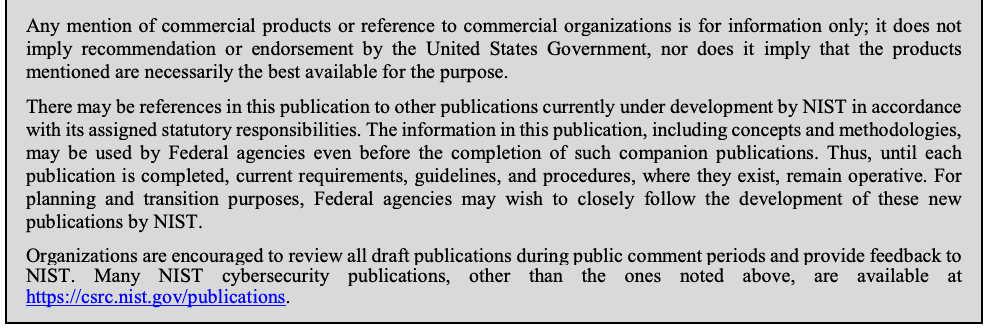
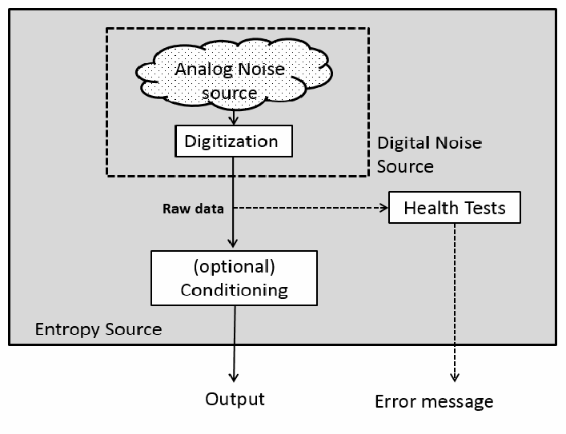
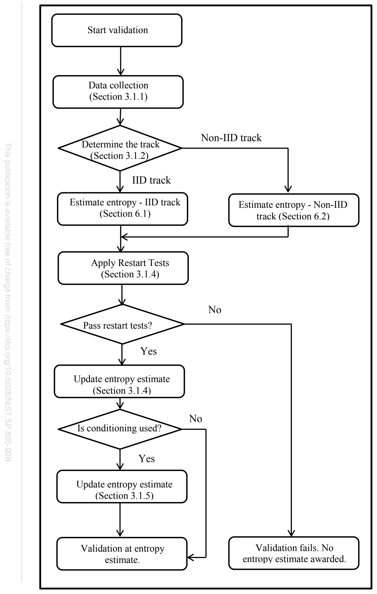
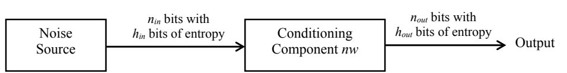

NIST Special Publication · PDF 原文抽出
Recommendation for the Entropy Sources Used for Random Bit Generation
ランダムビット生成に使用するエントロピー源
NIST SP 800-90B（Recommendation for the Entropy Sources Used for Random Bit Generation）の英文と日本語訳を段落ごとに並べた閲覧用ページです。ランダムビット生成器で使用するエントロピー源の設計原則、要件、および検証試験を定めます。NISTは2025年5月29日、5.2.4節と6.3.1節に関する訂正候補2件を公表しました。いずれも正式変更前のため、本文訳では2018年Finalの記載を保持しています。 翻訳は非公式です。要件の確認にはNIST の正式版 PDFを参照してください。
PDF から抽出した原文は原本との照合待ちです。
PDF p.12: 二段組の可能性があるため読み順を原本と照合してください
PDF p.20: 二段組の可能性があるため読み順を原本と照合してください
PDF p.21: 二段組の可能性があるため読み順を原本と照合してください
PDF p.22: 二段組の可能性があるため読み順を原本と照合してください
PDF p.25: 二段組の可能性があるため読み順を原本と照合してください
PDF p.39: 二段組の可能性があるため読み順を原本と照合してください
PDF p.40: 二段組の可能性があるため読み順を原本と照合してください
PDF p.44: 二段組の可能性があるため読み順を原本と照合してください
PDF p.45: 二段組の可能性があるため読み順を原本と照合してください
PDF p.46: 二段組の可能性があるため読み順を原本と照合してください
PDF p.47: 二段組の可能性があるため読み順を原本と照合してください
PDF p.49: 二段組の可能性があるため読み順を原本と照合してください
PDF p.50: 二段組の可能性があるため読み順を原本と照合してください
PDF p.51: 二段組の可能性があるため読み順を原本と照合してください
PDF p.52: 二段組の可能性があるため読み順を原本と照合してください
PDF p.54: 二段組の可能性があるため読み順を原本と照合してください
PDF p.55: 二段組の可能性があるため読み順を原本と照合してください
PDF p.56: 二段組の可能性があるため読み順を原本と照合してください
PDF p.57: 二段組の可能性があるため読み順を原本と照合してください
PDF p.58: 二段組の可能性があるため読み順を原本と照合してください
PDF p.59: 二段組の可能性があるため読み順を原本と照合してください
PDF p.60: 二段組の可能性があるため読み順を原本と照合してください
PDF p.61: 二段組の可能性があるため読み順を原本と照合してください
PDF p.62: 二段組の可能性があるため読み順を原本と照合してください
PDF p.64: 二段組の可能性があるため読み順を原本と照合してください
PDF p.75: 二段組の可能性があるため読み順を原本と照合してください
PDF p.77: 二段組の可能性があるため読み順を原本と照合してください
PDF p.78: 二段組の可能性があるため読み順を原本と照合してください
PDF p.82: 二段組の可能性があるため読み順を原本と照合してください
PDF p.83: 二段組の可能性があるため読み順を原本と照合してください
本文の数式はLaTeXの構造からKaTeXで表示しています。図と図中の数式は原本画像で保持しています。原本との照合、または説明文の訳の確認が済んでいない数式が 2 箇所あります。
NIST Special Publication 800-90B
NIST特別刊行物800-90B
Recommendation for the Entropy Sources Used for Random Bit
ランダムビット生成に使用するエントロピー源に関する推奨事項
未レビュー訳Generation
生成
未レビュー訳Meltem Sönmez Turan Elaine Barker
Meltem Sönmez Turan Elaine Barker
未レビュー訳John Kelsey Kerry A. McKay Mary L. Baish Mike Boyle
John Kelsey Kerry A. McKay Mary L. Baish Mike Boyle
未レビュー訳This publication is available free of charge from: https://doi.org/10.6028/NIST.SP.800-90B
本刊行物は次のURLから無料で入手できます: https://doi.org/10.6028/NIST.SP.800-90B
未レビュー訳C O M P U T E R S E C U R I T Y
コンピュータセキュリティ
NISTロゴ
NIST Special Publication 800-90B
NIST特別刊行物800-90B
Recommendation for the Entropy Sources Used for Random Bit
ランダムビット生成に使用するエントロピー源に関する推奨事項
未レビュー訳Generation
生成
未レビュー訳Meltem Sönmez Turan Elaine Barker
Meltem Sönmez Turan Elaine Barker
未レビュー訳John Kelsey Kerry McKay
John Kelsey Kerry McKay
未レビュー訳Computer Security Division Information Technology Laboratory
コンピュータセキュリティ部門 情報技術研究所
未レビュー訳Mary L. Baish Mike Boyle
Mary L. Baish Mike Boyle
未レビュー訳National Security Agency Fort Meade, MD
国家安全保障局（NSA） メリーランド州フォート・ミード
未レビュー訳This publication is available free of charge from: https://doi.org/10.6028/NIST.SP.800-90B
本刊行物は次のURLから無料で入手できます: https://doi.org/10.6028/NIST.SP.800-90B
未レビュー訳January 2018
2018年1月
未レビュー訳U.S. Department of Commerce Wilbur L. Ross, Jr., Secretary
米国商務省 Wilbur L. Ross, Jr. 長官
未レビュー訳National Institute of Standards and Technology
米国国立標準技術研究所
未レビュー訳Walter Copan, NIST Director and Under Secretary of Commerce for Standards and Technology
Walter Copan NIST所長兼商務省標準技術担当次官
未レビュー訳Authority
権限
未レビュー訳This publication has been developed by NIST in accordance with its statutory responsibilities under the Federal Information Security Modernization Act (FISMA) of 2014, 44 U.S.C. § 3551 et seq., Public Law (P.L.) 113-283. NIST is responsible for developing information security standards and guidelines, including minimum requirements for federal information systems, but such standards and guidelines shall not apply to national security systems without the express approval of appropriate federal officials exercising policy authority over such systems. This guideline is consistent with the requirements of the Office of Management and Budget (OMB) Circular A-130.
本刊行物は、2014年連邦情報セキュリティ近代化法（FISMA）、44 U.S.C. § 3551 et seq.、公法（P.L.）113-283に基づく法定責任に従ってNISTが作成した。NISTは、連邦情報システムの最低要件を含む情報セキュリティ標準およびガイドラインの策定に責任を負う。ただし、適切な政策権限を持つ連邦当局者の明示的な承認がない限り、これらの標準およびガイドラインは国家安全保障システムには適用されない。本ガイドラインは行政管理予算局（OMB）通達A-130の要件に整合する。
Nothing in this publication should be taken to contradict the standards and guidelines made mandatory and binding on federal agencies by the Secretary of Commerce under statutory authority. Nor should these guidelines be interpreted as altering or superseding the existing authorities of the Secretary of Commerce, Director of the OMB, or any other federal official. This publication may be used by nongovernmental organizations on a voluntary basis and is not subject to copyright in the United States. Attribution would, however, be appreciated by NIST.
本刊行物のいかなる記述も、商務長官が法的権限に基づいて連邦機関に義務付け、拘束力を持たせた標準およびガイドラインに反するものと解釈してはならない。また、本ガイドラインは、商務長官、OMB長官、その他の連邦当局者が有する既存の権限を変更または置き換えるものと解釈してはならない。本刊行物は非政府組織が任意に利用でき、米国内では著作権の対象とならない。ただし、NISTは出典の明記を歓迎する。
未レビュー訳National Institute of Standards and Technology Special Publication 800-90B Natl. Inst. Stand. Technol. Spec. Publ. 800-90B, 84 pages (January 2018) CODEN: NSPUE2
米国国立標準技術研究所 特別刊行物800-90B Natl. Inst. Stand. Technol. Spec. Publ. 800-90B、84ページ（2018年1月）CODEN: NSPUE2
未レビュー訳This publication is available free of charge from: https://doi.org/10.6028/NIST.SP.800-90B
本刊行物は次のURLから無料で入手できます: https://doi.org/10.6028/NIST.SP.800-90B
未レビュー訳原本PDFの抜粋画像

Comments on this publication may be submitted to: National Institute of Standards and Technology Attn: Computer Security Division, Information Technology Laboratory 100 Bureau Drive (Mail Stop 8930) Gaithersburg, MD 20899-8930 Email: rbg_comments@nist.gov
本刊行物に関する意見は、次の宛先に提出できます: National Institute of Standards and Technology, Attn: Computer Security Division, Information Technology Laboratory, 100 Bureau Drive (Mail Stop 8930), Gaithersburg, MD 20899-8930, Email: rbg_comments@nist.gov
未レビュー訳All comments are subject to release under the Freedom of Information Act (FOIA).
すべての意見は、情報公開法（FOIA）に基づく公開の対象となる。
Reports on Computer Systems Technology
コンピュータシステム技術に関する報告書
The Information Technology Laboratory (ITL) at the National Institute of Standards and Technology (NIST) promotes the U.S. economy and public welfare by providing technical leadership for the Nation’s measurement and standards infrastructure. ITL develops tests, test methods, reference data, proof of concept implementations, and technical analyses to advance the development and productive use of information technology. ITL’s responsibilities include the development of management, administrative, technical, and physical standards and guidelines for the cost-effective security and privacy of other than national security-related information in Federal information systems. The Special Publication 800-series reports on ITL’s research, guidelines, and outreach efforts in information system security, and its collaborative activities with industry, government, and academic organizations.
米国国立標準技術研究所（NIST）の情報技術研究所（ITL）は、国の計測・標準インフラに技術的リーダーシップを発揮し、米国経済と公共福祉の向上に寄与する。ITLは、情報技術の発展と効果的な活用を促進するため、試験、試験方法、参照データ、概念実証実装、および技術分析を開発する。ITLの責任には、連邦情報システムにおける国家安全保障関連以外の情報の費用対効果に優れたセキュリティとプライバシーを実現するための管理上、運用上、技術上および物理上の標準・ガイドラインの策定が含まれる。特別刊行物800シリーズは、情報システムセキュリティに関するITLの研究、ガイドライン、普及活動、および産業界、政府、学術機関との協力活動を報告する。
未レビュー訳Abstract
要旨
This Recommendation specifies the design principles and requirements for the entropy sources used by Random Bit Generators, and the tests for the validation of entropy sources. These entropy sources are intended to be combined with Deterministic Random Bit Generator mechanisms that are specified in SP 800-90A to construct Random Bit Generators, as specified in SP 800-90C.
本推奨事項は、ランダムビット生成器で使用するエントロピー源の設計原則と要件、およびエントロピー源の妥当性確認試験を規定する。これらのエントロピー源は、SP 800-90Aに規定される決定論的ランダムビット生成器のメカニズムと組み合わせ、SP 800-90Cに規定されるランダムビット生成器を構成することを意図している。
未レビュー訳Keywords
キーワード
Conditioning functions; entropy source; health testing; min-entropy; noise source; predictors; random number generators
コンディショニング関数; エントロピー源; ヘルステスト; 最小エントロピー; ノイズ源; 予測器; 乱数生成器
未レビュー訳Acknowledgements
謝辞
未レビュー訳The authors of this Recommendation gratefully acknowledge and appreciate contributions by their colleagues at NIST, Apostol Vassilev and Timothy A. Hall; and Aaron H. Kaufer and Darryl M. Buller of the National Security Agency for assistance in the development of this Recommendation. NIST also thanks the many contributions by the public and private sectors.
本推奨事項の著者は、NISTの同僚であるApostol Vassilev氏およびTimothy A. Hall氏、ならびに本推奨事項の策定を支援した国家安全保障局のAaron H. Kaufer氏およびDarryl M. Buller氏の貢献に深く感謝する。また、官民各分野から寄せられた多くの貢献にも感謝する。
Conformance Testing
適合性試験
未レビュー訳Conformance testing for implementations of this Recommendation will be conducted within the framework of the Cryptographic Algorithm Validation Program (CAVP) and the Cryptographic Module Validation Program (CMVP). The requirements of this Recommendation are indicated by the word “shall.” Some of these requirements may be out-of-scope for CAVP or CMVP validation testing, and thus are the responsibility of entities using, implementing, installing or configuring applications that incorporate this Recommendation.
本推奨事項の実装に対する適合性試験は、暗号アルゴリズム検証プログラム（CAVP）および暗号モジュール検証プログラム（CMVP）の枠組みで実施される。本推奨事項の要件は「shall」という語で示される。これらの要件の一部はCAVPまたはCMVPの検証試験の対象範囲外となる場合があり、その場合は、本推奨事項を組み込むアプリケーションを使用、実装、インストールまたは構成する組織が責任を負う。
Table of Contents
目次
未レビュー訳1 Introduction — 1
1 はじめに — 1
未レビュー訳1.1 Scope — 1
1.1 適用範囲 — 1
未レビュー訳1.2 Organization — 2
1.2 構成 — 2
未レビュー訳1.3 Symbols — 2
1.3 記号 — 2
2 General Discussion — 4
2 一般的な説明 — 4
未レビュー訳2.1 Min-Entropy — 4
2.1 最小エントロピー — 4
未レビュー訳2.2 The Entropy Source Model — 5
2.2 エントロピー源モデル — 5
未レビュー訳2.2.1 Noise Source — 5
2.2.1 ノイズ源 — 5
未レビュー訳2.2.2 Conditioning Component — 6
2.2.2 コンディショニング構成要素 — 6
未レビュー訳2.2.3 Health Tests — 6
2.2.3 ヘルステスト — 6
2.3 Conceptual Interfaces — 6
2.3 概念的インターフェース — 6
未レビュー訳2.3.1 GetEntropy: An Interface to the Entropy Source — 6
2.3.1 GetEntropy: エントロピー源へのインターフェース — 6
未レビュー訳2.3.2 GetNoise: An Interface to the Noise Source — 7
2.3.2 GetNoise: ノイズ源へのインターフェース — 7
未レビュー訳2.3.3 HealthTest: An Interface to the Entropy Source — 7
2.3.3 HealthTest: エントロピー源へのインターフェース — 7
3 Entropy Source Validation — 9
3 エントロピー源の妥当性確認 — 9
未レビュー訳3.1 Validation Process — 9
3.1 妥当性確認プロセス — 9
3.1.1 Data Collection — 9
3.1.1 データ収集 — 9
未レビュー訳3.1.2 Determining the track: IID track vs. non-IID track — 11
3.1.2 トラックの決定: IIDトラックと非IIDトラック — 11
3.1.3 Initial Entropy Estimate — 12
3.1.3 初期エントロピー推定 — 12
未レビュー訳3.1.4 Restart Tests — 12
3.1.4 再起動テスト — 12
未レビュー訳3.1.5 Entropy Estimation for Entropy Sources Using a Conditioning
3.1.5 コンディショニング構成要素を使用するエントロピー源のエントロピー推定
未レビュー訳Component — 14
— 14
未レビュー訳3.1.6 Additional Noise Sources — 17
3.1.6 追加のノイズ源 — 17
未レビュー訳3.2 Requirements for Validation Testing — 18
3.2 妥当性確認試験の要件 — 18
未レビュー訳3.2.1 Requirements on the Entropy Source — 18
3.2.1 エントロピー源に関する要件 — 18
3.2.2 Requirements on the Noise Source — 18
3.2.2 ノイズ源に関する要件 — 18
未レビュー訳3.2.3 Requirements on the Conditioning Component — 19
3.2.3 コンディショニング構成要素に関する要件 — 19
3.2.4 Requirements on Data Collection — 20
3.2.4 データ収集に関する要件 — 20
未レビュー訳4 Health Tests — 22
4 ヘルステスト — 22
未レビュー訳4.1 Health Test Overview — 22
4.1 ヘルステストの概要 — 22
未レビュー訳4.2 Types of Health Tests — 22
4.2 ヘルステストの種類 — 22
4.3 Requirements for Health Tests — 23
4.3 ヘルステストの要件 — 23
未レビュー訳4.4 Approved Continuous Health Tests — 25
4.4 承認済みの継続的ヘルステスト — 25
未レビュー訳4.4.1 Repetition Count Test — 25
4.4.1 反復カウントテスト — 25
4.4.2 Adaptive Proportion Test — 26
4.4.2 適応型比率テスト — 26
4.5 Developer-Defined Alternatives to the Continuous Health Tests — 28
4.5 継続的ヘルステストに代わる開発者定義の方法 — 28
未レビュー訳5 Testing the IID Assumption — 29
5 IID仮定の検定 — 29
未レビュー訳5.1 Permutation Testing — 29
5.1 順列検定 — 29
未レビュー訳5.1.1 Excursion Test Statistic — 31
5.1.1 逸脱検定統計量 — 31
未レビュー訳5.1.2 Number of Directional Runs — 31
5.1.2 方向性ランの個数 — 31
5.1.3 Length of Directional Runs — 31
5.1.3 方向性ランの長さ — 31
未レビュー訳5.1.4 Number of Increases and Decreases — 32
5.1.4 増加数と減少数 — 32
未レビュー訳5.1.5 Number of Runs Based on the Median — 32
5.1.5 中央値に基づくランの個数 — 32
未レビュー訳5.1.6 Length of Runs Based on Median — 33
5.1.6 中央値に基づくランの長さ — 33
未レビュー訳5.1.7 Average Collision Test Statistic — 33
5.1.7 平均衝突検定統計量 — 33
未レビュー訳5.1.8 Maximum Collision Test Statistic — 34
5.1.8 最大衝突検定統計量 — 34
5.1.9 Periodicity Test Statistic — 34
5.1.9 周期性検定統計量 — 34
未レビュー訳5.1.10 Covariance Test Statistic — 35
5.1.10 共分散検定統計量 — 35
未レビュー訳5.1.11 Compression Test Statistics — 35
5.1.11 圧縮検定統計量 — 35
未レビュー訳5.2 Additional Chi-square Statistical Tests — 35
5.2 追加のカイ二乗統計検定 — 35
未レビュー訳5.2.1 Testing Independence for Non-Binary Data — 35
5.2.1 非2値データの独立性検定 — 35
未レビュー訳5.2.2 Testing Goodness-of-fit for Non-Binary Data — 37
5.2.2 非2値データの適合度検定 — 37
5.2.3 Testing Independence for Binary Data — 37
5.2.3 2値データの独立性検定 — 37
未レビュー訳5.2.4 Testing Goodness-of-fit for Binary Data — 38
5.2.4 2値データの適合度検定 — 38
未レビュー訳5.2.5 Length of the Longest Repeated Substring Test — 39
5.2.5 最長反復部分文字列検定 — 39
未レビュー訳6 Estimating Min-Entropy — 40
6 最小エントロピーの推定 — 40
未レビュー訳6.1 IID Track: Entropy Estimation for IID Data — 40
6.1 IIDトラック: IIDデータのエントロピー推定 — 40
未レビュー訳6.2 Non-IID Track: Entropy Estimation for Non-IID Data — 40
6.2 非IIDトラック: 非IIDデータのエントロピー推定 — 40
6.3 Estimators — 41
6.3 推定量 — 41
未レビュー訳6.3.1 The Most Common Value Estimate — 41
6.3.1 最頻値推定 — 41
未レビュー訳6.3.2 The Collision Estimate — 42
6.3.2 衝突推定 — 42
未レビュー訳6.3.3 The Markov Estimate — 43
6.3.3 マルコフ推定 — 43
未レビュー訳6.3.4 The Compression Estimate — 45
6.3.4 圧縮推定 — 45
未レビュー訳6.3.5 t-Tuple Estimate — 47
6.3.5 tタプル推定 — 47
6.3.6 Longest Repeated Substring (LRS) Estimate — 48
6.3.6 最長反復部分文字列（LRS）推定 — 48
6.3.7 Multi Most Common in Window Prediction Estimate — 49
6.3.7 ウィンドウ内複数最頻値予測推定 — 49
6.3.8 The Lag Prediction Estimate — 51
6.3.8 ラグ予測推定 — 51
6.3.9 The MultiMMC Prediction Estimate — 52
6.3.9 MultiMMC予測推定 — 52
6.3.10 The LZ78Y Prediction Estimate — 55
6.3.10 LZ78Y予測推定 — 55
未レビュー訳6.4 Reducing the Symbol Space — 58
6.4 記号空間の縮小 — 58
未レビュー訳List of Appendices
付録一覧
未レビュー訳Acronyms — 60
略語 — 60
Glossary — 61
用語集 — 61
未レビュー訳References — 67
参考文献 — 67
Min-Entropy and Optimum Guessing Attack Cost — 69
最小エントロピーと最適推測攻撃コスト — 69
未レビュー訳The Narrowest Internal Width — 72
最狭内部幅 — 72
未レビュー訳CBC-MAC Specification — 73
CBC-MAC仕様 — 73
Different Strategies for Entropy Estimation — 74
エントロピー推定の各種戦略 — 74
未レビュー訳G.1 Entropic Statistics — 74
G.1 エントロピー統計 — 74
未レビュー訳G.1.1 Approximation of
G.1.1 の近似
未レビュー訳— 74
— 74
未レビュー訳G.2 Predictors — 75
G.2 予測器 — 75
未レビュー訳𝐅𝐅(𝟏𝟏/𝐳𝐳)
𝐅𝐅(𝟏𝟏/𝐳𝐳)
未レビュー訳List of Figures
図一覧
未レビュー訳Figure 1 Entropy Source Model — 5
図1 エントロピー源モデル — 5
未レビュー訳Figure 2 Entropy Estimation Strategy — 10
図2 エントロピー推定戦略 — 10
未レビュー訳Figure 3 Entropy of the Conditioning Component — 15
図3 コンディショニング構成要素のエントロピー — 15
未レビュー訳Figure 4 Generic Structure for Permutation Testing — 29
図4 順列検定の一般的な構造 — 29
未レビュー訳Figure 5 Pseudo-code of the Fisher-Yates Shuffle — 30
図5 Fisher-Yatesシャッフルの疑似コード — 30
List of Tables
表一覧
未レビュー訳Table 1 The narrowest internal width and output lengths of the vetted conditioning
表1 承認済みコンディショニング関数の最狭内部幅と出力長
未レビュー訳functions — 16
関数 — 16
未レビュー訳Table 2 Example cutoff values of the Adaptive Proportion Test — 27
表2 適応型比率テストのカットオフ値の例 — 27
未レビュー訳Table 3
表3
未レビュー訳values for different r values when L=1 000 000 — 76
L=1 000 000における異なるrの値
未レビュー訳𝑷𝑷𝑷𝑷𝑷𝑷𝑷𝑷𝑷𝑷𝑷𝑷
𝑷𝑷𝑷𝑷𝑷𝑷𝑷𝑷𝑷𝑷𝑷𝑷
未レビュー訳1 Introduction
1 はじめに
未レビュー訳1.1 Scope
1.1 適用範囲
未レビュー訳Cryptography and security applications make extensive use of random numbers and random bits. However, the generation of random bits is problematic in many practical applications of cryptography. The NIST Special Publication (SP) 800-90 series of Recommendations provides guidance on the construction and validation of Random Bit Generators (RBGs) in the form of Deterministic Random Bit Generators (DRBGs) (also known as pseudorandom number generators) or Non-deterministic Random Bit Generators (NRBGs) that can be used for cryptographic applications. This Recommendation specifies how to design and test entropy sources that can be used by these RBGs. SP 800-90A addresses the construction of approved DRBG mechanisms, while SP 800-90C addresses the construction of RBGs from the mechanisms in SP 800-90A and the entropy sources in SP 800-90B. These Recommendations provide a basis for validation by NIST's Cryptographic Algorithm Validation Program (CAVP) and Cryptographic Module Validation Program (CMVP).
暗号技術およびセキュリティアプリケーションでは、乱数とランダムビットが広く利用される。しかし、多くの実際の暗号応用において、ランダムビットの生成には課題がある。NIST特別刊行物（SP）800-90シリーズの推奨事項は、決定論的ランダムビット生成器（DRBG、疑似乱数生成器とも呼ばれる）または非決定論的ランダムビット生成器（NRBG）の形で、暗号用途に使用できるランダムビット生成器（RBG）の構成と妥当性確認に関する指針を示す。本推奨事項は、これらのRBGで使用できるエントロピー源の設計および試験方法を規定する。SP 800-90Aは承認済みDRBGメカニズムの構成を扱い、SP 800-90CはSP 800-90AのメカニズムとSP 800-90Bのエントロピー源からRBGを構成する方法を扱う。これらの推奨事項は、NISTの暗号アルゴリズム検証プログラム（CAVP）および暗号モジュール検証プログラム（CMVP）による妥当性確認の基礎となる。
An entropy source that conforms to this Recommendation can be used by RBGs to produce a sequence of random bits. The outputs of entropy sources should contain a sufficient amount of randomness to provide security. This Recommendation describes the properties that an entropy source must have to make it suitable for use by cryptographic random bit generators, as well as the tests used to validate the quality of the entropy source.
本推奨事項に適合するエントロピー源は、RBGでランダムビット列を生成するために使用できる。エントロピー源の出力には、セキュリティを確保するために十分なランダム性が含まれるべきである。本推奨事項は、暗号用ランダムビット生成器で使用するのに適したエントロピー源が備えるべき特性と、その品質を妥当性確認するための試験を説明する。
未レビュー訳The development of entropy sources that construct unpredictable outputs is difficult, and providing guidance for their design and validation testing is even more so. The testing approach defined in this Recommendation assumes that the developer understands the behavior of the source of randomness within the entropy source and has made a good-faith effort to produce an entropy source suitable for cryptographic applications (e.g., produces bitstrings that can provide entropy at a rate that meets (or exceeds) a specified value). It is expected that, over time, improvements to the guidance and testing will be made, based on experience in using and validating against this Recommendation.
予測不可能な出力を生成するエントロピー源を開発することは難しく、その設計および妥当性確認試験に関する指針を示すことはさらに難しい。本推奨事項の試験方式は、開発者がエントロピー源内のランダム性の発生源の動作を理解し、暗号用途に適したエントロピー源（例えば、指定値以上のレートでエントロピーを供給できるビット列を生成するもの）を作るため誠実に取り組んでいることを前提とする。本推奨事項の利用およびそれに基づく妥当性確認の経験を踏まえ、今後、指針と試験が改善されることが期待される。
This Recommendation is intended for use by entropy source developers (the entity that designs and builds the entropy source or a portion thereof), submitters1 (the entity that submits the entropy source for validation testing), NVLAP-accredited laboratories that validate entropy sources and any entity with an interest in having an entropy source validated.
本推奨事項は、エントロピー源開発者（エントロピー源またはその一部を設計・構築する主体）、申請者¹（エントロピー源を妥当性確認試験に提出する主体）、エントロピー源を検証するNVLAP認定試験所、およびエントロピー源の妥当性確認に関心を持つすべての主体を対象とする。
未レビュー訳This Recommendation was developed in concert with American National Standard (ANS) X9.82, a multi-part standard on random number generation.
本推奨事項は、乱数生成に関する複数部構成の規格である米国規格協会（ANSI）規格X9.82と連携して策定された。
未レビュー訳1.2 Organization
1.2 構成
未レビュー訳Section 2 gives a general discussion on min-entropy, the entropy source model and the conceptual interfaces. Section 3 explains the validation process and lists the requirements on the entropy source, data collection, documentation, etc. Section 4 describes the health tests. Section 5 includes various statistical tests to check whether or not the entropy source outputs are IID (independent and identically distributed). Section 6 provides several methods to estimate the entropy of the noise source. The appendices include a list of acronyms, a glossary, references, a discussion on min-entropy and the optimum-guessing-attack cost, information about the narrowest internal width, Cipher Block Chaining – Message Authentication Code (CBC-MAC) specification, and the underlying information on different entropy estimation strategies used in this Recommendation.
第2節では、最小エントロピー、エントロピー源モデルおよび概念的インターフェースについて一般的に説明する。第3節では妥当性確認プロセスを説明し、エントロピー源、データ収集、文書化などに関する要件を列挙する。第4節ではヘルステストを説明する。第5節には、エントロピー源の出力がIID（独立同分布）であるかどうかを調べる各種統計検定を含む。第6節では、ノイズ源のエントロピーを推定する複数の方法を示す。付録には、略語一覧、用語集、参考文献、最小エントロピーと最適推測攻撃コストに関する考察、最狭内部幅の情報、Cipher Block Chaining – Message Authentication Code（CBC-MAC）仕様、および本推奨事項で用いる各種エントロピー推定戦略の基礎情報を含む。
未レビュー訳1.3 Symbols
1.3 記号
未レビュー訳The following symbols and functions are used in this Recommendation.
本推奨事項では、次の記号および関数を使用する。
\(A=\{x_1,x_2,\ldots,x_k\}\) The alphabet, i.e., the set of all possible symbols that a (digitized) noise source produces.
\(A=\{x_1,x_2,\ldots,x_k\}\) アルファベット、すなわち（デジタル化された）ノイズ源が生成する、すべての可能な記号からなる集合。
\(H\) The min-entropy of the samples from a (digitized) noise source or of the output from an entropy source; the min-entropy assessment for a noise source or entropy source.
\(H\) （デジタル化された）ノイズ源のサンプルまたはエントロピー源の出力の最小エントロピー。ノイズ源またはエントロピー源の最小エントロピー評価値。
\(H_I\) Initial entropy estimate.
\(H_I\) 初期エントロピー推定値。
\(H_{\mathit{original}}\) Entropy estimate of the sequential dataset
\(H_{\mathit{original}}\) 逐次データセットのエントロピー推定値
\(H_{\mathit{submiter}}\) The entropy estimate provided by the submitter.
\(H_{\mathit{submiter}}\) 申請者が提示したエントロピー推定値。
\(L\) The number of samples.
\(L\) サンプル数。
\(\log_b(x)\) The logarithm of \(x\) with respect to base \(b\).
\(\log_b(x)\) \(x\)の、底\(b\)に対する対数。
The natural logarithm.
自然対数。
未レビュー訳ln(x)
ln(x)
未レビュー訳\(\min(a, b)\) A function that returns the minimum of the two values \(a\) and \(b\).
\(\min(a, b)\) 2つの値\(a\)および\(b\)の小さい方を返す関数。
\(\max(a, b)\) A function that returns the maximum of the two values \(a\) and \(b\).
\(\max(a, b)\) 2つの値\(a\)および\(b\)の大きい方を返す関数。
\(M[i][j]\) The \(j\)th sample from the \(i\)th restart of the noise source.
\(M[i][j]\) \(j\)番目のサンプルであって、ノイズ源の\(i\)回目の再起動から得たもの。
\(n\) The length of \(x_i\) in bits.
\(n\) \(x_i\)のビット単位での長さ。
\(\mathit{nw}\) Narrowest width of the conditioning component
\(\mathit{nw}\) コンディショニング構成要素の最狭幅
\(k\) The number of possible symbols, i.e., the size of the alphabet.
\(k\) 可能な記号の数、すなわちアルファベットの大きさ。
\(\alpha\) The probability of falsely rejecting the null hypothesis (type I error).
\(\alpha\) 帰無仮説を誤って棄却する確率（第I種過誤）。
A function that returns the absolute value of \(a\).
\(a\)の絶対値を返す関数。
\(|a|\)
\(|a|\)
The probability for an observation (or occurrence) of the symbol \(x_i\) in \(A\).
記号\(x_i\)が\(A\)内で観測される（または出現する）確率。
\(p_i\)
\(p_i\)
\(p_{\mathit{max}}\) The probability of observing the most common symbol from a noise source.
\(p_{\mathit{max}}\) ノイズ源から最も頻繁に出現する記号を観測する確率。
\(S=(s_1,\ldots,s_L)\) A dataset that consists of an ordered collection of \(L\) samples, where \(s_i \in A\).
\(S=(s_1,\ldots,s_L)\) \(L\)個のサンプルを順序付きで集めたデータセット。ここで\(s_i \in A\)である。
A possible output from the (digitized) noise source.
（デジタル化された）ノイズ源から得られる可能な出力。
未レビュー訳\(x_i\)
\(x_i\)
The interval of numbers between \(a\) and \(b\), including \(a\) and \(b\).
\(a\)から\(b\)までの数値区間。\(a\)および\(b\)を含む。
\([a, b]\)
\([a, b]\)
A function that returns the smallest integer greater than or equal to \(x\); also known as the ceiling function.
\(x\)以上の最小の整数を返す関数。天井関数ともいう。
\(\lceil x \rceil\)
\(\lceil x \rceil\)
A function that returns the largest integer less than or equal to \(x\); also known as the floor function.
\(x\)以下の最大の整数を返す関数。床関数ともいう。
\(\lfloor x \rfloor\)
\(\lfloor x \rfloor\)
Concatenation.
連結。
未レビュー訳\(\parallel\)
\(\parallel\)
Bit-wise exclusive-or operation.
ビット単位の排他的論理和演算。
未レビュー訳\(\oplus\)
\(\oplus\)
2 General Discussion
2 一般的な説明
未レビュー訳The three main components of a cryptographic RBG are a source of random bits (an entropy source), an algorithm for accumulating and providing random bits to the consuming applications, and a way to combine the first two components appropriately for cryptographic applications. This Recommendation describes how to design and test entropy sources. SP 800-90A describes deterministic algorithms that take an entropy input and use it to produce pseudorandom values. SP 800-90C provides the “glue” for putting the entropy source together with the algorithm to implement an RBG.
暗号用RBGの主な構成要素は、ランダムビットの発生源（エントロピー源）、ランダムビットを蓄積して利用アプリケーションに提供するアルゴリズム、およびこの2つの構成要素を暗号用途に適切に組み合わせる仕組みである。本推奨事項はエントロピー源の設計および試験方法を説明する。SP 800-90Aは、エントロピー入力を受け取り、疑似乱数値を生成する決定論的アルゴリズムを説明する。SP 800-90Cは、エントロピー源とアルゴリズムを組み合わせてRBGを実装するための「接着剤」となる。
未レビュー訳Specifying an entropy source is a complicated matter. This is partly due to confusion in the meaning of entropy, and partly due to the fact that, while other parts of an RBG design are strictly algorithmic, entropy sources depend on physical processes that may vary from one instance of a source to another. This section discusses, in detail, both the entropy source model and the meaning of entropy.
エントロピー源の仕様を定めることは複雑である。その一因はエントロピーの意味が混同されやすいことにあり、また、RBG設計の他の部分が厳密にアルゴリズムで定まる一方、エントロピー源は物理過程に依存し、同じ種類の源でも個体ごとに異なる場合があることにもよる。本節では、エントロピー源モデルとエントロピーの意味の両方を詳しく説明する。
未レビュー訳2.1 Min-Entropy
2.1 最小エントロピー
未レビュー訳The central mathematical concept underlying this Recommendation is entropy. Entropy is defined relative to one’s knowledge of an experiment’s output prior to observation, and reflects the uncertainty associated with predicting its value – the larger the amount of entropy, the greater the uncertainty in predicting the value of an observation. There are many possible measures for entropy; this Recommendation uses a very conservative measure known as min-entropy, which measures the effectiveness of the strategy of guessing the most likely output of the entropy source. (see Appendix D and [Cac97] for more information).
本推奨事項の基礎となる中心的な数学概念はエントロピーである。エントロピーは、観測前に実験結果について有する知識に相対して定義され、その値を予測する際の不確実性を表す。エントロピー量が大きいほど、観測値を予測する不確実性も大きい。エントロピーにはさまざまな尺度があるが、本推奨事項では最も保守的な尺度の一つである最小エントロピーを用いる。最小エントロピーは、エントロピー源の最も起こりやすい出力を推測する戦略の有効性を測定する（詳細は付録Dおよび[Cac97]を参照）。
未レビュー訳In cryptography, the unpredictability of secret values (such as cryptographic keys) is essential. The probability that a secret is guessed correctly in the first trial is related to the min-entropy of the distribution that the secret was generated from.
暗号技術では、暗号鍵などの秘密値の予測不可能性が不可欠である。秘密値を最初の試行で正しく推測する確率は、その秘密値が生成された分布の最小エントロピーに関係する。
未レビュー訳The min-entropy of an independent discrete random variable \(X\) that takes values from the set \(A=\{x_1,x_2,\ldots,x_k\}\) with probability \(\Pr(X=x_i) = p_i\) for \(i=1,\ldots,k\) is defined as
独立な離散確率変数\(X\)が集合\(A=\{x_1,x_2,\ldots,x_k\}\)から値を取り、その確率が\(\Pr(X=x_i) = p_i\)（\(i=1,\ldots,k\)）であるとき、その最小エントロピーを次のように定義する。
If \(X\) has min-entropy \(H\), then the probability of observing any particular value for \(X\) is no greater than \(2^{-H}\). The maximum possible value for the min-entropy of a random variable with \(k\) distinct values is \(\log_2 k\), which is attained when the random variable has a uniform probability distribution, i.e., \(p_1 = p_2 = \ldots = p_k = 1/k\).
\(X\)の最小エントロピーが\(H\)である場合、\(X\)の任意の特定の値を観測する確率は\(2^{-H}\)以下である。\(k\)個の異なる値を取る確率変数の最小エントロピーの最大値は\(\log_2 k\)であり、これは確率変数が一様な確率分布を持つ場合、すなわち\(p_1 = p_2 = \ldots = p_k = 1/k\)である場合に達成される。
2.2 The Entropy Source Model
2.2 エントロピー源モデル
未レビュー訳This section describes the entropy source model in detail. Figure 1 illustrates the model that this Recommendation uses to describe an entropy source and its components, which consist of a noise source, an optional conditioning component and a health testing component.
本節ではエントロピー源モデルを詳しく説明する。図1は、エントロピー源とその構成要素（ノイズ源、任意のコンディショニング構成要素、およびヘルステスト構成要素）を説明するために本推奨事項が用いるモデルを示す。

エントロピー源モデルの構成図
Figure 1 Entropy Source Model
図1 エントロピー源モデル
未レビュー訳2.2.1 Noise Source
2.2.1 ノイズ源
未レビュー訳The noise source is the root of security for the entropy source and for the RBG as a whole. This is the component that contains the non-deterministic, entropy-providing process that is ultimately responsible for the uncertainty associated with the bitstrings output by the entropy source.
ノイズ源は、エントロピー源およびRBG全体のセキュリティの根幹である。この構成要素には、非決定論的でエントロピーを提供する過程が含まれ、エントロピー源から出力されるビット列の不確実性を最終的に生み出す。
未レビュー訳If the non-deterministic activity being sampled produces something other than binary data, the sampling process includes a digitization process that converts the output samples to bits. The output of the digitized noise source is called the raw data.
サンプリング対象の非決定論的活動が2値データ以外を生成する場合、サンプリング過程には出力サンプルをビットに変換するデジタル化処理が含まれる。デジタル化されたノイズ源の出力を生データと呼ぶ。
This Recommendation assumes that the sample values (i.e., the symbols) obtained from a noise source consist of fixed-length bitstrings.
本推奨事項では、ノイズ源から得られるサンプル値（記号）は固定長のビット列であると仮定する。
Noise sources can be divided into two categories: Physical noise sources use dedicated hardware to generate randomness; whereas Non-physical noise sources use system data (such as output of Application Programming Interface (API) functions, Random Access Memory (RAM) data or system time) or human input (e.g., mouse movements) to generate randomness.
ノイズ源は2種類に大別できる。物理ノイズ源は専用ハードウェアを用いてランダム性を生成する。一方、非物理ノイズ源は、システムデータ（API関数の出力、ランダムアクセスメモリ（RAM）データ、システム時刻など）または人間の入力（マウス操作など）を用いてランダム性を生成する。
未レビュー訳If the noise source fails to generate random outputs, no other component in the RBG can compensate for the lack of entropy; hence, no security guarantees can be made for the application relying on the RBG.
ノイズ源がランダムな出力の生成に失敗した場合、RBGの他の構成要素がエントロピーの不足を補うことはできない。したがって、そのRBGに依存するアプリケーションにセキュリティ保証を与えることはできない。
未レビュー訳2.2.2 Conditioning Component
2.2.2 コンディショニング構成要素
未レビュー訳The optional conditioning component is a deterministic function responsible for reducing bias and/or increasing the entropy rate of the resulting output bits (if necessary to obtain a target value). There are various methods for achieving this. The developer should consider how the conditioning component to be used and how variations in the behavior of the noise source may affect the entropy rate of the output. In choosing an approach to implement, the developer may either choose to implement a cryptographic algorithm listed in Section 3.1.5.1.1 or use an alternative algorithm as a conditioning component. The use of either of these approaches is permitted by this Recommendation.
任意のコンディショニング構成要素は、必要に応じて目標値を得るために、バイアスを低減したり、出力ビットのエントロピーレートを高めたりする決定論的関数である。これを実現する方法は複数ある。開発者は、使用するコンディショニング構成要素と、ノイズ源の動作の変動が出力のエントロピーレートに及ぼす影響を検討するべきである。実装方法として、第3.1.5.1.1節に列挙する暗号アルゴリズムを実装することも、代替アルゴリズムをコンディショニング構成要素として使用することもできる。本推奨事項では、いずれの方法も認められる。
未レビュー訳2.2.3 Health Tests
2.2.3 ヘルステスト
未レビュー訳Health tests are an integral part of the entropy source design that are intended to ensure that the noise source and the entire entropy source continue to operate as expected. When testing the entropy source, the end goal is to obtain assurance that failures of the entropy source are caught quickly and with a high probability. Another aspect of health testing strategy is determining the likely failure modes for the entropy source and, in particular, for the noise source. Health tests are expected to include tests that can detect these failure conditions.
ヘルステストはエントロピー源設計の不可欠な要素であり、ノイズ源およびエントロピー源全体が想定どおりに動作し続けることを確認するために行う。エントロピー源を試験する最終的な目的は、故障を迅速かつ高い確率で検出できるという保証を得ることである。ヘルステスト戦略では、エントロピー源、特にノイズ源で起こり得る故障モードを特定することも重要である。ヘルステストには、こうした故障状態を検出できる試験を含めることが期待される。
未レビュー訳The health tests can be separated into three categories: start-up tests, continuous tests (primarily on the noise source), and on-demand tests (See Section 4 for more information).
ヘルステストは、起動時テスト、継続的テスト（主にノイズ源を対象とする）、およびオンデマンドテストの3種類に分けられる（詳細は第4節を参照）。
2.3 Conceptual Interfaces
2.3 概念的インターフェース
未レビュー訳This section describes three conceptual interfaces that can be used to interact with the entropy source: GetEntropy, GetNoise and HealthTest. However, it is anticipated that the actual interfaces used may depend on the entropy source employed.
本節ではエントロピー源とのやり取りに使用できる3つの概念的インターフェース、GetEntropy、GetNoise、およびHealthTestを説明する。ただし、実際に使用するインターフェースは採用するエントロピー源によって異なる場合がある。
These interfaces can be used when constructing an RBG as specified in SP 800-90C.
これらのインターフェースは、SP 800-90Cに規定するRBGの構成時に使用できる。
2.3.1 GetEntropy: An Interface to the Entropy Source
2.3.1 GetEntropy: エントロピー源へのインターフェース
未レビュー訳The GetEntropy interface can be considered to be a command interface into the outer entropy source box in Figure 1. This interface is meant to indicate the types of requests for services that an entropy source may support.
GetEntropyインターフェースは、図1のエントロピー源の外枠に対するコマンドインターフェースと考えることができる。このインターフェースは、エントロピー源がサポートするサービス要求の種類を示す。
A GetEntropy call could return a bitstring containing the requested amount of entropy, along with an indication of the status of the request. Optionally, an assessment of the entropy can be provided. Note that the length of the returned bitstring may be greater than the amount of entropy requested.
GetEntropyの呼び出しは、要求された量のエントロピーを含むビット列と、要求の状態表示を返すことができる。任意でエントロピー評価値を提供してもよい。返されるビット列の長さは、要求されたエントロピー量を上回る場合がある。
GetEntropy
Input:
\(\mathit{bits\_of\_entropy}\): the requested amount of entropy
Output:
\(\mathit{entropy\_bitstring}\): The string that provides the requested entropy.
\(\mathit{status}\): A Boolean value that is TRUE if the request has been satisfied, and is FALSE otherwise.
GetEntropy
入力:
\(\mathit{bits\_of\_entropy}\): 要求するエントロピー量
出力:
\(\mathit{entropy\_bitstring}\): 要求されたエントロピーを提供する文字列。
\(\mathit{status}\): 要求が満たされた場合はTRUE、そうでない場合はFALSEとなるブール値。
2.3.2 GetNoise: An Interface to the Noise Source
2.3.2 GetNoise: ノイズ源へのインターフェース
未レビュー訳The GetNoise interface can be considered to be a command interface into the noise source component of an entropy source. This could be used to obtain raw, digitized outputs from the noise source for use in validation testing or for external health (i.e., testing performed external to the entropy source). While it is not required to be in this form, it is expected that an interface be available that allows noise source data to be obtained without harm to the entropy source. This interface is meant to provide test data to credit a noise source with an entropy estimate during validation or for external health testing. It is permitted that such an interface be available only in “test mode” and that it is disabled when the source is operational.
GetNoiseインターフェースは、エントロピー源のノイズ源構成要素に対するコマンドインターフェースと考えることができる。妥当性確認試験または外部ヘルス試験（エントロピー源の外部で実施する試験）に使用するため、ノイズ源から生のデジタル化出力を取得する目的で利用できる。この形式であることは必須ではないが、エントロピー源に悪影響を与えずにノイズ源データを取得できるインターフェースが用意されることが期待される。このインターフェースは、妥当性確認時のノイズ源のエントロピー推定、または外部ヘルス試験に用いる試験データを提供する。こうしたインターフェースは「試験モード」でのみ利用可能とし、ノイズ源の運用中は無効にしてもよい。
This interface is not intended to constrain real-world implementations, but to provide a consistent notation to describe the data collection from noise sources.
このインターフェースは実環境の実装を制約するものではなく、ノイズ源からのデータ収集を一貫した表記で説明するためのものである。
A GetNoise call returns raw, digitized samples from the noise source, along with an indication of the status of the request.
GetNoiseの呼び出しは、ノイズ源からの生のデジタル化サンプルと要求の状態表示を返す。
GetNoise
Input:
\(\mathit{number\_of\_samples\_requested}\): An integer value that indicates the requested number of samples to be returned from the noise source.
Output:
\(\mathit{noise\_source\_data}\): The sequence of samples from the noise source with a length of \(\mathit{number\_of\_samples\_requested}\).
\(\mathit{status}\): A Boolean value that is TRUE if the request has been satisfied, and is FALSE otherwise.
GetNoise
入力:
\(\mathit{number\_of\_samples\_requested}\): ノイズ源から返すよう要求するサンプル数を示す整数値。
出力:
\(\mathit{noise\_source\_data}\): ノイズ源からのサンプル列。長さは\(\mathit{number\_of\_samples\_requested}\)である。
\(\mathit{status}\): 要求が満たされた場合はTRUE、そうでない場合はFALSEとなるブール値。
2.3.3 HealthTest: An Interface to the Entropy Source
2.3.3 HealthTest: エントロピー源へのインターフェース
未レビュー訳A HealthTest call is a request to the entropy source to conduct a test of its health. Note that it may not be necessary to include a separate HealthTest interface if the execution of the tests can be initiated in another manner that is acceptable to FIPS 140 [FIPS140] validation.
HealthTestの呼び出しは、エントロピー源にヘルステストの実施を要求する。試験の実行をFIPS 140 [FIPS140]の妥当性確認で認められる別の方法で開始できる場合、独立したHealthTestインターフェースは不要なことがある。
未レビュー訳HealthTest
Input:
\(\mathit{type\_of\_test\_requested}\): A bitstring that indicates the type or suite of tests to be performed (this may vary from one entropy source to another).
Output:
\(\mathit{status}\): A Boolean value that is TRUE if the entropy source passed the requested test, and is FALSE otherwise.
HealthTest
入力:
\(\mathit{type\_of\_test\_requested}\): 実施する試験または試験群の種類を示すビット列（エントロピー源ごとに異なる場合がある）。
出力:
\(\mathit{status}\): エントロピー源が要求された試験に合格した場合はTRUE、そうでない場合はFALSEとなるブール値。
3 Entropy Source Validation
3 エントロピー源の妥当性確認
未レビュー訳Entropy source validation is necessary in order to obtain assurance that all relevant requirements of this Recommendation are met. This Recommendation provides requirements for validating an entropy source at a stated entropy rate. Validation consists of testing by an NVLAP-accredited laboratory against the requirements of SP 800-90B, followed by a review of the results by CAVP and CMVP. Validation provides additional assurance that adequate entropy is provided by the source and may be necessary to satisfy some legal restrictions, policies, and/or directives of various organizations.
本推奨事項の関連要件がすべて満たされているという保証を得るには、エントロピー源の妥当性確認が必要である。本推奨事項は、指定されたエントロピーレートでエントロピー源を妥当性確認するための要件を定める。妥当性確認は、NVLAP認定試験所がSP 800-90Bの要件に照らして試験を実施し、その後CAVPおよびCMVPが結果を審査することで行われる。妥当性確認により、源が十分なエントロピーを提供するという追加の保証が得られ、組織の法的制約、方針または指令を満たすために必要となる場合がある。
The validation of an entropy source presents many challenges. No other part of an RBG is so dependent on the technological and environmental details of an implementation. At the same time, the proper operation of the entropy source is essential to the security of an RBG. The developer should make every effort to design an entropy source that can be shown to serve as a consistent source of entropy, producing bitstrings that can provide entropy at a rate that meets (or exceeds) a specified value. In order to design an entropy source that provides an adequate amount of entropy per output bitstring, the developer must be able to accurately estimate the amount of entropy that can be provided by sampling its (digitized) noise source. The developer must also understand the behavior of the other components included in the entropy source, since the interactions between the various components may affect any assessment of the entropy that can be provided by an implementation of the design. For example, if it is known that the raw noise-source output is biased, appropriate conditioning components can be included in the design to reduce the bias of the entropy source output to a tolerable level before any bits are output from the entropy source.
エントロピー源の妥当性確認には多くの課題がある。RBGの他のどの部分も、実装の技術的・環境的詳細にこれほど依存しない。一方、エントロピー源が適切に動作することはRBGのセキュリティに不可欠である。開発者は、一貫したエントロピー源として機能し、指定値以上のレートでエントロピーを供給できるビット列を生成することを示せるよう、あらゆる努力を払うべきである。出力ビット列ごとに十分なエントロピーを提供する源を設計するには、（デジタル化された）ノイズ源をサンプリングして得られるエントロピー量を正確に推定できなければならない。また、設計の実装から得られるエントロピーの評価は構成要素間の相互作用に左右され得るため、エントロピー源に含まれる他の構成要素の動作も理解する必要がある。例えば、生のノイズ源出力に偏りがあると分かっている場合、出力ビットを生成する前にエントロピー源出力の偏りを許容可能な水準まで低減する適切なコンディショニング構成要素を設計に含められる。
未レビュー訳3.1 Validation Process
3.1 妥当性確認プロセス
未レビュー訳An entropy source may be submitted to an accredited lab for validation testing by the developer or any entity with an interest in having an entropy source validated. After the entropy source is submitted for validation, the lab will examine all documentation and theoretical justifications submitted. The lab will evaluate these claims, and may ask for more evidence or clarification.
開発者またはエントロピー源の妥当性確認に関心を持つ主体は、認定試験所にエントロピー源を提出して妥当性確認試験を受けることができる。提出後、試験所は提出されたすべての文書と理論的根拠を調査し、その主張を評価する。試験所は追加の証拠または説明を求める場合がある。
The general flow of entropy source validation testing is summarized in Figure 2. The following sections describe the details of the validation testing process.
エントロピー源の妥当性確認試験の一般的な流れを図2に示す。以下の節では、妥当性確認試験プロセスの詳細を説明する。
3.1.1 Data Collection
3.1.1 データ収集
未レビュー訳The submitter provides the following inputs for entropy estimation, according to the requirements presented in Section 3.2.4.
申請者は、第3.2.4節の要件に従って、エントロピー推定用に次の入力を提供する。
未レビュー訳
Figure 2 Entropy Estimation Strategy
図2 エントロピー推定戦略
未レビュー訳1.A sequential dataset of at least 1 000 000 sample values obtained directly from the noise source (i.e., raw data) shall be collected for validation 2. If the generation of 1 000 000 consecutive samples is not possible, the concatenation of several smaller sets of consecutive samples (generated using the same noise source) is allowed. Smaller sets shall contain at least 1000 samples. The concatenated dataset shall contain at least 1 000 000 samples.
1.ノイズ源から直接取得したサンプル値（すなわち生データ）を少なくとも1 000 000個含む逐次データセットを、妥当性確認のために収集しなければならない²。1 000 000個の連続サンプルを生成できない場合、同じノイズ源で生成した複数のより小さな連続サンプル集合を連結してもよい。各集合は少なくとも1000サンプルを含まなければならない。連結後のデータセットは少なくとも1 000 000サンプルを含まなければならない。
未レビュー訳2.If the entropy source includes a conditioning component that is not listed in Section 3.1.5.1.1, a conditioned sequential dataset of at least 1 000 000 consecutive conditioning component outputs shall be collected for validation. The output of the conditioning component shall be concatenated in the order in which it was generated and treated as a binary string for testing purposes. Note that the data collected from the noise source for validation may be used as input to the conditioning component for the collection of conditioned output values.
2.エントロピー源に第3.1.5.1.1節に列挙されていないコンディショニング構成要素が含まれる場合、妥当性確認のため、その構成要素の出力を連続して少なくとも1 000 000個含む逐次データセットを収集しなければならない。コンディショニング構成要素の出力は、生成順に連結し、試験ではビット列として扱わなければならない。妥当性確認のためにノイズ源から収集したデータを、コンディショニング構成要素への入力として用い、コンディショニング後の出力値を収集してもよい。
3. For the restart tests (see Section 3.1.4), the entropy source must be restarted 1000 times; for each restart, 1000 consecutive samples shall be collected directly from the noise source. The restart data shall be extracted whenever the noise source is ready and able to provide data that can be used for producing entropy source output. This data is stored in a \(1000 \times 1000\) restart matrix \(M\), where \(M[i][j]\) represents the \(j^{\text{th}}\) sample from the \(i^{\text{th}}\) restart.
3. 再起動テスト（第3.1.4節参照）では、エントロピー源を1000回再起動し、各再起動についてノイズ源から連続する1000サンプルを直接収集しなければならない。再起動データは、ノイズ源がエントロピー源出力の生成に利用できるデータを提供可能になった時点で抽出しなければならない。このデータは\(1000 \times 1000\)の再起動行列\(M\)に格納する。ここで\(M[i][j]\)は、\(j^{\text{番目}}\)のサンプル（\(i^{\text{番目}}\)の再起動におけるもの）を表す。
3.1.2 Determining the track: IID track vs. non-IID track
3.1.2 トラックの決定: IIDトラックと非IIDトラック
未レビュー訳In this Recommendation, entropy estimation is done using two different tracks: an IID-track and a non-IID track. The IID-track (see Section 6.1) is used for entropy sources that generate IID (independent and identically distributed) samples, whereas the non-IID track (see Section 6.2) is used for noise sources that do not generate IID samples.
本推奨事項では、IIDトラックと非IIDトラックの2つの異なるトラックを用いてエントロピーを推定する。IIDトラック（第6.1節参照）はIID（独立同分布）サンプルを生成するエントロピー源に使用し、非IIDトラック（第6.2節参照）はIIDサンプルを生成しないノイズ源に使用する。
The track selection is done based on the following rules. The IID track shall be used only when all of the following conditions are satisfied:
トラックは次の規則に基づいて選択する。IIDトラックは、以下の条件がすべて満たされる場合にのみ使用しなければならない。
1.The submitter makes an IID claim on the noise source, based on the submitter’s analysis of the design. The submitter shall provide rationale for the IID claim.
1.申請者は、設計の分析に基づいてノイズ源がIIDであると主張する。申請者は、そのIID主張の根拠を提示しなければならない。
未レビュー訳2.The sequential dataset described in item 1 of Section 3.1.1 is tested using the statistical tests described in Section 5 to verify the IID assumption, and the IID assumption is verified (i.e., there is no evidence that the data is not IID).
2.第3.1.1節項目1に記載の逐次データセットに対し、第5節の統計検定を用いてIID仮定を検証し、IID仮定が確認される（すなわち、データがIIDでないことを示す証拠がない）。
3.The row and column datasets described in item 3 of Section 3.1.1 are tested using the statistical tests described in Section 5 to verify the IID assumption, and the IID assumption is verified.
3.第3.1.1節項目3に記載の行および列のデータセットに対し、第5節の統計検定を用いてIID仮定を検証し、IID仮定が確認される。
4.If a conditioning component that is not listed in Section 3.1.5.1.1 is used, the conditioned sequential dataset (described in item 2 of Section 3.1.1) is tested using the statistical tests described in Section 5 to verify the IID assumption, and the IID assumption is verified.
4.第3.1.5.1.1節に列挙されていないコンディショニング構成要素を使用する場合、第3.1.1節項目2に記載のコンディショニング後の逐次データセットに対し、第5節の統計検定を用いてIID仮定を検証し、IID仮定が確認される。
未レビュー訳If any of these conditions are not met, the estimation process shall follow the non-IID track.
これらの条件のいずれかが満たされない場合、推定プロセスは非IIDトラックに従わなければならない。
未レビュー訳3.1.3 Initial Entropy Estimate
3.1.3 初期エントロピー推定
未レビュー訳The submitter shall provide an entropy estimate for the noise source outputs, which is based on the submitter’s analysis of the noise source (see Requirement 3 in Section 3.2.2). This estimate is denoted as \(H_{\mathit{submitter}}\).
提出者は、提出者によるノイズ源の分析に基づく、ノイズ源出力のエントロピー推定値を提示しなければならない（第3.2.2節の要件3参照）。この推定値を\(H_{\mathit{submitter}}\)と表す。
After determining the entropy estimation track, a min-entropy estimate per sample, denoted as \(H_{\mathit{original}}\), for the sequential dataset is calculated using the methods described in Section 6.1 (for the IID track) or Section 6.2 (for the non-IID track). If the alphabet size is greater than 256, it shall be reduced to at most 256 symbols (see Section 6.4).
エントロピー推定トラックの決定後、サンプル当たりの最小エントロピー推定値（\(H_{\mathit{original}}\)と表す）を、逐次データセットについて、第6.1節（IIDトラックの場合）または第6.2節（非IIDトラックの場合）に記載の方法を用いて計算する。アルファベットの大きさが256を超える場合、記号数を最大256に削減しなければならない（第6.4節参照）。
If the sequential dataset is not binary, an additional entropy estimation (per bit), denoted \(H_{\mathit{bitstring}}\), is estimated. First, the sequential dataset that contains \(L\) samples (each having \(n\) bits) is considered as a bitstring of size \(nL\). The bits after the first 1 000 000 bits may be ignored. Then, the estimation is done based on the entropy estimation track, as specified in the previous paragraph, and \(H_{\mathit{bitstring}}\)
逐次データセットが2値でない場合、ビット当たりの追加のエントロピー推定値（\(H_{\mathit{bitstring}}\)と表す）を推定する。まず、\(L\)個のサンプル（各\(n\)ビット）を含む逐次データセットを、サイズ\(nL\)のビット列とみなす。最初の1 000 000ビットより後のビットは無視してよい。次に、前段落で指定したエントロピー推定トラックに基づいて推定を行い、\(H_{\mathit{bitstring}}\)
is calculated. Then, the entropy per sample is estimated to be \(n \times H_{\mathit{bitstring}}\).
を計算する。その後、サンプル当たりのエントロピーを \(n \times H_{\mathit{bitstring}}\) と推定する。
The initial entropy estimate of the noise source is calculated as \(H_I = \min(H_{\mathit{original}}, n \times H_{\mathit{bitstring}}, H_{\mathit{submitter}})\) for non-binary sources and as \(H_I = \min(H_{\mathit{original}}, H_{\mathit{submitter}})\) for binary sources.
ノイズ源の初期エントロピー推定値は、2値でない源については \(H_I = \min(H_{\mathit{original}}, n \times H_{\mathit{bitstring}}, H_{\mathit{submitter}})\)、2値源については \(H_I = \min(H_{\mathit{original}}, H_{\mathit{submitter}})\) として計算する。
3.1.4 Restart Tests
H_original H_submitter
未レビュー訳The entropy estimate of a noise source, calculated from a single, long-output sequence, might provide an overestimate if the noise source generates correlated sequences after restarts. Hence, an attacker with access to multiple noise source output sequences after restarts may be able to predict the next output sequence with much better success than the entropy estimate suggests.
単一の長い出力系列から計算したノイズ源のエントロピー推定値は、再起動後にノイズ源が相関系列を生成する場合、過大評価となることがある。そのため、複数回の再起動後に得られる複数のノイズ源出力系列へアクセスできる攻撃者は、推定値が示唆するよりも高い成功率で次の出力系列を予測できる可能性がある。
未レビュー訳The process of restarting a noise source may be different for different noise sources (e.g., powering off, cooling off, delaying ten seconds before extracting output from the noise source, etc.). The submitter shall define the restart process suitable for the submission. This process shall simulate the restart process expected in real-world use (e.g., the outputs are not generated until after the start-up tests are complete; see Section 4.2). All restarts are expected to be done in normal operating conditions.
ノイズ源を再起動する手順は、ノイズ源によって異なる場合がある（電源を切る、冷却する、ノイズ源から出力を取得するまで10秒待つなど）。申請者は提出対象に適した再起動手順を定義しなければならない。この手順は、実環境で想定される再起動を模擬しなければならない（例えば、第4.2節に示すように起動時テストが完了するまで出力を生成しない）。すべての再起動は通常の動作条件下で行うことが期待される。
未レビュー訳The restart tests described in this section re-evaluate the entropy estimate for the noise source using different outputs from many restarts of the noise source. These tests are designed to ensure that:
本節に記載する再起動テストは、ノイズ源の複数回の再起動後に得られる異なる出力を用いてノイズ源のエントロピー推定値を再評価する。これらの試験は、次を確認するために設計されている。
未レビュー訳- The noise source outputs generated after a restart are drawn from the same distribution as every other output.
- 再起動後に生成されるノイズ源出力は、他のすべての出力と同じ分布から得られる。
未レビュー訳- The distribution of samples in a restart sequence is independent of its position in the restart sequence.
- 再起動系列内のサンプル分布は、その系列内の位置から独立している。
未レビュー訳- The knowledge of other restart sequences does not offer additional advantage in predicting the next restart sequence.
- 他の再起動系列についての知識を得ても、次の再起動系列を予測するうえで追加の優位性が得られない。
未レビュー訳3.1.4.1 Constructing Restart Data
3.1.4.1 再起動データの構築
未レビュー訳To construct restart data, the entropy source shall be restarted \(r = 1000\) times; for each restart, \(c = 1000\) consecutive samples shall be collected directly from the noise source. The collection of the data shall be done as soon as the entropy source is ready to produce outputs for real-world use (e.g., after start-up tests). Note that an entropy source, in its real-world use and during restart testing, may inhibit outputs for a time immediately after restarting in order to allow any transient weak behavior to pass. The output samples are stored in an \(r\) by \(c\) matrix \(M\), where \(M[i][j]\) represents the \(j\)th sample from the \(i\)th restart.
再起動データを構築するため、エントロピー源を \(r = 1000\) 回再起動しなければならず、各再起動について、連続する \(c = 1000\) 個のサンプルをノイズ源から直接収集しなければならない。データの収集は、エントロピー源が実環境で使用する出力を生成できる状態になった直後（例えば起動時テストの後）に行わなければならない。エントロピー源は、実環境での使用時も再起動試験時も、過渡的な弱い動作が過ぎ去るように、再起動直後の一定時間は出力を抑止してよい。出力サンプルは \(r\) 行 \(c\) 列の行列 \(M\) に格納する。ここで \(M[i][j]\) は、\(j\)番目のサンプルであって \(i\)回目の再起動から得たものを表す。
Two datasets are constructed using the matrix \(M\):
行列 \(M\) を用いて、2つのデータセットを構築する。
- The row dataset is constructed by concatenating the rows of the matrix \(M\), i.e., the row dataset is \(M[1][1] \parallel \ldots \parallel M[1][c] \parallel M[2][1] \parallel \ldots \parallel M[2][c] \parallel \ldots \parallel M[r][1] \parallel \ldots \parallel M[r][c]\).
- The column dataset is constructed by concatenating the columns of the matrix \(M\), i.e., the column dataset is \(M[1][1] \parallel \ldots \parallel M[r][1] \parallel M[1][2] \parallel \ldots \parallel M[r][2] \parallel \ldots \parallel M[1][\mathrm{c}] \parallel \ldots \parallel M[r][c]\).
- row（行）データセットは、行列 \(M\) の行を連結して構築する。すなわち、row データセットは \(M[1][1] \parallel \ldots \parallel M[1][c] \parallel M[2][1] \parallel \ldots \parallel M[2][c] \parallel \ldots \parallel M[r][1] \parallel \ldots \parallel M[r][c]\) である。
- column（列）データセットは、行列 \(M\) の列を連結して構築する。すなわち、column データセットは \(M[1][1] \parallel \ldots \parallel M[r][1] \parallel M[1][2] \parallel \ldots \parallel M[r][2] \parallel \ldots \parallel M[1][\mathrm{c}] \parallel \ldots \parallel M[r][c]\) である。
3.1.4.2 Validation Testing
3.1.4.2 妥当性確認試験
未レビュー訳The restart tests check the relations between noise source samples generated after restarting the entropy source, and compare the results to the initial entropy estimate, \(H_I\) (see Section 3.1.3).
再起動テストは、エントロピー源の再起動後に生成されたノイズ源サンプル間の関係を確認し、その結果を初期エントロピー推定値 \(H_I\)（第3.1.3節参照）と比較する。
First, the sanity check described in Section 3.1.4.3 is performed on the matrix \(M\). If the test fails, the validation fails and no entropy estimate is awarded.
If the noise source does not fail the sanity check, then the entropy estimation methods described in Section 6.1 (for the IID track) or Section 6.2 (for the non-IID track) are performed on the row and the column datasets, based on the track of the entropy source. Let \(H_{\mathrm{r}}\) and \(H_{\mathrm{c}}\) be the resulting entropy estimates of the row and the column datasets, respectively. The entropy estimates from the row and the column datasets are expected to be close to the initial entropy estimate \(H_I\). If the minimum of \(H_r\) and \(H_c\) is less than half of \(H_I\), the validation fails, and no entropy estimate is awarded. Otherwise, the entropy assessment of the noise source is taken as the minimum of the row, the column and the initial estimates, i.e., \(\min(H_{\mathrm{r}}, H_{\mathrm{c}}, \mathrm{H}_I)\).
まず、行列 \(M\) に対して第3.1.4.3節に記載する健全性確認を実施する。この試験に失敗した場合、妥当性確認は不合格となり、エントロピー推定値は認定されない。
ノイズ源が健全性確認に不合格とならなかった場合、エントロピー源のトラックに応じて、第6.1節（IIDトラック）または第6.2節（非IIDトラック）に記載するエントロピー推定方法を row データセットおよび column データセットに適用する。\(H_{\mathrm{r}}\) および \(H_{\mathrm{c}}\) を、それぞれ行データセットおよび列データセットから得られるエントロピー推定値とする。行および列データセットから得られるエントロピー推定値は、初期エントロピー推定値 \(H_I\) に近いことが期待される。\(H_r\) と \(H_c\) の小さい方が \(H_I\) の半分未満であれば、妥当性確認は不合格となり、エントロピー推定値は認定されない。そうでない場合、ノイズ源のエントロピー評価値は、行、列および初期の各推定値の最小値、すなわち \(\min(H_{\mathrm{r}}, H_{\mathrm{c}}, \mathrm{H}_I)\) とする。
If the noise source does not fail the restart tests, and the entropy source does not include a conditioning component, the entropy source will be validated at \(H = \min(H_{\mathrm{r}}, H_{\mathrm{c}}, \mathrm{H}_I)\). If the entropy source includes a conditioning component, the entropy assessment of the entropy source is updated as described in Section 3.1.5.
ノイズ源が再起動テストに不合格とならず、かつエントロピー源がコンディショニング構成要素を含まない場合、エントロピー源は \(H = \min(H_{\mathrm{r}}, H_{\mathrm{c}}, \mathrm{H}_I)\) で妥当性確認される。エントロピー源がコンディショニング構成要素を含む場合、エントロピー源のエントロピー評価値は第3.1.5節に記載のとおり更新される。
3.1.4.3 Sanity Check - Most Common Value in the Rows and Columns
源のエントロピー評価値は第3.1.5節に記載のとおり更新される。
未レビュー訳This test checks the frequency of the most common value in the rows and the columns of the matrix \(M\). If this frequency is significantly greater than the expected value, given the initial entropy estimate \(H_I\) calculated in Section 3.1.3, the restart test fails. In this case, the validation fails no entropy estimate is awarded.
この試験では、行列 \(M\) の行および列における最頻値の頻度を調べる。この頻度が、第3.1.3節で計算した初期エントロピー推定値 \(H_I\) に基づく期待値を大幅に上回る場合、再起動テストは不合格となる。その場合、妥当性確認は不合格となり、エントロピー推定値は認定されない。
This sanity check is based on a binomial test, where there are two possible outcomes for each trial: the most frequent value or any other value is observed. The purpose of the test is to determine whether the most frequent value appears more than would be expected, given the initial entropy estimate, \(H_I\). The probability of type I error, denoted \(\alpha\), is set at 0.01 over the entire sanity check, where each of the 2000 binomial experiments3 has type I error probability of 0.000 005.
この健全性確認は二項検定に基づく。各試行の結果は、最頻値が観測されるか、それ以外の値が観測されるかの2通りである。この検定の目的は、初期エントロピー推定値 \(H_I\) に照らして、最頻値が期待される以上に現れるかどうかを判定することである。第I種過誤の確率（\(\alpha\) と表記する）は健全性確認全体で0.01に設定し、2000回の二項実験3のそれぞれの第I種過誤確率を0.000 005とする。
Only the experiment yielding the highest count is tested. If that experiment passes the test, then the other 1999 experiments will pass as well. If any of the 2000 experiments were to fail, one of the failed experiments would be the experiment having the highest count. Therefore, it is sufficient to test the experiment with the highest count.
最大のカウント値を示した実験だけを検定すればよい。その実験が合格すれば、他の1999実験も合格する。2000実験のいずれかが不合格となるなら、最大カウント値を示した実験も不合格となるため、最大カウント値の実験を検定すれば十分である。
未レビュー訳Given the 1000 by 1000 restart matrix and the initial entropy estimate \(H_I\), the test is performed as follows:
1000×1000の再起動行列と初期エントロピー推定値 \(H_I\) が与えられたとき、試験は次のとおり実施する。
1. Let \(p = 2^{-H_I}\). Let \(\alpha\) be 0.000 005.
1. \(p = 2^{-H_I}\) とする。\(\alpha\) を0.000 005とする。
2. For each row (\(1 \le i \le 1000\)) of the matrix, count the number of occurrences of each sample present in the row. Set \(X_{Ri}\) to the highest count value for row \(i\). Let \(X_R\) be the maximum count value for all the rows, i.e., \(X_R = \max(X_{R1}, \ldots, X_{R1000})\).
2. 行列の各行（\(1 \le i \le 1000\)）について、その行に含まれる各サンプルの出現回数を数える。\(X_{Ri}\) を行 \(i\) の最大カウント値とする。\(X_R\) をすべての行に対する最大カウント値とする。すなわち、\(X_R = \max(X_{R1}, \ldots, X_{R1000})\) である。
3. For each column (\(1 \le i \le 1000\)) of the matrix, count the number of occurrences of each sample present in the column. Set \(X_{Ci}\) to the highest count value for column \(i\). Let \(X_C\) be the maximum count value for all the columns, i.e., \(X_C = \max(X_{C1}, \ldots, X_{C1000})\).
3. 行列の各列（\(1 \le i \le 1000\)）について、その列に含まれる各サンプルの出現回数を数える。\(X_{Ci}\) を列 \(i\) の最大カウント値とする。\(X_C\) をすべての列に対する最大カウント値とする。すなわち、\(X_C = \max(X_{C1}, \ldots, X_{C1000})\) である。
4. Let \(X_{\mathit{max}} = \max(X_c, X_R)\).
4. \(X_{\mathit{max}} = \max(X_c, X_R)\) とする。
5. Calculate \(\mathrm{P}(X \ge X_{\mathit{max}}) = \sum_{j=X_{\mathit{max}}}^{1000} \binom{1000}{j} p^j (1-p)^{1000-j}\). If \(\Pr(X \ge X_{\mathit{max}}) < \alpha\), the test fails. Otherwise, the test passes.
5. \(\mathrm{P}(X \ge X_{\mathit{max}}) = \sum_{j=X_{\mathit{max}}}^{1000} \binom{1000}{j} p^j (1-p)^{1000-j}\) を計算する。\(\Pr(X \ge X_{\mathit{max}}) < \alpha\) なら試験は不合格である。そうでなければ、試験は合格である。
3.1.5 Entropy Estimation for Entropy Sources Using a Conditioning Component
3.1.5 コンディショニング構成要素を使用するエントロピー源のエントロピー推定
未レビュー訳The optional conditioning component gets inputs from the noise source and generates the output of the entropy source. The size of the input and the output of the conditioning component in bits, denoted as \(n_{\mathit{in}}\) and \(n_{\mathit{out}}\), respectively, shall be fixed and shall be specified by the submitter. Noise source outputs are concatenated to construct \(n_{\mathit{in}}\)-bit input to the conditioning function. The entropy of the input, denoted \(h_{\mathit{in}}\), depends on the number of samples needed to construct the \(n_{\mathit{in}}\)-bit input. If \(w\) samples are needed, then \(h_{\mathit{in}}\) is estimated to be \(w \times h\) bits. The size of the conditioning component input shall be a multiple of the size of the noise source output.
任意のコンディショニング構成要素は、ノイズ源から入力を受け取り、エントロピー源の出力を生成する。コンディショニング構成要素の入力および出力のビット単位のサイズを、それぞれ \(n_{\mathit{in}}\) および \(n_{\mathit{out}}\) と表す。これらは固定でなければならず、提出者が指定しなければならない。ノイズ源の出力を連結して、コンディショニング関数への \(n_{\mathit{in}}\) ビットの入力を構成する。入力のエントロピーを \(h_{\mathit{in}}\) と表す。これは、\(n_{\mathit{in}}\) ビットの入力を構成するのに必要なサンプル数に依存する。\(w\) 個のサンプルが必要な場合、\(h_{\mathit{in}}\) は \(w \times h\) ビットと推定される。コンディショニング構成要素の入力サイズは、ノイズ源出力のサイズの倍数でなければならない。
Since the conditioning component is deterministic, the entropy of the output is at most \(h_{\mathit{in}}\). However, the conditioning component may reduce the entropy of the output. The entropy of the output from the conditioning component is denoted as \(h_{\mathit{out}}\), i.e., \(h_{\mathit{out}}\) bits of entropy are contained within the \(n_{\mathit{out}}\)-bit output. The entropy of the output also depends on the internals of the
コンディショニング構成要素は決定論的であるため、出力のエントロピーは最大でも \(h_{\mathit{in}}\) である。ただし、コンディショニング構成要素が出力のエントロピーを減らす場合がある。コンディショニング構成要素の出力のエントロピーを \(h_{\mathit{out}}\) と表す。すなわち、\(h_{\mathit{out}}\) ビットのエントロピーが \(n_{\mathit{out}}\) ビットの出力に含まれる。出力のエントロピーは、さらに……の内部構造にも依存する
conditioning components. In this Recommendation, the narrowest internal width within the conditioning component is denoted as nw. A discussion on the narrowest internal width is given in Appendix E.
コンディショニング構成要素の内部構造にも依存する。本推奨事項では、コンディショニング構成要素内の最狭内部幅をnwとする。最狭内部幅については付録Eで説明する。
未レビュー訳
Output
出力
未レビュー訳Figure 3 Entropy of the Conditioning Component
図3 コンディショニング構成要素のエントロピー
未レビュー訳The optional conditioning component can be designed in various ways. Section 3.1.5.1.1 provides a list of vetted cryptographic algorithms/functions for conditioning the noise source outputs. Submitters are allowed to use other conditioning components. If a conditioning component from Section 3.1.5.1.1 is used, the entropy estimation is performed as described in Section 3.1.5.1.2; if a non-listed algorithm is used, the entropy estimation is performed as described in Section 3.1.5.2.
任意のコンディショニング構成要素はさまざまな方法で設計できる。第3.1.5.1.1節には、ノイズ源出力のコンディショニングに使用できる審査済み暗号アルゴリズム/関数の一覧を示す。申請者は他のコンディショニング構成要素を使用してもよい。第3.1.5.1.1節に列挙されたコンディショニング構成要素を使用する場合は第3.1.5.1.2節の方法でエントロピーを推定し、列挙されていないアルゴリズムを使用する場合は第3.1.5.2節の方法で推定する。
3.1.5.1 Using Vetted Conditioning Components
3.1.5.1 審査済みコンディショニング構成要素の使用
未レビュー訳Both keyed and unkeyed algorithms have been vetted for conditioning. Section 3.1.5.1.1 provides a list of vetted conditioning components. Section 3.1.5.1.2 discusses the method for determining the entropy provided by a vetted conditioning component.
鍵付きおよび鍵なしの両方のアルゴリズムがコンディショニング用として審査されている。第3.1.5.1.1節に審査済みコンディショニング構成要素の一覧を示し、第3.1.5.1.2節では審査済みコンディショニング構成要素が提供するエントロピーの決定方法を説明する。
3.1.5.1.1 List of Vetted Conditioning Components
3.1.5.1.1 審査済みコンディショニング構成要素の一覧
Three keyed algorithms have been vetted for a keyed conditioning component:
鍵付きコンディショニング構成要素として、次の3つの鍵付きアルゴリズムが審査されている。
1.HMAC, as specified in FIPS 198, with any approved hash function specified in FIPS 180 or FIPS 202,
1.FIPS 198に規定されるHMAC。FIPS 180またはFIPS 202に規定される任意の承認済みハッシュ関数を使用する。
2.CMAC, as specified in SP 800-38B, with the AES block cipher (see FIPS 197), and
2.SP 800-38Bに規定されるCMAC。AESブロック暗号を使用する（FIPS 197参照）。
3.CBC-MAC, as specified in Appendix F, with the AES block cipher. This Recommendation does not approve the use of CBC-MAC for purposes other than as a conditioning component in an RBG.
3.付録Fに規定されるCBC-MAC。AESブロック暗号を使用する。本推奨事項は、RBGのコンディショニング構成要素以外の目的でCBC-MACを使用することを承認しない。
未レビュー訳Three unkeyed functions have been vetted for an unkeyed conditioning component:
鍵なしコンディショニング構成要素として、次の3つの鍵なし関数が審査されている。
1.Any approved hash function specified in FIPS 180 or FIPS 202,
1.FIPS 180またはFIPS 202に規定される任意の承認済みハッシュ関数。
2.Hash_df, as specified in SP 800-90A, using any approved hash function specified in FIPS 180 or FIPS 202, and
2.SP 800-90Aに規定されるHash_df。FIPS 180またはFIPS 202に規定される任意の承認済みハッシュ関数を使用する。
3.Block_Cipher_df, as specified in SP800-90A using the AES block cipher (see FIPS 197).
3.SP 800-90Aに規定されるBlock_Cipher_df。AESブロック暗号を使用する（FIPS 197参照）。
The narrowest internal width and the output length for the vetted conditioning functions are provided in the following table.
審査済みコンディショニング関数の最狭内部幅および出力長を次の表に示す。
Table 1 The narrowest internal width and output lengths of the vetted conditioning functions.
表1 審査済みコンディショニング関数の最狭内部幅と出力長
| Conditioning Function | Narrowest Internal Width (\(\mathit{nw}\)) | Output Length (\(n_{\mathit{out}}\)) |
| HMAC | hash-function output size | hash-function output size |
| CMAC | AES block size = 128 | AES block size = 128 |
| CBC-MAC | AES block size = 128 | AES block size = 128 |
| Hash Function | hash-function output size | hash-function output size |
| Hash_df | hash-function output size | hash-function output size |
| Block_Cipher_df | AES key size | AES key size |
| コンディショニング関数 | 最狭内部幅（\(\mathit{nw}\)） | 出力長（\(n_{\mathit{out}}\)） |
| HMAC | ハッシュ関数の出力サイズ | ハッシュ関数の出力サイズ |
| CMAC | AESブロックサイズ = 128 | AESブロックサイズ = 128 |
| CBC-MAC | AESブロックサイズ = 128 | AESブロックサイズ = 128 |
| ハッシュ関数 | ハッシュ関数の出力サイズ | ハッシュ関数の出力サイズ |
| Hash_df | ハッシュ関数の出力サイズ | ハッシュ関数の出力サイズ |
| Block_Cipher_df | AES鍵サイズ | AES鍵サイズ |
For Hash_df and Block_cipher_df, the output length indicated in the table is used as the \(\mathit{no\_of\_bits\_to\_return}\) input parameter for the invocation of Hash_df and Block_Cipher_df (see SP 800-90A).
Hash_df および Block_cipher_df では、表に示す出力長を、Hash_df および Block_Cipher_df の呼び出しにおける入力パラメータ \(\mathit{no\_of\_bits\_to\_return}\) として使用する（SP 800-90A 参照）。
3.1.5.1.2 Entropy Assessment using Vetted Conditioning Components
3.1.5.1.2 審査済みコンディショニング構成要素によるエントロピー評価
未レビュー訳When using a conditioning component listed in Section 3.1.5.1.1 (given the assurance of correct implementation by CAVP testing), the entropy of the output is estimated as
CAVP試験により正しく実装されている保証が得られたうえで、第3.1.5.1.1節に列挙されたコンディショニング構成要素を使用する場合、出力エントロピーは次のように推定する。
未レビュー訳where \(\operatorname{Output\_Entropy}(n_{\mathit{in}}, n_{\mathit{out}}, \mathit{nw}, h_{\mathit{in}})\) is described as follows4:
ここで、\(\operatorname{Output\_Entropy}(n_{\mathit{in}}, n_{\mathit{out}}, \mathit{nw}, h_{\mathit{in}})\) は次のとおり記述される4。
1. Let \(P_{\mathit{high}} = 2^{-h_{\mathit{in}}}\) and \(P_{\mathit{low}} = \frac{(1 - P_{\mathit{high}})}{2^{n_{\mathit{in}}} - 1}\).
2. \(n = \min(n_{\mathit{out}}, \mathit{nw})\).
3. \(\psi = 2^{n_{\mathit{in}} - n} P_{\mathit{low}} + P_{\mathit{high}}\)
1. \(P_{\mathit{high}} = 2^{-h_{\mathit{in}}}\)、\(P_{\mathit{low}} = \frac{(1 - P_{\mathit{high}})}{2^{n_{\mathit{in}}} - 1}\) とする。
2. \(n = \min(n_{\mathit{out}}, \mathit{nw})\)。
3. \(\psi = 2^{n_{\mathit{in}} - n} P_{\mathit{low}} + P_{\mathit{high}}\)
4. \(\mathrm{U} = 2^{n_{\mathit{in}} - n} + \sqrt{2\, n (2^{n_{\mathit{in}} - n}) \ln(2)}\)
5. \(\omega = U \times P_{\mathit{low}}\)
4. \(\mathrm{U} = 2^{n_{\mathit{in}} - n} + \sqrt{2\, n (2^{n_{\mathit{in}} - n}) \ln(2)}\)
5. \(\omega = U \times P_{\mathit{low}}\)
6. Return \(-\log_2(\max(\psi, \omega))\)
6. \(-\log_2(\max(\psi, \omega))\) を返す
The entropy source will be assessed at the min-entropy per conditioned output, \(h_{\mathit{out}}\), computed above. Vetted conditioning components are permitted to claim full entropy outputs.
エントロピー源は、上記で計算した、コンディショニング後の出力当たりの最小エントロピー \(h_{\mathit{out}}\) で評価される。審査済みコンディショニング構成要素は、全エントロピー出力を主張することが認められる。
4 The formula used to generate Output_Entropy() is adapted from the formula \(k_\alpha = \frac{m}{n} + \alpha \sqrt{2 \frac{m}{n} \ln n}\) provided in Theorem 1 of [RaSt98], such that \(m\) is equal to \(2^{n_{\mathit{in}}}\), \(n\) is equal to \(2^n\) and \(\alpha\) is equal to 1.
4 Output_Entropy() の算出に用いる式は、[RaSt98] の定理1に示された式 \(k_\alpha = \frac{m}{n} + \alpha \sqrt{2 \frac{m}{n} \ln n}\) を基にしている。ここで、\(m\) は \(2^{n_{\mathit{in}}}\) に等しく、\(n\) は \(2^n\) に等しく、\(\alpha\) は 1 に等しい。
Note that it is acceptable to truncate the outputs from a vetted conditioning component. If this is done, the entropy estimate is reduced to a proportion of the output (e.g., if there are six bits of entropy in an eight-bit output and the output is truncated to six bits, then the entropy is reduced to \(3/4 \mathbin{\mathrm{x}} 6 = 4.5\) bits).
審査済みコンディショニング構成要素の出力は切り詰めてもよい。この場合、エントロピー推定値は出力に占める割合に応じて減少する（例えば、8ビット出力に6ビットのエントロピーが含まれ、その出力を6ビットに切り詰めると、エントロピーは\(3/4 \mathbin{\mathrm{x}} 6 = 4.5\)ビットに減少する）。
When additional noise sources are available, the length of the input (\(n_{\mathit{in}}\)) shall only include the inputs from the primary noise source.
追加のノイズ源を利用できる場合、入力長（\(n_{\mathit{in}}\)）には主要ノイズ源からの入力のみを含めなければならない。
3.1.5.2 Using Non-vetted Conditioning Components
3.1.5.2 未審査コンディショニング構成要素の使用
For non-vetted conditioning components, the entropy in the output depends on the entropy and size of the input (\(h_{\mathit{in}}\) and \(n_{\mathit{in}}\)), the size of the output (\(n_{\mathit{out}}\)), and the size of the narrowest internal width (\(\mathit{nw}\)) and the entropy of the conditioned sequential dataset (as described in item 2 of Section 3.1.1), which shall be computed using the methods described in either Section 6.1 (for IID data) or Section 6.2 (for non-IID data). Let the obtained entropy estimate per bit be \(h'\).
未審査コンディショニング構成要素では、出力エントロピーは入力のエントロピーとサイズ（\(h_{\mathit{in}}\)および\(n_{\mathit{in}}\)）、出力サイズ（\(n_{\mathit{out}}\)）、ならびに最狭内部幅（\(\mathit{nw}\)）、およびコンディショニング後の逐次データセットのエントロピー（第3.1.1節の項目2に記載）に依存する。後者は、第6.1節（IIDデータ）または第6.2節（非IIDデータ）に記載の方法のいずれかを用いて計算しなければならない。得られたビット当たりのエントロピー推定値を\(h'\)とする。
The output of the conditioning component (\(n_{\mathit{out}}\)) shall be treated as a binary string, for purposes of the entropy estimation.
エントロピー推定では、コンディショニング構成要素の出力（\(n_{\mathit{out}}\)）を2値文字列として扱わなければならない。
The entropy of the conditioned output is estimated as
コンディショニング後出力のエントロピーを次のように推定する。
The description of \(\mathrm{Output\_Entropy}\) is given in Section 3.1.5.1.2. To avoid approving an entropy source having a non-vetted conditioning component with full entropy, \(n_{\mathit{out}}\) is multiplied by the constant 0.999. The entropy source will be validated at the min-entropy per conditioned output, \(h_{\mathit{out}}\), computed above.
\(\mathrm{Output\_Entropy}\)の説明は第3.1.5.1.2節に示す。未審査コンディショニング構成要素を含むエントロピー源が全エントロピーを有するとして承認されることを避けるため、\(n_{\mathit{out}}\)に定数0.999を乗じる。エントロピー源は、上記で計算したコンディショニング後出力当たりの最小エントロピー\(h_{\mathit{out}}\)で妥当性確認される。
Note that truncating subsequent to the use of a non-vetted conditioning component shall not be performed before providing output from the entropy source.
なお、未審査コンディショニング構成要素を使用した後の切り詰めは、エントロピー源から出力を提供する前に行ってはならない。
3.1.6 Additional Noise Sources
3.1.6 追加のノイズ源
In this Recommendation, it is assumed that the entropy sources have a unique primary noise source that is responsible to generate randomness. It should be noted that multiple copies of the same physical noise source are considered as a single noise source (e.g., a source with eight ring oscillators, where the sampled bits are concatenated to get an eight-bit output, or where the samples bits are XORed together).
本推奨事項では、エントロピー源にはランダム性の生成を担う固有の主要ノイズ源が1つあると仮定する。同一の物理ノイズ源を複数複製したものは、単一のノイズ源とみなされる（例えば、8個のリングオシレーターを持ち、サンプリングしたビットを連結して8ビット出力にする場合や、サンプルをXORする場合）。
In addition to the primary noise source outputs, outputs of other noise sources may be available to the entropy source, and their outputs may be used to increase security. However, the joint entropy of these outputs may be hard to estimate, especially when there are dependencies between the sources (e.g., packet arrival times in a communication network and hard drive access times).
主要ノイズ源の出力に加えて、他のノイズ源の出力をエントロピー源で利用でき、セキュリティ向上に用いる場合がある。ただし、特に源同士に依存関係がある場合（通信ネットワークのパケット到着時刻とハードディスクアクセス時刻など）、それらの出力の同時エントロピーの推定は困難なことがある。
This Recommendation allows one to concatenate the outputs of the additional noise sources to the primary noise source to generate input to the conditioning component. In such cases, vetted conditioning components shall be used. No entropy is credited from the outputs of the additional noise sources.
本推奨事項では、追加ノイズ源の出力を主要ノイズ源の出力に連結し、コンディショニング構成要素への入力を生成することを認める。この場合、審査済みコンディショニング構成要素を使用しなければならない。追加ノイズ源の出力からエントロピーは認定されない。
3.2 Requirements for Validation Testing
3.2 妥当性確認試験の要件
未レビュー訳In this section, high-level requirements (on both submitters and testers) are presented for validation testing.
本節では、妥当性確認試験に関する高水準の要件（提出者および試験者の双方に課されるもの）を示す。
3.2.1 Requirements on the Entropy Source
3.2.1 エントロピー源に関する要件
未レビュー訳The intent of these requirements is to assist the developer in designing/implementing an entropy source that can provide outputs with a consistent amount of entropy and to produce the required documentation for entropy source validation.
これらの要件は、一貫した量のエントロピーを提供する出力を生成できるエントロピー源を開発者が設計・実装し、妥当性確認に必要な文書を作成できるよう支援することを目的とする。
1.The entire design of the entropy source shall be documented, including the interaction of the components specified in Section 2.2. The documentation shall justify why the entropy source can be relied upon to produce bits with entropy.
1.エントロピー源の設計全体を文書化し、第2.2節に規定する構成要素間の相互作用も記載しなければならない。文書では、エントロピー源がエントロピーを含むビットを生成するものとして信頼できる理由を説明しなければならない。
未レビュー訳2.Documentation shall describe the operation of the entropy source, including how the entropy source works, and how to obtain data from within the entropy source for validation testing.
2.文書には、エントロピー源の動作（その仕組み、および妥当性確認試験のために内部からデータを取得する方法を含む）を記載しなければならない。
未レビュー訳3.Documentation shall describe the range of operating conditions (e.g., temperature range, voltages, system activity, etc.) under which the entropy source is claimed to operate correctly. The entropy source outputs are expected to have similar entropy rates in this specified range of operating conditions.
3.文書には、エントロピー源が正しく動作すると主張する動作条件の範囲（温度範囲、電圧、システム活動など）を記載しなければならない。指定範囲内では、エントロピー源の出力が同程度のエントロピーレートを持つことが期待される。
未レビュー訳4.The entropy source shall have a well-defined (conceptual) security boundary. This security boundary shall be documented; the documentation shall include a description of the content of the security boundary.
4.エントロピー源には、明確に定義された（概念上の）セキュリティ境界がなければならない。この境界を文書化し、境界内に含まれるものを説明しなければならない。
未レビュー訳5.When a conditioning component is not used, the output from the entropy source is the output of the noise source, and no additional interface is required. In this case, the noise-source output is available during both validation testing and normal operation. When a conditioning component is included in the entropy source, the output from the entropy source is the output of the conditioning component, and an additional interface is required to access the noise-source output. In this case, the noise-source output shall be accessible via the interface during validation testing, but the interface may be disabled otherwise. The designer shall fully document the method used to get access to the raw noise source samples. If the noise-source interface is not disabled during normal operation, any noise-source output using this interface shall not be provided to the conditioning component for processing and eventual output as normal entropy-source output.
5.コンディショニング構成要素を使用しない場合、エントロピー源の出力はノイズ源の出力であり、追加インターフェースは不要である。この場合、ノイズ源出力は妥当性確認試験時と通常運用時の双方で利用できる。コンディショニング構成要素を含む場合、エントロピー源の出力はその構成要素の出力であり、ノイズ源出力にアクセスする追加インターフェースが必要となる。この場合、妥当性確認試験中はインターフェースを介してノイズ源出力にアクセスできなければならないが、それ以外では無効にしてもよい。設計者は生のノイズ源サンプルへアクセスする方法を完全に文書化しなければならない。通常運用中にノイズ源インターフェースを無効にしない場合、そのインターフェースから得たノイズ源出力をコンディショニング構成要素で処理し、通常のエントロピー源出力として出力してはならない。
未レビュー訳6.The entropy source may restrict access to raw noise source samples to special circumstances that are not available to users in the field, and the documentation shall explain why this restriction is not expected to substantially alter the behavior of the entropy source as tested during validation.
6.エントロピー源は、現場のユーザーが利用できない特別な状況に限って生のノイズ源サンプルへのアクセスを制限してもよい。その場合、妥当性確認時に試験したエントロピー源の動作をこの制限が大きく変えないと期待できる理由を文書で説明しなければならない。
7.Documentation shall contain a description of the restarting process applied during the restart tests.
7.文書には、再起動テストで適用する再起動手順を記載しなければならない。
3.2.2 Requirements on the Noise Source
3.2.2 ノイズ源に関する要件
未レビュー訳The entropy source will have no more entropy than that provided by the noise source, and as such, the noise source requires special attention during validation testing. This is partly due to the fundamental importance of the noise source (if it does not do its job, the entropy source will not provide the expected amount of security), and partly because the probabilistic nature of its behavior requires more complicated testing.
エントロピー源が持つエントロピーはノイズ源が提供する量を超えないため、妥当性確認試験ではノイズ源に特別な注意が必要である。これは、ノイズ源が基本的に重要であること（ノイズ源が機能しなければ、エントロピー源は期待されるセキュリティ量を提供しない）と、その動作が確率的であるため試験が複雑になることによる。
未レビュー訳The requirements for the noise source are as follows:
ノイズ源に関する要件は次のとおりである。
1.The operation of the noise source shall be documented; this documentation shall include a description of how the noise source works, where the unpredictability comes from, and rationale for why the noise source provides acceptable entropy output, and should reference relevant, existing research and literature.
1.ノイズ源の動作を文書化しなければならない。文書には、ノイズ源の仕組み、予測不可能性の由来、許容可能なエントロピー出力を提供すると考える根拠を含めるべきであり、関連する既存の研究・文献を参照するべきである。
未レビュー訳2.The behavior of the noise source shall be stationary (i.e., the probability distributions of the noise source outputs do not change when shifted in time). Documentation shall include why it is believed that the entropy rate does not change significantly during normal operation. This can be in broad terms of where the unpredictability comes from and a rough description of the behavior of the noise source (to show that it is reasonable to assume that the behavior is stationary).
2.ノイズ源の動作は定常でなければならない（すなわち、時間をずらしてもノイズ源出力の確率分布が変化しない）。通常運用中にエントロピーレートが大きく変化しないと考える理由を文書に含めなければならない。その説明は、予測不可能性の由来やノイズ源の動作の概略を示し、定常動作を仮定する合理性を説明するものでよい。
3.Documentation shall provide an explicit statement of the expected entropy provided by the noise source outputs and provide a technical argument for why the noise source can support that entropy rate. To support this, documentation may include a stochastic model of the noise source outputs, and an entropy estimation based on this stochastic model may be included.
3.文書では、ノイズ源出力が提供すると期待されるエントロピーを明示し、そのエントロピーレートをノイズ源が支えられる理由を技術的に論証しなければならない。その裏付けとして、ノイズ源出力の確率モデルを含めてもよく、そのモデルに基づくエントロピー推定を含めてもよい。
未レビュー訳4.The noise source state shall be protected from adversarial knowledge or influence to the greatest extent possible. The methods used for this shall be documented, including a description of the (conceptual) security boundary’s role in protecting the noise source from adversarial observation or influence.
4.ノイズ源の状態は、可能な限り、攻撃者による知識取得または影響から保護しなければならない。そのために用いる方法を文書化し、概念上のセキュリティ境界が攻撃者による観察または影響からノイズ源を保護する役割を説明しなければならない。
5.Although the noise source is not required to produce unbiased and independent outputs, it shall exhibit random behavior; i.e., the output shall not be definable by any known algorithmic rule. Documentation shall indicate whether the noise source produces IID data or non-IID data. This claim will be used in determining the test path followed during validation. If the submitter makes an IID claim, documentation shall include rationale for the claim.
5.ノイズ源には偏りのない独立した出力を生成することまでは要求されないが、ランダムな動作を示さなければならない。すなわち、出力が既知のアルゴリズム規則によって定義できてはならない。ノイズ源がIIDデータと非IIDデータのどちらを生成するかを文書に記載しなければならない。この主張は妥当性確認で用いる試験経路の決定に使われる。提出者がIIDであると主張する場合、文書にはその根拠を含めなければならない。
6.The noise source shall generate fixed-length bitstrings. A description of the output space of the noise source shall be provided. Documentation shall specify the fixed symbol size (in bits) and the list (or range) of all possible outputs from each noise source.
6.ノイズ源は固定長のビット列を生成しなければならない。ノイズ源の出力空間を説明しなければならない。文書には固定記号サイズ（ビット数）と、各ノイズ源から得られるすべての出力値の一覧（または範囲）を記載しなければならない。
7.If additional noise source outputs to increase security are used, a document that describes the additional noise sources shall be included.
7.セキュリティ向上のため追加ノイズ源の出力を使用する場合、追加ノイズ源を説明する文書を含めなければならない。
3.2.3 Requirements on the Conditioning Component
3.2.3 コンディショニング構成要素の要件
未レビュー訳The requirements for the conditioning component are as follows:
コンディショニング構成要素に関する要件は、以下のとおりである。
1. The submitter shall document which conditioning component is used and the details about its implementation (e.g., the hash function and/or key size used). Documentation shall include the input and the output sizes (\(n_{\mathit{in}}\) and \(n_{\mathit{out}}\)).
1. 提出者は、使用するコンディショニング構成要素と、その実装の詳細（例：使用するハッシュ関数および／または鍵長）を文書化しなければならない。文書には入力サイズおよび出力サイズ（\(n_{\mathit{in}}\)および\(n_{\mathit{out}}\)）を含めなければならない。
2.If the entropy source uses a vetted conditioning component as listed in Section 3.1.5.1.1, the implementation of the component shall be tested to obtain assurance of correctness before subsequent testing of the entropy source. The submitter shall specify any keys used to test the correctness of the conditioning component implementation during validation testing. If the testing fails, validation of the entropy source fails. The submitter may retest with the corrected implementation until the conditioning component passes the validation test.
2.エントロピー源が3.1.5.1.1節に列挙された審査済みコンディショニング構成要素を使用する場合、エントロピー源の以降の試験を行う前に、正しく実装されていることを保証するため、その構成要素の実装を試験しなければならない（shall）。提出者は、検証試験中にコンディショニング構成要素の実装の正しさを試験するために使用した鍵を明記しなければならない（shall）。試験に失敗した場合、エントロピー源の検証も失敗となる。提出者は、修正した実装がコンディショニング構成要素の検証試験に合格するまで再試験してもよい（may）。
未レビュー訳3.If the conditioning component uses cryptographic keys, the keys may be (1) fixed to a pre-determined value, (2) set using some additional input to the device, or (3) generated by using the noise source outputs. The key shall be determined before any outputs are generated from the conditioning component.
3.コンディショニング構成要素が暗号鍵を使用する場合、その鍵は、(1)事前に定めた値に固定する、(2)デバイスへの追加入力を用いて設定する、または(3)ノイズ源の出力を用いて生成することができる。コンディショニング構成要素から出力を生成する前に、鍵を確定しなければならない。
未レビュー訳4. Any value which is used to determine the key shall not be used as any other input to the conditioning component. The input entropy to the conditioning component (\(h_{\mathit{in}}\)) shall not include any entropy provided to the key of a keyed function.
4. 鍵の決定に使用する値は、コンディショニング構成要素への他の入力として使用してはならない。コンディショニング構成要素への入力エントロピー（\(h_{\mathit{in}}\)）には、鍵付き関数の鍵に与えられるエントロピーを含めてはならない。
5.For entropy sources containing a conditioning component that is not listed in Section 3.1.5.1.1, a description of the conditioning component shall be provided. Documentation shall state the narrowest internal width and the size of the output blocks from the conditioning component. The submitter shall provide mathematical evidence that the component is suitable to be used to condition the noise source output, and does not significantly reduce the entropy rate of the entropy source output. The submitter shall also provide a justification about why the conditioning component does not act poorly when the noise source data is not independent.
5.3.1.5.1.1節に列挙されていないコンディショニング構成要素を含むエントロピー源については、その構成要素の説明を提示しなければならない（shall）。文書には、コンディショニング構成要素の内部幅の最小値と出力ブロックのサイズを記載しなければならない（shall）。提出者は、その構成要素がノイズ源出力のコンディショニングに適しており、エントロピー源出力のエントロピー率を大幅に低下させないことを示す数学的根拠を提示しなければならない（shall）。また、ノイズ源データが独立でない場合にコンディショニング構成要素の性能が低下しない理由も説明しなければならない（shall）。
未レビュー訳3.2.4 Requirements on Data Collection
3.2.4 データ収集の要件
未レビュー訳The requirements on data collection are listed below:
データ収集に関する要件を以下に示す。
未レビュー訳1.The data collection for entropy estimation shall be performed in one of the three ways described below:
1.エントロピー推定のためのデータ収集は、以下に示す3つの方法のいずれかで実施しなければならない。
•By the submitter with a witness from the testing lab, or
•試験機関の立会人のもと、提出者が行う。または
•By the testing lab itself, or
•試験機関自体が行う。または
•Prepared by the submitter in advance of testing, along with the following documentation: a specification of the data generation process, and a signed document that attests that the specification was followed.
•試験前に提出者が準備する。この場合、データ生成プロセスの仕様と、その仕様に従ったことを証明する署名済み文書を添付する。
未レビュー訳2.Data collected from the noise source for validation testing shall be raw output values.
2.検証試験のためにノイズ源から収集するデータは、生の出力値でなければならない（shall）。
未レビュー訳3.The data collection process shall not require a detailed knowledge of the noise source or intrusive actions that may alter the behavior of the noise source (e.g., drilling into the device).
3.データ収集プロセスは、ノイズ源についての詳細な知識や、ノイズ源の動作を変えるおそれのある侵襲的な操作（例：デバイスへの穴あけ）を必要としてはならない。
4.Data shall be collected from the noise source and any conditioning component that is not listed in Section 3.1.5.1.1 (if used) under normal operating conditions.
4.通常の動作条件下で、ノイズ源および（使用する場合は）3.1.5.1.1節に記載されていないコンディショニング構成要素からデータを収集しなければならない。
5.Data shall be collected from the entropy source under validation. Any relevant version of the hardware or software updates shall be associated with the data.
5.妥当性確認の対象であるエントロピー源からデータを収集しなければならない。関連するハードウェアまたはソフトウェアの更新版は、データと対応付けなければならない。
6.Documentation of the data collection method shall be provided so that a lab or submitter can perform (or replicate) the collection process at a later time, if necessary.
6.必要に応じて試験機関または提出者が後日データ収集プロセスを実行（または再現）できるよう、データ収集方法の文書を提示しなければならない（shall）。 (can)
未レビュー訳7.Documentation explaining why the data collection method does not interfere with the noise source shall be provided.
7.データ収集方法がノイズ源に干渉しない理由を説明する文書を提示しなければならない（shall）。
未レビュー訳4 Health Tests
4 ヘルステスト
未レビュー訳Health tests are an important component of the entropy source, as they aim to detect deviations from the intended behavior of the noise source as quickly as possible and with a high probability. Noise sources can be fragile, and hence, can be affected by changes in the operating conditions of the device, such as the temperature, humidity, or electric field, which might result in unexpected behavior. The health tests take the entropy assessment as input5, and characterize the expected behavior of the noise source based on this value. Requirements on the health tests are listed in Section 4.3.
ヘルステストはエントロピー源の重要な構成要素であり、ノイズ源が意図した動作から逸脱したことを、可能な限り迅速かつ高い確率で検出することを目的とする。ノイズ源は不安定な場合があり、温度、湿度、電界などのデバイス動作条件の変化によって影響を受け、予期しない動作を生じることがある。ヘルステストはエントロピー評価を入力として受け取り、その値に基づいてノイズ源の期待される動作を特徴付ける。ヘルステストの要件は4.3節に示す。 (can) (can)
未レビュー訳4.1 Health Test Overview
4.1 ヘルステストの概要
未レビュー訳The health testing of a noise source is likely to be very technology-specific. Since, in most cases, the noise source will not produce unbiased, independent binary data, traditional statistical procedures (e.g., the randomness tests described in NIST SP 800-22) that test the hypothesis of unbiased, independent bits will almost always fail, and thus are not useful for monitoring the noise source. In general, tests on the noise source need to be tailored carefully, taking into account the expected statistical behavior of the correctly operating noise source.
ノイズ源のヘルステストは、技術に大きく依存する可能性が高い。多くの場合、ノイズ源は偏りのない独立な二進データを生成しないため、偏りのない独立ビットという仮説を検定する従来の統計手法（例：NIST SP 800-22に記載された乱数検定）はほぼ常に失敗し、ノイズ源の監視には役立たない。一般に、正常動作時のノイズ源に期待される統計的挙動を考慮し、ノイズ源に合わせて検定を慎重に設計する必要がある。
The health testing of noise sources will typically be designed to detect failures of the noise source, based on the expected output during a failure, or to detect a deviation from the expected output during the correct operation of the noise source. Health tests are expected to raise an alarm in three cases:
ノイズ源のヘルステストは通常、故障時に予想される出力に基づいてノイズ源の故障を検出するか、正常動作時に予想される出力からの逸脱を検出するよう設計する。ヘルステストは次の3つの場合にアラームを発することが期待される。
未レビュー訳1.When there is a significant decrease in the entropy of the outputs,
1.出力のエントロピーが大幅に低下した場合。
未レビュー訳2.When noise source failures occur, or
2.ノイズ源の故障が発生した場合。または
3.When hardware fails, and implementations do not work correctly.
3.ハードウェアが故障し、実装が正しく機能しない場合。
4.2 Types of Health Tests
4.2 ヘルステストの種類
未レビュー訳Health tests are applied to the outputs of a noise source before any conditioning is done. (It is permissible to also apply some health tests to conditioned outputs, but this is not required.)
ヘルステストは、コンディショニングを行う前のノイズ源出力に適用する。（コンディショニング済み出力にも一部のヘルステストを適用してよいが、必須ではない。）
Start-up health tests are designed to be performed after powering up, or rebooting, and before the first use of the entropy source. They provide some assurance that the entropy source components are working as expected before they are used during normal operating conditions, and that nothing has failed since the last time that the start-up tests were run.6 The samples drawn from the noise source during the startup tests shall not be available for normal operations until the tests are completed; these samples may be discarded at any time, or may be used after the completion of the tests if there are no errors.
起動時ヘルステストは、電源投入または再起動の後、エントロピー源を初めて使用する前に実施するよう設計されている。通常動作で使用する前にエントロピー源の構成要素が期待どおりに動作していること、および前回の起動時テスト以降に故障が生じていないことについて、一定の保証を与える。起動時テスト中にノイズ源から取得したサンプルは、テスト完了まで通常運用に使用できてはならない（shall not）。これらのサンプルはいつでも破棄してよく、エラーがなければテスト完了後に使用してもよい（may）。 (may)
未レビュー訳Continuous health tests are run indefinitely on the outputs of the noise source7 while the noise source is operating. Continuous tests focus on the noise source behavior and aim to detect failures as the noise source produces outputs. The purpose of continuous tests is to allow the entropy source to detect many kinds of failures in its underlying noise source. These tests are run continuously on all digitized samples obtained from the noise source, and so tests must have a very low probability of raising a false alarm during the normal operation of the noise source. In many systems, a reasonable false positive probability will make it extremely unlikely that a properly functioning device will indicate a malfunction, even in a very long service life. Continuous tests are resource-constrained − this limits their ability to detect noise source failures – so they are usually designed so that only gross failures are likely to be detected. Note that continuous health tests operate over a stream of values. These sample values may be output from the entropy source as they are generated and (optionally) processed by a conditioning component; there is no need to inhibit output from the noise source or entropy source while running the test. It is important to understand that this may result in poor entropy source outputs for a time, since the error is only signaled once significant evidence has been accumulated, and these values may have already been output by the entropy source. As a result, it is important that the false positive probability be set to an acceptable level. In the following discussion, all calculations assume that a false positive probability of approximately one error in \(2^{20}\) samples generated by the noise source is acceptable; however, the formulas given can be adapted for different false positive probabilities selected by the submitter. On-demand health tests can be called at any time. This Recommendation does not require performing testing during operation. However, it does require that the entropy source be capable of performing on-demand health tests of the noise source output. Note that resetting, rebooting, or powering up are acceptable methods for initiating an on-demand test if the procedure results in the immediate execution of the start-up tests. Samples collected from the noise source during on-demand health tests shall not be available for use until the tests are completed, however these samples may be discarded at any time, or may be used after the completion of the tests providing that there are no errors.
ノイズ源の動作中、ノイズ源の出力7に対して連続ヘルステストを無期限に実行する。これらのテストはノイズ源の動作に着目し、出力の生成中に故障を検出することを目的とする。連続テストにより、エントロピー源は基礎となるノイズ源の多くの種類の故障を検出できる。テストはノイズ源から得られるすべてのデジタル化サンプルに連続して実行するため、正常動作中に誤警報を発する確率は非常に低くなければならない。多くのシステムでは、妥当な誤検知確率を選ぶと、正常に機能するデバイスが非常に長い耐用期間中に故障を示す可能性は極めて低くなる。連続テストは利用可能な資源に制約され、ノイズ源の故障を検出する能力が限られるため、通常は重大な故障だけが検出されやすいように設計される。連続ヘルステストは値のストリームに対して動作する。サンプル値は生成され、（任意で）コンディショニング構成要素によって処理されると、エントロピー源から出力してよい。テスト実行中にノイズ源またはエントロピー源の出力を停止する必要はない。十分な証拠が蓄積されて初めてエラーが通知されるため、一定期間にわたりエントロピー源の出力品質が低下し、その値がすでに出力されている場合があることを理解する必要がある。したがって、誤検知確率を許容可能な水準に設定することが重要である。以下の議論では、ノイズ源が生成するサンプル\(2^{20}\)個あたり約1回のエラーとなる誤検知確率を許容可能と仮定する。ここに示す式は、提出者が選択する別の誤検知確率にも適用できる。オンデマンドヘルステストはいつでも呼び出せる。本推奨は運用中の試験実施を要求しないが、エントロピー源がノイズ源出力のオンデマンドヘルステストを実行できることを要求する。起動時テストが直ちに実行される手順であれば、リセット、再起動、電源投入をオンデマンドテストの開始方法としてよい。オンデマンドヘルステスト中に収集したサンプルは、テスト完了まで使用可能であってはならない。ただし、いつでも破棄してよく、エラーがなければテスト完了後に使用してもよい。
4.3 Requirements for Health Tests
4.3 ヘルステストの要件
未レビュー訳Health tests on the noise source are a required component of an entropy source. The health tests shall include both continuous and start-up tests.
ノイズ源のヘルステストは、エントロピー源に必須の構成要素である。ヘルステストには連続テストと起動時テストの両方を含めなければならない。
1.The continuous tests shall include either:
1.連続テストには、以下のいずれかを含めなければならない（shall）。
未レビュー訳a. The approved continuous health tests, described in Section 4.4, or b. Some developer-defined tests that meet the requirements for a substitution of those approved tests, as described in Section 4.5. If developer-defined health tests are used in place of any of the approved health tests, the tester shall verify that the implemented tests detect the failure conditions detected by the approved continuous health tests, as described in Section 4.4. The need to use the two approved continuous health tests can be avoided by providing convincing evidence that the failure being considered will be reliably detected by the developer-defined continuous tests. This evidence may be a proof or the results of statistical simulations. c. The continuous tests may include additional tests defined by the developer.
a. 4.4節に記載する承認済み連続ヘルステスト。または、b. 4.5節に記載する承認済みテストの代替要件を満たす、開発者定義テスト。承認済みヘルステストのいずれかに代えて開発者定義ヘルステストを使用する場合、実装されたテストが4.4節の承認済み連続ヘルステストで検出される故障状態を検出することを、試験者が確認しなければならない（shall）。開発者定義連続テストが対象とする故障を確実に検出するという説得力のある証拠を提示すれば、2つの承認済み連続ヘルステストを使用しなくてもよい。この証拠は証明または統計シミュレーション結果でもよい。c. 連続テストには、開発者が定義した追加テストを含めてもよい（may）。 (may) (can)
未レビュー訳2.When the health tests fail, the entropy source shall notify the consuming application (e.g., the RBG) of the error condition. The developer may have defined different types of failures (e.g., intermittent and persistent), and the application is allowed to react differently to different types of failures (e.g., by inhibiting output for a short time). The developer is allowed to define different cutoff values to detect intermittent and persistent failures. If so, these values (with corresponding false alarm probabilities) shall be specified in the submission documentation. If the entropy source detects intermittent failures and allows the noise source to return to normal functioning, the designer shall provide evidence that: a) The intermittent failures handled in this way are indeed extremely likely to be intermittent failures; and b) the tests will detect a permanent failure when one occurs, and will ultimately signal an error condition to the consuming application and cease operation. In the case where a persistent failure is detected, the entropy source shall not produce any outputs. The module may support being reset or returned to operation by the consuming application or system. (An example of a situation where this would make sense is a remote system whose cryptographic module cannot be replaced quickly, but which must continue functioning.)
2.ヘルステストに失敗した場合、エントロピー源はエラー状態を利用側アプリケーション（例：RBG）に通知しなければならない（shall）。開発者は異なる種類の故障（例：断続的、持続的）を定義してもよく、アプリケーションは故障の種類ごとに異なる対応（例：短時間出力を抑止する）をしてよい（may）。開発者は断続故障と持続故障の検出に異なるカットオフ値を定義してよい。定義する場合、該当する誤警報確率とともにこれらの値を提出文書に明記しなければならない（shall）。断続故障を検出してノイズ源を正常動作に戻す場合、設計者は、a) この方法で処理する故障が実際に断続故障である可能性が極めて高いこと、b) 恒久故障が発生した場合にはテストがそれを検出し、最終的に利用側アプリケーションにエラー状態を通知して動作を停止することを示す証拠を提示しなければならない（shall）。持続故障を検出した場合、エントロピー源は出力を生成してはならない（shall not）。モジュールは、利用側アプリケーションまたはシステムによるリセットや運転再開をサポートしてもよい（may）。（例えば、暗号モジュールをすぐ交換できないが稼働を続ける必要があるリモートシステムが該当する。） (must) (cannot)
未レビュー訳3. The optimal value for the false positive probability may depend on the rate that the entropy source produces its outputs. For the approved continuous health tests, the false positive probability8 is recommended to be between \(2^{-20}\) and \(2^{-40}\). Lower probability values are acceptable. The submitter shall specify and document a false positive probability suitable for their application.
3. 誤検知確率の最適値は、エントロピー源が出力を生成する速度に依存する場合がある。承認済み連続ヘルステストについて、誤検知確率8は\(2^{-20}\)から\(2^{-40}\)の範囲が推奨される。これより低い確率値も許容される。提出者はアプリケーションに適した誤検知確率を指定し、文書化しなければならない。
4.The entropy source's startup tests shall run the continuous health tests over at least 1024 consecutive samples. The startup tests may include other tests defined by the developer. The samples subjected to startup testing may be released for operational use after the startup tests have been passed, or may be discarded at any time.
4.エントロピー源の起動時テストでは、連続ヘルステストを少なくとも連続1024サンプルに対して実行しなければならない（shall）。起動時テストには、開発者が定義した他のテストを含めてもよい（may）。テスト対象サンプルは、起動時テストに合格した後で運用に使用してよく、いつでも破棄してもよい（may）。 (may)
未レビュー訳5.The entropy source shall support on-demand testing. The on-demand tests shall include at least the same testing done by the start-up tests. The entropy source may support on-demand testing by restarting the entropy source and rerunning the startup tests, or by rerunning the startup tests without restarting the entropy source. The documentation shall specify the approach used for on-demand testing. The on-demand tests may include other tests defined by the developer, in addition to the testing done in the start-up tests.
5.エントロピー源はオンデマンドテストをサポートしなければならない（shall）。オンデマンドテストには、起動時テストで行うテストと少なくとも同じ内容を含めなければならない（shall）。エントロピー源を再起動して起動時テストを再実行する方法、または再起動せずに起動時テストを再実行する方法で、オンデマンドテストをサポートしてもよい（may）。文書にはオンデマンドテストで使用する方法を記載しなければならない（shall）。オンデマンドテストには、起動時テストの内容に加えて、開発者定義の他のテストを含めてもよい（may）。
未レビュー訳6.Health tests shall be performed on the noise source samples before any conditioning is done. Additional health tests may be performed on the outputs of the conditioning function.
6.ヘルステストは、コンディショニングを行う前のノイズ源サンプルに対して実施しなければならない。コンディショニング関数の出力に追加のヘルステストを実施してもよい。
7.The submitter shall provide documentation that specifies all entropy source health tests and their rationale. The documentation shall include a description of the health tests, source code, the rate and conditions under which each health test is performed (e.g., at power-up,
7.提出者は、すべてのエントロピー源ヘルステストとその根拠を明記した文書を提出しなければならない（shall）。文書には、ヘルステストの説明、ソースコード、各ヘルステストの実施頻度および条件（例：電源投入時、 (shall)
未レビュー訳continuously, or on-demand), and include rationale indicating why each test is believed to be appropriate for detecting one or more failures in the noise source.
連続実行時またはオンデマンド実行時など）を含め、各テストがノイズ源の1つ以上の故障を検出するのに適切と考えられる理由を記載しなければならない。
未レビュー訳8.The submitter shall provide documentation of any known or suspected noise source failure modes (e.g., the noise source starts producing periodic outputs like 101…01), and shall include developer-defined continuous tests to detect those failures. These should include potential failure modes that might be caused by an attack on the device.
8.提出者は、既知または疑われるノイズ源の故障モード（例：ノイズ源が101…01のような周期的出力を生成し始める）を文書化しなければならず、それらの故障を検出する開発者定義の連続テストを含めなければならない。デバイスへの攻撃によって生じ得る故障モードも含めるべきである。
9.Appropriate health tests that are tailored to the noise source should place special emphasis on the detection of misbehavior near the boundary between the nominal operating environment and abnormal conditions. This requires a thorough understanding of the operation of the noise source.
9.ノイズ源に合わせて設計する適切なヘルステストでは、通常の動作環境と異常な状態の境界付近で生じる不正動作の検出を特に重視すべきである（should）。そのためにはノイズ源の動作を十分に理解する必要がある。
未レビュー訳4.4 Approved Continuous Health Tests
4.4 承認済み連続ヘルステスト
未レビュー訳This recommendation provides two approved health tests: the Repetition Count test, and the Adaptive Proportion test. If these two health tests are included among the continuous health tests of the entropy source, no other tests are required. However, the developer is advised to include additional continuous health tests tailored to the noise source. Both tests are designed to require minimal resources, and to be computed on-the-fly while noise source samples are being produced, possibly conditioned, and output by the entropy source. Neither test needs to delay the availability of the noise source samples.
本推奨は、承認済みヘルステストとして反復回数テストと適応型割合テストを規定する。この2つをエントロピー源の連続ヘルステストに含める場合、他のテストは不要である。ただし、開発者にはノイズ源に合わせた追加の連続ヘルステストを含めることを推奨する。両テストは必要な資源を最小限に抑え、ノイズ源サンプルが生成され、場合によってはコンディショニングされ、エントロピー源から出力される間にオンザフライで計算できるよう設計されている。どちらのテストもノイズ源サンプルの利用可能時点を遅らせる必要はない。
未レビュー訳Like all statistical tests, both of these tests have a false positive probability − the probability that a correctly functioning noise source will fail the test on a given output. In many applications, a reasonable choice for the probability of type I error is \(\alpha = 2^{-20}\); this value will be used in all the calculations in the rest of this section. The developer of the entropy source shall determine a reasonable probability of type I error (and corresponding cutoff values), based the details of the entropy source and its consuming application.
すべての統計的検定と同様に、両テストには誤検知確率、すなわち正常に動作するノイズ源が所与の出力でテストに失敗する確率がある。多くの用途では、第I種過誤確率として\(\alpha = 2^{-20}\)が妥当であり、本節の以降の計算ではこの値を用いる。エントロピー源の開発者は、エントロピー源および利用側アプリケーションの詳細に基づき、妥当な第I種過誤確率（および対応するカットオフ値）を決定しなければならない。
4.4.1 Repetition Count Test
4.4.1 反復回数テスト
未レビュー訳The goal of the Repetition Count Test is to quickly detect catastrophic failures that cause the noise source to become "stuck" on a single output value for a long period of time. It can be considered as an update of the "stuck test" that was previously required for random number generators within FIPS-approved cryptographic modules. Note that this test is intended to detect a total failure of the noise source. Given the assessed min-entropy \(H\) of a noise source, the probability9 of that source generating \(n\) identical samples consecutively is at most \(2^{-H(n-1)}\). The test declares an error if a sample is repeated \(C\) or more times. The cutoff value \(C\) is determined by the acceptable false-positive probability \(\alpha\) and the entropy estimate \(H\) using the following formula
反復回数テストは、ノイズ源が長時間にわたり単一の出力値に「固着」する重大な故障を迅速に検出することを目的とする。FIPS承認暗号モジュール内の乱数生成器に以前要求されていた「固着テスト」を更新したものとみなせる。このテストはノイズ源の完全な故障を検出することを意図している。ノイズ源の評価済み最小エントロピーを\(H\)とすると、そのノイズ源が同じサンプルを連続して生成する確率9は、連続する個数を\(n\)として最大\(2^{-H(n-1)}\)である。サンプルが\(C\)回以上繰り返された場合、テストはエラーを宣言する。カットオフ値\(C\)は、許容可能な誤検知確率\(\alpha\)とエントロピー推定値\(H\)を用いて、次式により決定する。
9 This probability can be obtained as follows. Let a random variable take possible values with probabilities \(p_i\), for \(i=1,..,k\), where \(p_1 \ge p_2 \ge \ldots \ge p_k\). Then, the probability of producing any \(C\) identical consecutive samples is \(\sum p_i^C\). Since, \(\sum p_i^C\) is less than or equal to \(p_1 . p_1^{C-1} + p_2 . p_1^{C-1} + \ldots + p_k . p_1^{C-1} = (p_1 + \ldots + p_k)\, p_1^{C-1} = p_1^{C-1} = 2^{-H(C-1)}\).
9 この確率は次のように求められる。確率変数が、確率\(p_i\)で各値を取るものとし、\(i=1,..,k\)、\(p_1 \ge p_2 \ge \ldots \ge p_k\)とする。このとき、同一のサンプルが\(C\)個連続して生成される確率は\(\sum p_i^C\)である。そして、\(\sum p_i^C\)は\(p_1 . p_1^{C-1} + p_2 . p_1^{C-1} + \ldots + p_k . p_1^{C-1} = (p_1 + \ldots + p_k)\, p_1^{C-1} = p_1^{C-1} = 2^{-H(C-1)}\)以下である。
This value of \(C\) is the smallest integer satisfying the inequality \(\alpha \ge 2^{-H(C-1)}\), which ensures that the probability of obtaining a sequence of identical values from \(C\) consecutive noise source samples is at most \(\alpha\). For example, for \(\alpha = 2^{-20}\), an entropy source with \(H = 2.0\) bits per sample would have a repetition count test cutoff value of \(1 + \lceil 20/2.0 \rceil = 11\). Let \(\mathit{next}()\) yield the next sample from the noise source. Given a continuous sequence of noise source samples, and the cutoff value \(C\), the repetition count test is performed as follows:
この\(C\)の値は、不等式\(\alpha \ge 2^{-H(C-1)}\)を満たす最小の整数であり、連続する\(C\)個のノイズ源サンプルが同一値の列となる確率が最大\(\alpha\)であることを保証する。例えば\(\alpha = 2^{-20}\)の場合、サンプル当たり\(H = 2.0\)ビットのエントロピー源では、反復回数テストのカットオフ値は\(1 + \lceil 20/2.0 \rceil = 11\)となる。\(\mathit{next}()\)がノイズ源の次のサンプルを返すものとする。連続するノイズ源サンプル列とカットオフ値\(C\)に対し、反復回数テストを以下のとおり実施する。
1. \(\mathrm{A} = \mathit{next}()\)
1. \(\mathrm{A} = \mathit{next}()\)
2. \(B = 1\)
2. \(B = 1\)
3. \(X = \mathit{next}()\)
3. \(X = \mathit{next}()\)
4. If (\(X = \mathrm{A}\)),
4. (\(X = \mathrm{A}\))の場合、
\(B = B + 1\)
\(B = B + 1\)
If (\(B \ge C\)), signal a failure. else:
(\(B \ge C\))なら失敗を通知する。それ以外は：
\(A = X\)
\(A = X\)
\(B = 1\)
\(B = 1\)
5.Repeat Step 3.
5.ステップ3を繰り返す。
未レビュー訳This test's cutoff value can be applied to any entropy estimate, \(H\), including very small and very large estimates. However, it is important to note that this test is not very powerful – it is able to detect only catastrophic failures of a noise source. For example, a noise source evaluated at eight bits of min-entropy per sample has a cutoff value of six repetitions to ensure a false-positive rate of approximately once per \(10^{12}\) samples generated. If that noise source somehow failed to the point that each sample had a \(1/16\) probability of being the same as the previous sample, so that it was providing only four bits of min-entropy per sample, it would still be expected to take about one million samples before the repetition count test would notice the problem.
このテストのカットオフ値は、非常に小さいものも大きいものも含め、任意のエントロピー推定値\(H\)に適用できる。ただし、このテストの検出能力は高くなく、ノイズ源の重大な故障しか検出できない。例えば、サンプル当たり8ビットの最小エントロピーと評価されたノイズ源は、生成サンプル約\(10^{12}\)個に1回の誤検知率を確保するため、反復回数のカットオフ値が6となる。そのノイズ源が故障し、各サンプルが直前のサンプルと同じになる確率が\(1/16\)、すなわちサンプル当たり4ビットの最小エントロピーしか提供しない状態になったとしても、反復回数テストが問題に気付くまで約100万サンプルを要すると予想される。 (can)
4.4.2 Adaptive Proportion Test
4.4.2 適応型割合テスト
未レビュー訳The Adaptive Proportion Test is designed to detect a large loss of entropy that might occur as a result of some physical failure or environmental change affecting the noise source. The test continuously measures the local frequency of occurrence of a sample value in a sequence of noise source samples to determine if the sample occurs too frequently. Thus, the test is able to detect when some value begins to occur much more frequently than expected, given the source's assessed entropy per sample. Note that this test is intended to detect more subtle failures of the noise source, rather than the kind of total failure detected by the Repetition Count Test. The test takes a sample from the noise source, and then counts the number of times that the same value occurs within the next \(W-1\) samples. If that count reaches the cutoff value \(C\), the test declares an error. The window size \(W\) is selected based on the alphabet size, and shall be assigned to 1024 if the noise source is binary (that is, the noise source produces only two distinct values) and 512 if the noise source is not binary (that is, the noise source produces more than two distinct values).
適応型割合テストは、ノイズ源に影響する物理的故障または環境変化によって生じる大幅なエントロピー損失を検出するよう設計されている。このテストは、ノイズ源サンプル列内で特定値が出現する局所頻度を継続的に測定し、出現頻度が高すぎないかを判定する。したがって、評価済みのサンプル当たりエントロピーから予想されるよりも特定値が大幅に頻繁に出現し始めたことを検出できる。このテストは反復回数テストが検出する完全故障ではなく、より微妙なノイズ源の故障の検出を意図する。ノイズ源からサンプルを1つ取得し、その後の\(W-1\)個のサンプル中に同じ値が現れる回数を数える。この回数がカットオフ値\(C\)に達すると、テストはエラーを宣言する。窓サイズ\(W\)はアルファベットのサイズに基づいて選択し、ノイズ源が二進（すなわち異なる値を2つだけ生成）なら1024、二進でない（すなわち異なる値を3つ以上生成）なら512に設定しなければならない（shall）。
Let \(\mathit{next}()\) yield the next sample from the noise source. Given a continuous sequence of noise samples, the cutoff value \(C\) and the window size \(W\), the adaptive proportion test is performed as follows:
\(\mathit{next}()\)がノイズ源の次のサンプルを返すものとする。連続するノイズサンプル列、カットオフ値\(C\)、および窓サイズ\(W\)に対して、適応型割合テストを以下のとおり実施する。
1. \(\mathrm{A} = \mathit{next}()\)
1. \(\mathrm{A} = \mathit{next}()\)
2. \(B = 1\).
2. \(B = 1\)。
3. For \(i = 1\) to \(W-1\)
If (\(\mathrm{A} = \mathrm{next}()\)) \(B = B + 1\)
If (\(B \ge C\)) signal a failure
3. \(i = 1\)から\(W-1\)まで
(\(\mathrm{A} = \mathrm{next}()\))なら\(B = B + 1\)
(\(B \ge C\))なら失敗を通知する
4.Go to Step 1.
4.ステップ1へ進む。
The cutoff value \(C\) is chosen such that the probability of observing \(C\) or more identical samples in a window size of \(W\) is at most \(\alpha\). Mathematically, \(C\) satisfies the following equation10:
カットオフ値 \(C\) は、\(C\) 個以上の同一サンプルが窓サイズ \(W\) 内に観測される確率が最大でも \(\alpha\) となるよう選択する。数学的には、\(C\) は次の式を満たす10。
For binary sources, the developer is allowed to extend the test by also checking that \(\mathrm{W} - B \ge C\), which would guarantee that a binary value occurring too frequently will be caught on the first test window.
For noise sources where the alphabet size is large (e.g., greater than 256), the submitter may reduce the alphabet size to a lower value, using the method described in Section 6.4.
二進源では、開発者は \(\mathrm{W} - B \ge C\) も確認するようテストを拡張してよい。これにより、過度に頻繁に出現する二進値を最初のテスト窓で確実に検出できる。
アルファベットサイズが大きいノイズ源（例：256超）では、提出者は6.4節に記載する方法を用いてアルファベットサイズを小さくしてもよい（may）。
The following table gives example cutoff values for various min-entropy estimates per sample and window sizes with \(\alpha = 2^{-20}\).
次の表は、サンプル当たりのさまざまな最小エントロピー推定値と窓サイズに対するカットオフ値の例を、\(\alpha = 2^{-20}\) として示す。
Table 2 Example cutoff values of the Adaptive Proportion Test
表2 適応型割合テストのカットオフ値の例
未レビュー訳| Binary data \(W = 1024\) | Non-binary data \(W = 512\) | ||
| Entropy | Cutoff Value \(C\) | Entropy | Cutoff Value \(C\) |
| 0.2 | 941 | 0.5 | 410 |
| 0.4 | 840 | 1 | 311 |
| 0.6 | 748 | 2 | 177 |
| 0.8 | 664 | 4 | 62 |
| 1 | 589 | 8 | 13 |
| 二進データ \(W = 1024\) | 非二進データ \(W = 512\) | ||
| エントロピー | カットオフ値 \(C\) | エントロピー | カットオフ値 \(C\) |
| 0.2 | 941 | 0.5 | 410 |
| 0.4 | 840 | 1 | 311 |
| 0.6 | 748 | 2 | 177 |
| 0.8 | 664 | 4 | 62 |
| 1 | 589 | 8 | 13 |
10 This probability can be computed using widely-available spreadsheet applications. In Microsoft Excel, Open Office Calc,and iWork Numbers, the calculation is done with the function =CRITBINOM(). For example, in Microsoft Excel, \(C\) would be computed as =1+CRITBINOM(W, power(2,( −H)),1−\(\alpha\)).
10 この確率は一般に利用できる表計算アプリケーションで計算できる。Microsoft Excel、Open Office Calc、およびiWork Numbersでは、関数 =CRITBINOM() で計算する。例えばMicrosoft Excelでは、\(C\) を =1+CRITBINOM(W, power(2,( −H)),1−\(\alpha\)) として計算する。 (can)
4.5 Developer-Defined Alternatives to the Continuous Health Tests
4.5 連続ヘルステストの開発者定義代替テスト
未レビュー訳Developer-defined tests are always permitted in addition to the two approved tests listed in Section 4.4. Under some circumstances, the developer-defined tests may take the place of the two approved tests. The goal of the two approved continuous health tests specified in Section 4.4, is to detect two conditions: a. Some value is consecutively repeated many more times than expected, given the assessed entropy per sample of the source. b. Some value becomes much more common in the sequence of noise source outputs than expected, given the assessed entropy per sample of the source. The developer of the entropy source is in an excellent position to design health tests specific to the source and its known and suspected failure modes. Therefore, this Recommendation also permits developer-defined alternative health tests to be used in place of the approved tests in Section 4.4, so long as the combination of the developer-defined tests and the entropy source itself can guarantee that these two conditions will not occur without being detected by the entropy source with at least the same probability.
4.4節に列挙する2つの承認済みテストに加え、開発者定義テストを常に使用してよい。状況によっては、開発者定義テストを2つの承認済みテストの代わりに使用してもよい。4.4節の承認済み連続ヘルステストは、次の2つの状態を検出することを目的とする。a. サンプル当たりの評価済みエントロピーから予想されるよりも、ある値が連続してはるかに多く繰り返される。b. サンプル当たりの評価済みエントロピーから予想されるよりも、ノイズ源出力列中である値がはるかに頻繁に現れる。エントロピー源の開発者は、ノイズ源および既知・推定される故障モードに特化したヘルステストを設計する上で最適な立場にある。そこで本推奨は、開発者定義の代替ヘルステストを4.4節の承認済みテストの代わりに使用することも認める。ただし、開発者定義テストとエントロピー源の組合せにより、これら2つの状態が発生した場合に、少なくとも同等の確率でエントロピー源が検出できることを保証しなければならない。 (may) (can)
未レビュー訳For concreteness, these are the criteria that are required for any alternative continuous health tests:
a. If a single value appears more than \(\lceil 100/H \rceil\) consecutive times in a row in the sequence of noise source samples, the test shall detect this with a probability of at least 99 %.
b. Let \(P = 2^{-H}\). If the noise source's behavior changes so that the probability of observing a specific sample value increases to at least \(P^{*} = 2^{-H/2}\), then the test shall detect this change with a probability of at least 50 % when examining 50 000 consecutive samples from this degraded source.
The use of one or more of the approved continuous health test described in Section 4.4 can be avoided by providing convincing evidence that the failure being considered will be reliably detected by the developer-defined continuous tests. This evidence may be a proof or the results of statistical simulations.
具体的には、すべての連続代替ヘルステストが次の基準を満たさなければならない。
a. ノイズ源サンプル列で単一値が \(\lceil 100/H \rceil\) 回を超えて連続出現した場合、テストは99 %以上の確率でこれを検出しなければならない（shall）。
b. \(P = 2^{-H}\) とする。ノイズ源の動作が変化し、特定サンプル値を観測する確率が \(P^{*} = 2^{-H/2}\) 以上になった場合、劣化した源から連続50 000サンプルを調べるとき、テストは50 %以上の確率でこの変化を検出しなければならない（shall）。
検討対象の故障が開発者定義連続テストによって確実に検出されることを示す説得力のある証拠を提示すれば、4.4節の承認済み連続ヘルステストを1つ以上使用しなくてもよい。この証拠は証明または統計シミュレーション結果でもよい。 (may) (can)
5 Testing the IID Assumption
5 IID仮定の検定
未レビュー訳The samples from a noise source are independent and identically distributed (IID) if each sample has the same probability distribution as every other sample, and all samples are mutually independent. The IID assumption significantly simplifies the process of entropy estimation. When the IID assumption does not hold, i.e., the samples are either not identically distributed or are not independently distributed (or both), estimating entropy is more difficult and requires different methods.
ノイズ源のサンプルが独立同分布（IID）であるとは、各サンプルが他のすべてのサンプルと同じ確率分布を持ち、すべてのサンプルが相互に独立であることをいう。IID仮定によりエントロピー推定のプロセスは大幅に簡素化される。IID仮定が成り立たない、すなわちサンプルが同一分布でない、独立でない、またはその両方である場合、エントロピー推定はより難しくなり、別の方法が必要となる。
This section includes statistical tests that are designed to find evidence that the samples are not IID and if no evidence is found that the samples are non-IID, then it is assumed that the samples are IID (see Section 3.1.2). These tests take the sequence \(S = (s_1,\ldots,s_L)\), where \(s_i \in A = \{x_1,\ldots,x_k\}\), as input, and test the hypothesis that the values in \(S\) are IID. If the hypothesis is rejected by any of the tests, the values in \(S\) are assumed to be non-IID.
本節では、サンプルがIIDでないことを示す証拠を見つけるための統計検定を扱う。非IIDである証拠が見つからなければ、サンプルはIIDであると仮定する（3.1.2節を参照）。これらの検定は、系列 \(S = (s_1,\ldots,s_L)\)（ただし \(s_i \in A = \{x_1,\ldots,x_k\}\)）を入力とし、\(S\) の値がIIDであるという仮説を検定する。いずれかの検定で仮説が棄却された場合、\(S\) の値は非IIDであるとみなす。
Statistical tests based on permutation testing (also known as shuffling tests) are given in Section 5.1. Five additional chi-square tests are presented in Section 5.2.
置換検定（シャッフル検定とも呼ばれる）に基づく統計検定を5.1節に示す。追加のカイ二乗検定を5.2節に5つ示す。
5.1 Permutation Testing
5.1 置換検定
未レビュー訳Permutation testing is a way to test a statistical hypothesis in which the actual value of the test statistic is compared to a reference distribution that is inferred from the input data, rather than a standard statistical distribution. The general approach of permutation testing is to generate 10 000 permutations of the dataset, computing a test statistic for each permutation and comparing the result with a test statistic computed on the original dataset; the process is listed in Figure 4. This is repeated for each of the test statistics described in Sections 5.1.1 – 5.1.11. The shuffle algorithm of step 2.1 is provided in Figure 5.
置換検定は、検定統計量の実際の値を、標準的な統計分布ではなく入力データから推定した参照分布と比較する統計的仮説検定の方法である。一般的な方法は、データセットを10,000通りに置換し、各置換について検定統計量を計算したうえで、元データセットで計算した検定統計量と比較するものである。この手順を図4に示す。5.1.1～5.1.11節に記載する各検定統計量についてこの処理を繰り返す。ステップ2.1のシャッフルアルゴリズムを図5に示す。
未レビュー訳Input: \(S = (s_1,\ldots,s_L)\)
Output: Decision on the IID assumption
1. For each test \(i\)
1.1. Assign the counters \(C_{i,0}\) and \(C_{i,1}\) to zero.
1.2. Calculate the test statistic \(T_i\) on \(S\).
2. For \(j = 1\) to 10 000
2.1. Permute \(S\) using the Fisher-Yates shuffle algorithm.
2.2. For each test \(i\)
2.2.1. Calculate the test statistic \(T\) on the permuted data.
2.2.2. If (\(T > T_i\)), increment \(C_{i,0}\). If (\(T = T_i\)), increment \(C_{i,1}\).
3. If (\((C_{i,0}+C_{i,1} \le 5)\) or \((C_{i,0} \ge 9995)\)) for any \(i\), reject the IID assumption; else, assume that the noise source outputs are IID.
入力： \(S = (s_1,\ldots,s_L)\)
出力： IID仮定についての判定
1. 各検定 \(i\) について
1.1. カウンタ \(C_{i,0}\) および \(C_{i,1}\) を0に設定する。
1.2. 検定統計量 \(T_i\) を \(S\) について計算する。
2. \(j = 1\) から10 000まで
2.1. Fisher-Yatesシャッフルアルゴリズムを使って \(S\) を置換する。
2.2. 各検定 \(i\) について
2.2.1. 置換データについて検定統計量 \(T\) を計算する。
2.2.2. (\(T > T_i\)) ならば \(C_{i,0}\) を増やす。(\(T = T_i\)) ならば \(C_{i,1}\) を増やす。
3. (\((C_{i,0}+C_{i,1} \le 5)\) または \((C_{i,0} \ge 9995)\)) がいずれかの \(i\) について成り立つならば、IID仮定を棄却する。そうでなければ、ノイズ源出力をIIDと仮定する。
Figure 4 Generic Structure for Permutation Testing
図4 置換検定の一般的な構造
未レビュー訳If the samples are IID, permuting the dataset is not expected to change the value of the test statistics significantly. In particular, the original dataset and permuted datasets are expected to be drawn from the same distribution; therefore, their test statistics should be similar. Unusually high or low test statistics are expected to occur infrequently. However, if the samples are not IID, then the original and permuted test statistics may be significantly different. The counters \(C_{i,0}\) and \(C_{i,1}\) are used to find the ranking of the original test statistics among the permuted test statistics (i.e., where a statistic for the original dataset fits within an ordered list of the permuted datasets). Extreme values for the counters suggest that the data samples are not IID. If the sum of \(C_{i,0}\) and \(C_{i,1}\) is less than 5, it means that the original test statistic has a very high rank; conversely, if \(C_{i,0}\) is greater than 9995, it means that the original test statistics has a very low rank. The cutoff values for \(C_{i,0}\) and \(C_{i,1}\) are calculated using a type I error probability of 0.001.
サンプルがIIDであれば、データセットの置換によって検定統計量の値が大きく変わるとは予想されない。特に、元データセットと置換データセットは同じ分布から得られると期待されるため、検定統計量も類似すると考えられる。非常に高い値または低い値の検定統計量が生じる頻度は低いと予想される。一方、サンプルがIIDでなければ、元データと置換データの検定統計量が大きく異なる場合がある。カウンタ \(C_{i,0}\) および \(C_{i,1}\) は、置換後の検定統計量の中で元の検定統計量がどの順位にあるか（すなわち、置換データセットを順序付けたとき元データセットの統計量がどこに位置するか）を求めるために使用する。カウンタの極端な値は、データサンプルがIIDでないことを示唆する。\(C_{i,0}\) と \(C_{i,1}\) の和が5未満であれば、元の検定統計量の順位が非常に高いことを意味する。反対に \(C_{i,0}\) が9995を超える場合、元の検定統計量の順位は非常に低いことを意味する。\(C_{i,0}\) および \(C_{i,1}\) のカットオフ値は、第I種過誤確率0.001を用いて計算する。
The tests described in the following subsections are intended to check the validity of the IID assumption. Some of the tests (e.g., the compression test) are effective at detecting repeated patterns of particular values (for example, strings of sample values that occur more often than would be expected by chance if the samples were IID), whereas some of the other tests (e.g., the number of directional runs test and the runs based on the median test) focus on the association between the numeric values of the successive samples in order to find an indication of a trend or some other relation, such as high sample values that are usually followed by low sample values.
以下の各小節に記載する検定は、IID仮定の妥当性を確認することを目的とする。一部の検定（例：圧縮検定）は、特定値の繰り返しパターン（例えば、サンプルがIIDの場合に偶然期待されるよりも頻繁に出現するサンプル値列）の検出に有効である。他の検定（例：方向性ラン数検定および中央値に基づくラン検定）は、連続サンプルの数値間の関連性に着目し、傾向や、例えば高いサンプル値の後に低い値が続くといった別の関係の兆候を見つける。
未レビュー訳Input: \(S = (s_1,\ldots,s_L)\)
Output: Shuffled \(S = (s_1,\ldots,s_L)\)
1. for \(i\) from \(L\) downto 1 do
a. Generate a random integer \(j\) such that \(1 \le j \le i\).
b. Swap \(s_j\) and \(s_i\)
入力： \(S = (s_1,\ldots,s_L)\)
出力： シャッフル後の \(S = (s_1,\ldots,s_L)\)
1. for \(i\) from \(L\) downto 1 do
a. 乱整数 \(j\) を \(1 \le j \le i\) となるように生成する。
b. \(s_j\) と \(s_i\) を交換する
Figure 5 Pseudo-code of the Fisher-Yates Shuffle
図5 Fisher–Yatesシャッフルの擬似コード
未レビュー訳The tests are applicable to both binary and non-binary data, but for some of the tests, the number of distinct sample values, denoted \(k\) (the size of the set \(A\)), significantly affects the distribution of the test statistics, and thus the type I error. For such tests, one of the following conversions is applied to the input data, when the input is binary, i.e., \(k = 2\).
これらの検定は二進データと非二進データの両方に適用できる。ただし一部の検定では、異なるサンプル値の数 \(k\)（集合 \(A\) の要素数）が検定統計量の分布、ひいては第I種過誤に大きく影響する。そのような検定では、入力が二進（すなわち \(k = 2\)）の場合、次のいずれかの変換を入力データに適用する。
•Conversion I partitions the sequences into eight-bit non-overlapping blocks, and counts the number of ones in each block. Zeroes are appended when the last block has less than eight bits. For example, let the 20-bit input be (1,0,0,0,1,1,1,0,1,1,0,1,1,0,1,1,0,0,1,1). The first and the second eight-bit blocks include four and six ones, respectively. The last block, which is not complete, includes two ones. The output sequence is (4, 6, 2).
•変換Iでは、系列を重ならない8ビットブロックに分割し、各ブロック内の1の個数を数える。最後のブロックが8ビット未満の場合は0を追加する。例えば、20ビット入力(1,0,0,0,1,1,1,0,1,1,0,1,1,0,1,1,0,0,1,1)では、最初と2番目の8ビットブロックにそれぞれ4個と6個の1が含まれる。不完全な最後のブロックには2個の1が含まれる。出力系列は(4,6,2)となる。
•Conversion II partitions the sequences into eight-bit non-overlapping blocks, and calculates the integer value of each block. For example, let the input message be (1,0,0,0,1,1,1,0,1,1,0,1,1,0,1,1,0,0,1,1). The integer values of the first two blocks are 142, and 219. Zeroes are appended when the last block has less than eight bits. Then, the last block becomes (0,0,1,1,0,0,0,0) with an integer value of 48. The output sequence is (142, 219, 48).
•変換IIでは、系列を重ならない8ビットブロックに分割し、各ブロックの整数値を計算する。例えば入力メッセージが(1,0,0,0,1,1,1,0,1,1,0,1,1,0,1,1,0,0,1,1)の場合、最初の2ブロックの整数値は142および219である。最後のブロックが8ビット未満の場合は0を追加する。その結果、最後のブロックは(0,0,1,1,0,0,0,0)となり、整数値は48である。出力系列は(142,219,48)となる。
Descriptions of the individual tests will provide guidance on when to use each of these conversions.
各検定の説明では、これらの変換をいつ使用するかを示す。
未レビュー訳5.1.1 Excursion Test Statistic
5.1.1 偏差検定統計量
未レビュー訳The excursion test statistic measures how far the running sum of sample values deviates from its average value at each point in the dataset. Given \(S = (s_1,\ldots,s_L)\), the test statistic \(T\) is the largest deviation from the average and is calculated as follows:
偏差検定統計量は、データセットの各点におけるサンプル値の累積和が平均値からどれほど離れているかを測定する。\(S = (s_1,\ldots,s_L)\) が与えられたとき、検定統計量 \(T\) は平均からの最大の偏差であり、次のように計算する。
1. Calculate the average of the sample values, i.e., \(\bar{X} = (s_1 + s_2 + \ldots + s_L) / L\)
1. サンプル値の平均を計算する。すなわち、\(\bar{X} = (s_1 + s_2 + \ldots + s_L) / L\)
2. For \(i = 1\) to \(L\)
2. \(i = 1\) から \(L\) まで
Calculate \(d_i = \left| \sum_{j=1}^{i} s_j - i \times \bar{X} \right|\).
\(d_i = \left| \sum_{j=1}^{i} s_j - i \times \bar{X} \right|\) を計算する。
3. \(T = \max(d_1, \ldots, d_L)\).
3. \(T = \max(d_1, \ldots, d_L)\)。
Example 1: Let the input sequence be \(S = (2, 15, 4, 10, 9)\). The average of the sample values is 8, and \(d_1 = |2 - 8| = 6\); \(d_2 = |(2+15) - (2 \times 8)| = 1\); \(d_3 = |(2+15+4) - (3 \times 8)| = 3\); \(d_4 = |(2+15+4+10) - (4 \times 8)| = 1\); and \(d_5 = |(2+15+4+10+9) - (5 \times 8)| = 0\). Then, \(T = \max(6, 1, 3, 1, 0) = 6\).
例1：入力系列を \(S = (2, 15, 4, 10, 9)\) とする。サンプル値の平均は8であり、\(d_1 = |2 - 8| = 6\)、\(d_2 = |(2+15) - (2 \times 8)| = 1\)、\(d_3 = |(2+15+4) - (3 \times 8)| = 3\)、\(d_4 = |(2+15+4+10) - (4 \times 8)| = 1\)、また \(d_5 = |(2+15+4+10+9) - (5 \times 8)| = 0\) である。したがって \(T = \max(6, 1, 3, 1, 0) = 6\) である。
Handling binary data: The test can be applied to binary data, and no additional conversion steps are required.
二進データの扱い：この検定は二進データに適用でき、追加の変換手順は不要である。 (can)
未レビュー訳5.1.2 Number of Directional Runs
5.1.2 方向性ランの個数
未レビュー訳This test statistic determines the number of runs constructed using the relations between consecutive samples. Given \(S = (s_1, \ldots, s_L)\), the test statistic \(T\) is calculated as follows:
この検定統計量は、連続するサンプル間の関係から構成されるランの個数を求める。\(S = (s_1, \ldots, s_L)\) が与えられたとき、検定統計量 \(T\) を次のように計算する。
1. Construct the sequence \(S' = (s'_1, \ldots, s'_{L-1})\), where
for \(i = 1, \ldots, L-1\).
1. 系列 \(S' = (s'_1, \ldots, s'_{L-1})\) を構成する。ここで
であり、\(i = 1, \ldots, L-1\) とする。
2. The test statistic \(T\) is the number of runs in \(S'\).
2. 検定統計量 \(T\) は \(S'\) 内のランの個数である。
Example 2: Let the input sequence be \(S = (2, 2, 2, 5, 7, 7, 9, 3, 1, 4, 4)\); then \(S' = (+1, +1, +1, +1, +1, +1, -1, -1, +1, +1)\). There are three runs: \((+1, +1, +1, +1, +1, +1)\), \((-1, -1)\) and \((+1, +1)\), so \(T = 3\).
例2：入力系列を \(S = (2, 2, 2, 5, 7, 7, 9, 3, 1, 4, 4)\) とする。このとき \(S' = (+1, +1, +1, +1, +1, +1, -1, -1, +1, +1)\) である。ランは \((+1, +1, +1, +1, +1, +1)\)、\((-1, -1)\)、\((+1, +1)\) の3つであるため、\(T = 3\) である。
Handling binary data: To test binary input data, first apply Conversion I to the input sequence.
二進データの扱い：二進入力データを検定するには、まず入力系列に変換Iを適用する。
未レビュー訳5.1.3 Length of Directional Runs
5.1.3 方向性ランの長さ
未レビュー訳This test statistic determines the length of the longest run constructed using the relations between consecutive samples. Given \(S = (s_1, \ldots, s_L)\), the test statistic \(T\) is calculated as follows:
この検定統計量は、連続するサンプル間の関係から構成される最長ランの長さを求める。\(S = (s_1, \ldots, s_L)\) が与えられたとき、検定統計量 \(T\) を次のように計算する。
1. Construct the sequence \(S' = (s'_1, \ldots, s'_{L-1})\), where
1. 系列 \(S' = (s'_1, \ldots, s'_{L-1})\) を構成する。ここで
for \(i = 1, \ldots, L-1\).
\(i = 1, \ldots, L-1\) とする。
2. The test statistic \(T\) is the length of the longest run in \(S'\).
2. 検定統計量 \(T\) は \(S'\) 内の最長ランの長さである。
Example 3: Let the input sequence be \(S = (2, 2, 2, 5, 7, 7, 9, 3, 1, 4, 4)\); then \(\mathrm{S}' = (+1, +1, +1, +1, +1, +1, -1, -1, +1, +1)\). There are three runs: \((+1, +1, +1, +1, +1, +1)\), \((-1, -1)\) and \((+1, +1)\), so \(T = 6\).
例3：入力系列を \(S = (2, 2, 2, 5, 7, 7, 9, 3, 1, 4, 4)\) とする。このとき \(\mathrm{S}' = (+1, +1, +1, +1, +1, +1, -1, -1, +1, +1)\) である。ランは \((+1, +1, +1, +1, +1, +1)\)、\((-1, -1)\)、\((+1, +1)\) の3つであるため、\(T = 6\) である。
Handling binary data: To test binary input data, first apply Conversion I to the input sequence.
二進データの扱い：二進入力データを検定するには、まず入力系列に変換Iを適用する。
未レビュー訳5.1.4 Number of Increases and Decreases
5.1.4 増加および減少の個数
未レビュー訳This test statistic determines the maximum number of increases or decreases between consecutive sample values. Given \(S = (s_1, \ldots, s_L)\), the test statistic \(T\) is calculated as follows:
この検定統計量は、連続するサンプル値の間の増加または減少の回数の最大値を求める。\(S = (s_1, \ldots, s_L)\) が与えられたとき、検定統計量 \(T\) を次のように計算する。
1. Construct the sequence \(S' = (s'_1, \ldots, s'_{L-1})\), where
for \(i = 1, \ldots, L-1\).
1. 系列 \(S' = (s'_1, \ldots, s'_{L-1})\) を構成する。ここで
であり、\(i = 1, \ldots, L-1\) とする。
2. Calculate the number of \(-1\)’s and \(+1\)’s in \(S'\); the test statistic \(T\) is the maximum of these numbers, i.e., \(T = \max(\text{number of } -1\text{’s}, \text{number of } +1\text{’s})\).
2. \(-1\) の個数と \(+1\) の個数を \(S'\) について数える。検定統計量 \(T\) はこれらの個数の最大値、すなわち \(T = \max(-1 \text{ の個数}, +1 \text{ の個数})\) である。
Example 4: Let the input sequence be \(S = (2, 2, 2, 5, 7, 7, 9, 3, 1, 4, 4)\); then \(S' = (+1, +1, +1, +1, +1, +1, -1, -1, +1, +1)\). There are eight \(+1\)’s and two \(-1\)’s in \(\mathrm{S}'\), so \(T = \max(\text{number of } +1\text{s}, \text{number of } -1\text{s}) = \max(8, 2) = 8\).
例4：入力系列を \(S = (2, 2, 2, 5, 7, 7, 9, 3, 1, 4, 4)\) とする。このとき \(S' = (+1, +1, +1, +1, +1, +1, -1, -1, +1, +1)\) である。8個の \(+1\) と2個の \(-1\) が \(\mathrm{S}'\) に含まれるため、\(T = \max(+1 \text{ の個数}, -1 \text{ の個数}) = \max(8, 2) = 8\) である。
Handling binary data: To test binary input data, first apply the Conversion I to the input sequence.
二進データの扱い：二進入力データを検定するには、まず入力系列に変換Iを適用する。
未レビュー訳5.1.5 Number of Runs Based on the Median
5.1.5 中央値に基づくランの個数
未レビュー訳This test statistic determines the number of runs that are constructed with respect to the median of the input data. Given \(S = (s_1, \ldots, s_L)\), the test statistic \(T\) is calculated as follows:
この検定統計量は、入力データの中央値を基準として構成されるランの個数を求める。\(S = (s_1, \ldots, s_L)\) が与えられたとき、検定統計量 \(T\) を以下のように計算する。
1. Find the median \(\tilde{X}\) of \(S = (s_1, \ldots, s_L)\).
1. 中央値 \(\tilde{X}\) を \(S = (s_1, \ldots, s_L)\) について求める。
2. Construct the sequence \(S' = (s'_1, \ldots, s'_L)\) where
for \(i = 1, \ldots, L\).
2. 系列 \(S' = (s'_1, \ldots, s'_L)\) を構成する。ここで
であり、\(i = 1, \ldots, L\) とする。
3. The test statistic \(T\) is the number of runs in \(S'\).
3. 検定統計量 \(T\) は \(S'\) 内のランの個数である。
Example 5: Let the input sequence be \(S = (5, 15, 12, 1, 13, 9, 4)\). The median of the input sequence is 9. Then, \(S' = (-1, +1, +1, -1, +1, +1, -1)\). The runs are \((-1)\), \((+1, +1)\), \((-1)\), \((+1, +1)\), and \((-1)\). There are five runs, hence \(T = 5\).
例5：入力系列を \(S = (5, 15, 12, 1, 13, 9, 4)\) とする。入力系列の中央値は9である。このとき \(S' = (-1, +1, +1, -1, +1, +1, -1)\) となる。ランは \((-1)\)、\((+1, +1)\)、\((-1)\)、\((+1, +1)\)、\((-1)\) である。ランは5個あるため、\(T = 5\) である。
Handling binary data: When the input data is binary, the median of the input data is assumed to be 0.5. No additional conversion steps are required.
二進データの扱い：入力データが二進の場合、入力データの中央値は0.5であると仮定する。追加の変換手順は不要である。
5.1.6 Length of Runs Based on Median
5.1.6 中央値に基づくランの長さ
未レビュー訳This test statistic determines the length of the longest run that is constructed with respect to the median of the input data and is calculated as follows:
この検定統計量は、入力データの中央値を基準として構成される最長ランの長さを求めるものであり、以下のように計算する。
1. Find the median \(\tilde{X}\) of \(S = (s_1, \ldots, s_L)\).
1. 中央値 \(\tilde{X}\) を \(S = (s_1, \ldots, s_L)\) について求める。
2. Construct a temporary sequence \(S' = (s'_1, \ldots, s'_L)\) from the input sequence \(S = (s_1, \ldots, s_L)\), as
for \(i = 1, \ldots, L\).
2. 一時系列 \(S' = (s'_1, \ldots, s'_L)\) を入力系列 \(S = (s_1, \ldots, s_L)\) から次のように構成する。
ここで \(i = 1, \ldots, L\) とする。
3. The test statistic \(T\) is the length of the longest run in \(S'\).
3. 検定統計量 \(T\) は \(S'\) 内の最長ランの長さである。
Example 6: Let the input sequence be \(S = (5, 15, 12, 1, 13, 9, 4)\). The median for this data subset is 9. Then, \(S' = (-1, +1, +1, -1, +1, +1, -1)\). The runs are \((-1)\), \((+1, +1)\), \((-1)\), \((+1, +1)\), and \((-1)\). The longest run has a length of 2; hence, \(T = 2\).
例6：入力系列を \(S = (5, 15, 12, 1, 13, 9, 4)\) とする。このデータ部分集合の中央値は9である。このとき \(S' = (-1, +1, +1, -1, +1, +1, -1)\) となる。ランは \((-1)\)、\((+1, +1)\)、\((-1)\)、\((+1, +1)\)、\((-1)\) である。最長ランの長さは2であるため、\(T = 2\) である。
Handling binary data: When the input data is binary, the median of the input data is assumed to be 0.5. No additional conversion steps are required.
二進データの扱い：入力が二進の場合、中央値を0.5と仮定する。追加変換は不要。
5.1.7 Average Collision Test Statistic
5.1.7 平均衝突検定統計量
未レビュー訳The average collision test statistic counts the number of successive sample values until a duplicate is found. The average collision test statistic is calculated as follows:
平均衝突検定統計量は、重複値が見つかるまでに連続して観測されたサンプル値の数を数える。平均衝突検定統計量は以下のように計算する。
1. Let \(C\) be a list of the number of the samples observed to find two occurrences of the same value in the input sequence \(S = (s_1, \ldots, s_L)\). \(C\) is initially empty.
1. \(C\) を、入力系列 \(S = (s_1, \ldots, s_L)\) において同じ値が2回現れるまでに観測されたサンプル数のリストとする。\(C\) は初期状態では空である。
2. Let \(i = 1\).
3. While \(i < L\)
a. Find the smallest \(j\) such that \((s_i, \ldots, s_{i+j-1})\) contains two identical values. If no such \(j\) exists, break out of the while loop.
b. Add \(j\) to the list \(C\).
c. \(i = i + j\).
4. The test statistic \(T\) is the average of all values in the list \(C\).
2. \(i = 1\) とする。
3. \(i < L\) の間、
a. 最小の \(j\) であって、\((s_i, \ldots, s_{i+j-1})\) に同一の値が2つ含まれるものを求める。そのような \(j\) が存在しなければ、whileループを抜ける。
b. \(j\) をリスト \(C\) に追加する。
c. \(i = i + j\)。
4. 検定統計量 \(T\) は、リスト \(C\) の全ての値の平均である。
Example 7: Let the input sequence be \(S = (2, 1, 1, 2, 0, 1, 0, 1, 1, 2)\). The first collision occurs for \(j = 3\), since the second and third values are the same. 3 is added to the list \(C\). Then, the first three
例7：入力系列を \(S = (2, 1, 1, 2, 0, 1, 0, 1, 1, 2)\) とする。2番目と3番目の値が同じであるため、最初の衝突は \(j = 3\) で発生する。3をリスト \(C\) に追加する。その後、最初の3つの
samples are discarded, and the next sequence to be examined is \((2, 0, 1, 0, 1, 1, 2)\). The collision occurs for \(j = 4\). The third sequence to be examined is \((1,1,2)\), and the collision occurs for \(j = 2\). There are no collisions in the final sequence \((2)\). Hence, \(C = [3,4,2]\). The average of the values in \(C\) is \(T = 3\).
サンプルは破棄され、次に調べる系列は \((2, 0, 1, 0, 1, 1, 2)\) である。衝突は \(j = 4\) で発生する。3番目に調べる系列は \((1,1,2)\) であり、衝突は \(j = 2\) で発生する。最後の系列 \((2)\) には衝突がない。したがって、\(C = [3,4,2]\) である。\(C\) の値の平均は \(T = 3\) である。
Handling binary data: To test binary input data, first apply Conversion II to the input sequence.
二進データの扱い：二進入力を検定するには、入力系列に変換IIを適用する。
未レビュー訳5.1.8 Maximum Collision Test Statistic
5.1.8 最大衝突検定統計量
未レビュー訳The maximum collision test statistic counts the number of successive sample values until a duplicate is found. The maximum collision test statistic is calculated as follows:
最大衝突検定統計量は、重複値が見つかるまでに連続して観測されたサンプル数を数える。
未レビュー訳1. Let \(C\) be a list of the number of samples observed to find two occurrences of the same value in the input sequence \(S = (s_1, \ldots, s_L)\). \(C\) is initially empty.
1. \(C\) を、入力系列 \(S = (s_1, \ldots, s_L)\) において同じ値が2回現れるまでに観測されたサンプル数のリストとする。\(C\) は初期状態では空である。
2. Let \(i = 1\).
2. \(i = 1\) とする。
3. While \(i < L\)
3. \(i < L\) の間、
a. Find the smallest \(j\) such that \((s_i, \ldots, s_{i+j-1})\) contains two identical values. If no such \(j\) exists, break out of the while loop.
b. Add \(j\) to the list \(C\).
c. \(i = i + j\).
a. 最小の \(j\) であって、\((s_i, \ldots, s_{i+j-1})\) に同一の値が2つ含まれるものを求める。そのような \(j\) が存在しなければ、whileループを抜ける。
b. \(j\) をリスト \(C\) に追加する。
c. \(i = i + j\)。
4. The test statistic \(T\) is the maximum value in the list \(C\).
4. 検定統計量 \(T\) は、リスト \(C\) の最大値である。
Example 8: Let the input data be \((2, 1, 1, 2, 0, 1, 0, 1, 1, 2)\). \(C = [3,4,2]\) is computed as in Example 7. \(T = \max(3,4,2) = 4\).
例8：入力データを \((2, 1, 1, 2, 0, 1, 0, 1, 1, 2)\) とする。例7と同様に \(C = [3,4,2]\) が計算される。\(T = \max(3,4,2) = 4\) である。
Handling binary data: To test binary input data, first apply Conversion II to the input sequence.
二進データの扱い：二進入力を検定するには、入力系列に変換IIを適用する。
5.1.9 Periodicity Test Statistic
5.1.9 周期性検定統計量
未レビュー訳The periodicity test aims to determine the number of periodic structures in the data. The test takes a lag parameter \(p\) as input, where \(p < L\), and the test statistic \(T\) is calculated as follows:
周期性検定は、データ内の周期構造の個数を求めることを目的とする。この検定はラグパラメータ \(p\) を入力とし（ただし \(p < L\)）、検定統計量 \(T\) を以下のように計算する。
1. Initialize \(T\) to zero.
1. \(T\) を0に初期化する。
2. For \(i = 1\) to \(L - p\)
2. \(i = 1\) から \(L - p\) まで、
If \((s_i = s_{i+p})\), increment \(T\) by one.
\((s_i = s_{i+p})\) ならば、\(T\) を1増やす。
Example 9: Let the input data be \((2, 1, 2, 1, 0, 1, 0, 1, 1, 2)\), and let \(p = 2\). Since \(s_i = s_{i+p}\) for five values of \(i\) (1, 2, 4, 5 and 6), \(T = 5\).
例9：入力データを \((2, 1, 2, 1, 0, 1, 0, 1, 1, 2)\)、\(p = 2\) とする。\(s_i = s_{i+p}\) となる \(i\) の値が5つ（1、2、4、5、6）あるため、\(T = 5\) である。
Handling binary data: To test binary input data, first apply Conversion I to the input sequence.
二進データの扱い：二進入力を検定するには、入力系列に変換Iを適用する。
The test is repeated for five different values of \(p\): 1, 2, 8, 16, and 32.
検定は \(p\) の5つの異なる値、すなわち1、2、8、16、32について繰り返す。
5.1.10 Covariance Test Statistic
5.1.10 共分散検定統計量
未レビュー訳The covariance test measures the strength of the lagged correlation. The test takes a lag value \(p < L\) as input. The test statistic is calculated as follows:
共分散検定は、ラグ付き相関の強さを測定する。この検定はラグ値 \(p < L\) を入力とする。検定統計量は以下のように計算する。
1. Initialize \(T\) to zero.
1. \(T\) を0に初期化する。
2. For \(i = 1\) to \(L - p\)
2. \(i = 1\) から \(L - p\) まで、
\(T = T + (s_i \times s_{i+p})\).
\(T = T + (s_i \times s_{i+p})\)。
Example 10: Let the input data be \((5, 2, 6, 10, 12, 3, 1)\), and let \(p\) be 2. \(T\) is calculated as \((5 \times 6) + (2 \times 10) + (6 \times 12) + (10 \times 3) + (12 \times 1) = 164\).
例10：入力データを \((5, 2, 6, 10, 12, 3, 1)\)、\(p\) を2とする。\(T\) は \((5 \times 6) + (2 \times 10) + (6 \times 12) + (10 \times 3) + (12 \times 1) = 164\) と計算される。
Ha×ndling bi×nary data: ×To test bin×ary input data, first apply Conversion I to the input sequence.
二進データの扱い：二進入力を検定するには、入力系列に変換Iを適用する。
未レビュー訳The test is repeated for five different values of \(p\): 1, 2, 8, 16, and 32.
検定は \(p\) の5つの異なる値、すなわち1、2、8、16、32について繰り返す。
5.1.11 Compression Test Statistic
5.1.11 圧縮検定統計量
未レビュー訳General-purpose compression algorithms are well adapted for removing redundancy in a character string, particularly involving commonly recurring subsequences of characters. The compression test statistic for the input data is the length of that data subset after the samples are encoded into a character string and processed by a general-purpose compression algorithm. The compression test statistic is computed as follows:
汎用圧縮アルゴリズムは、文字列内の冗長性、特に頻出する部分文字列を除去するのに適している。圧縮検定統計量は、入力サンプルを文字列に符号化し、汎用圧縮アルゴリズムで処理した後のデータ長である。以下のように計算する。
1. Encode the input data as a character string containing a list of values separated by a single space, e.g., “\(S = (144, 21, 139, 0, 0, 15)\)” becomes “144 21 139 0 0 15”.
1. 入力データを、値のリストを空白1文字で区切った文字列として符号化する。例えば、「\(S = (144, 21, 139, 0, 0, 15)\)」は「144 21 139 0 0 15」となる。
2.Compress the character string with the bzip2 compression algorithm provided in [BZ2].
2.[BZ2]に規定されるbzip2圧縮アルゴリズムで文字列を圧縮する。
3. \(T\) is the length of the compressed string, in bytes.
3. \(T\) は圧縮文字列の長さ（バイト単位）である。
Handling binary data: The test can be applied directly to binary data, with no conversion required.
二進データの扱い：変換を必要とせず、この検定を二進データに直接適用できる。
5.2 Additional Chi-square Statistical Tests
5.2 追加のカイ二乗統計検定
未レビュー訳This section includes additional chi-square statistical procedures to test independence and goodness-of-fit. The independence tests attempt to discover dependencies in the probabilities between successive samples in the (entire) sequence submitted for testing (see Section 5.2.1 for non-binary data and Section 5.2.3 for binary data); the goodness-of-fit tests attempt to discover a failure to follow the same distribution in ten data subsets produced from the (entire) input sequence submitted for testing (see Section 5.2.2 for non-binary data and Section 5.2.4 for binary data). The length of the longest repeated substring test is provided in Section 5.2.5.
本節では独立性および適合度を検定する追加のカイ二乗統計手順を説明する。独立性検定は、試験対象として提出された系列全体の連続サンプル間にある確率の依存性を調べる（非二進は5.2.1節、二進は5.2.3節）。適合度検定は、入力系列全体から作成した10個の部分集合において同一分布に従わない状態を調べる（非二進は5.2.2節、二進は5.2.4節）。最長反復部分文字列検定を5.2.5節に示す。
未レビュー訳5.2.1 Testing Independence for Non-Binary Data
5.2.1 非二進データの独立性検定
未レビュー訳Given the input \(S = (s_1, \ldots, s_L)\), where \(s_i \in A = \{x_1, \ldots, x_k\}\), the following steps are initially performed to determine the number of bins \(n_{\mathit{bin}}\) needed for the chi-square tests.
入力 \(S = (s_1, \ldots, s_L)\)（ここで \(s_i \in A = \{x_1, \ldots, x_k\}\)） が与えられたとき、カイ二乗検定に必要なビン数 \(n_{\mathit{bin}}\) を定めるため、まず以下の手順を実施する。
1. Find the proportion \(p_i\) of each \(x_i\) in \(S\), i.e., \(p_i = \frac{\text{number of } x_i \text{ in } S}{L}\). Calculate the expected number of occurrences of each possible pair \((z_i, z_j)\) in \(S\), as \(e_{i,j} = p_i p_j L/2\).
1. 割合 \(p_i\)、すなわち各 \(x_i\) が \(S\) に占める割合を求める。すなわち \(p_i = \frac{x_i \text{ の } S \text{ における個数}}{L}\) である。各可能な組 \((z_i, z_j)\) が \(S\) に出現する期待回数を \(e_{i,j} = p_i p_j L/2\) として計算する。
2. Allocate the possible \((z_i, z_j)\) pairs, starting from the smallest \(e_{i,j}\), into bins such that the expected value of each bin is at least five. The expected value of a bin is equal to the sum of the \(e_{i,j}\) values of the pairs that are included in the bin. After allocating all pairs, if the expected value of the last bin is less than five, merge the last two bins. Let \(n_{\mathit{bin}}\) be the number of bins constructed using this procedure.
2. 可能な組 \((z_i, z_j)\) を、\(e_{i,j}\) の小さいものから順に、各ビンの期待値が5以上となるようにビンへ割り当てる。ビンの期待値は、そのビンに含まれる組の \(e_{i,j}\) の値の合計に等しい。すべての組を割り当てた後、最後のビンの期待値が5未満であれば、最後の二つのビンを統合する。この手順で構成したビンの数を \(n_{\mathit{bin}}\) とする。
After constructing the bins, the Chi-square test is executed as follows:
ビンを構成した後、カイ二乗検定を以下のように実行する。
未レビュー訳1. Let \(o\) be a list of \(n_{\mathit{bin}}\) counts, each initialized to 0. For \(j = 1\) to \(L-1\):
a. If the pair \((s_j, s_{j+1})\) is in bin \(i\), increment \(o_i\) by 1.
b. Let \(j = j+2\).
1. \(o\) を \(n_{\mathit{bin}}\) 個のカウントのリストとし、それぞれ0に初期化する。\(j = 1\) から \(L-1\) まで：
a. 組 \((s_j, s_{j+1})\) がビン \(i\) に属するなら、\(o_i\) を1増やす。
b. \(j = j+2\) とする。
2. The test statistic is calculated as \(T = \sum_{i=1}^{n_{\mathit{bin}}} \frac{(o_i - E(\mathit{Bin}_i))^2}{E(\mathit{Bin}_i)}\). The test fails if \(T\) is greater than the critical value of the Chi-square test statistic with \((n_{\mathit{bin}} - 1) - (k - 1) = n_{\mathit{bin}} - k\) degrees of freedom when the probability of type I error is chosen as 0.001. If the value of degrees of freedom is less than one, do not apply the test.
2. 検定統計量を \(T = \sum_{i=1}^{n_{\mathit{bin}}} \frac{(o_i - E(\mathit{Bin}_i))^2}{E(\mathit{Bin}_i)}\) として計算する。\(T\) が、第I種の過誤の確率を0.001としたときの自由度 \((n_{\mathit{bin}} - 1) - (k - 1) = n_{\mathit{bin}} - k\) のカイ二乗検定統計量の臨界値より大きければ、検定は不合格である。自由度の値が1未満の場合は、この検定を適用しない。
Example 11: Let \(S\) be (2, 2, 3, 1, 3, 2, 3, 2, 1, 3, 1, 1, 2, 3, 1, 1, 2, 2, 2, 3, 3, 2, 3, 2, 3, 1, 2, 2, 3, 3, 2, 2, 2, 1, 3, 3, 3, 2, 3, 2, 1, 3, 2, 3, 1, 2, 2, 3, 1, 1, 3, 2, 3, 2, 3, 1, 2, 2, 3, 3, 2, 2, 2, 1, 3, 3, 3, 2, 3, 2, 1, 2, 2, 3, 3, 3, 2, 3, 2, 1, 2, 2, 2, 1, 3, 3, 3, 2, 3, 2, 1, 3, 2, 3, 1, 2, 2, 3, 1, 1). The alphabet consists of \(k = 3\) values {1, 2, 3}; and \(p_1\), \(p_2\), and \(p_3\) are 0.21, 0.41 and 0.38, respectively. With \(L = 100\), the sorted expected values are calculated as:
例11： \(S\) を (2, 2, 3, 1, 3, 2, 3, 2, 1, 3, 1, 1, 2, 3, 1, 1, 2, 2, 2, 3, 3, 2, 3, 2, 3, 1, 2, 2, 3, 3, 2, 2, 2, 1, 3, 3, 3, 2, 3, 2, 1, 3, 2, 3, 1, 2, 2, 3, 1, 1, 3, 2, 3, 2, 3, 1, 2, 2, 3, 3, 2, 2, 2, 1, 3, 3, 3, 2, 3, 2, 1, 2, 2, 3, 3, 3, 2, 3, 2, 1, 2, 2, 2, 1, 3, 3, 3, 2, 3, 2, 1, 3, 2, 3, 1, 2, 2, 3, 1, 1) とする。アルファベットは \(k = 3\) 個の値 {1, 2, 3} からなり、\(p_1\)、\(p_2\)、\(p_3\) はそれぞれ0.21、0.41、0.38である。\(L = 100\) のとき、整列した期待値は次のように計算される。
| \((z_i, z_j)\) | (1,1) | (1,3) | (3,1) | (1,2) | (2,1) | (3,3) | (2,3) | (3,2) | (2,2) |
| \(e_{i,j}\) | 2.21 | 3.99 | 3.99 | 4.31 | 4.31 | 7.22 | 7.79 | 7.79 | 8.41 |
| \((z_i, z_j)\) | (1,1) | (1,3) | (3,1) | (1,2) | (2,1) | (3,3) | (2,3) | (3,2) | (2,2) |
| \(e_{i,j}\) | 2.21 | 3.99 | 3.99 | 4.31 | 4.31 | 7.22 | 7.79 | 7.79 | 8.41 |
The pairs can be allocated into \(n_{\mathit{bin}} = 6\) bins.
組は \(n_{\mathit{bin}} = 6\) 個のビンに割り当てられる。
| Bin | Pairs | \(E(\mathit{Bin}_i)\) |
| 1 | (1,1), (1,3) | 6.2 |
| 2 | (3,1), (1,2) | 8.3 |
| 3 | (2,1), (3,3) | 11.53 |
| 4 | (2,3) | 7.79 |
| 5 | (3,2) | 7.79 |
| 6 | (2,2) | 8.41 |
| ビン | 組 | \(E(\mathit{Bin}_i)\) |
| 1 | (1,1), (1,3) | 6.2 |
| 2 | (3,1), (1,2) | 8.3 |
| 3 | (2,1), (3,3) | 11.53 |
| 4 | (2,3) | 7.79 |
| 5 | (3,2) | 7.79 |
| 6 | (2,2) | 8.41 |
The frequencies for the bins are calculated as 7, 6, 10, 8, 12, and 7 respectively, and the test statistic is calculated as 3.46. The value of the degrees of freedom is 3 (= 6-3). The hypothesis is not rejected, since the test statistic is less than the critical value 16.266.
各ビンの頻度は7、6、10、8、12、7であり、検定統計量は3.46となる。自由度は3（=6−3）。検定統計量が臨界値16.266未満のため、仮説は棄却されない。
未レビュー訳5.2.2 Testing Goodness-of-fit for Non-Binary Data
5.2.2 非二進データの適合度検定
未レビュー訳The test checks whether the distribution of samples is identical for different parts of the input. Given the input \(S = (s_1, \ldots, s_L)\), where \(s_i \in A = \{x_1, \ldots, x_k\}\), perform the following steps to calculate the number of bins \(n_{\mathit{bin}}\) for the test.
この検定は、入力の異なる部分でサンプルの分布が同一であるかを調べる。入力 \(S = (s_1, \ldots, s_L)\)（ここで \(s_i \in A = \{x_1, \ldots, x_k\}\)） が与えられたとき、以下の手順を実施して検定に用いるビン数 \(n_{\mathit{bin}}\) を計算する。
1. Let \(c_i\) be the number of occurrences of \(x_i\) in the entire dataset \(S\), and let \(e_i = c_i/10\), for \(1 \le i \le k\). Note that \(c_i\) is divided by ten because \(S\) will be partitioned into ten data subsets.
1. \(c_i\) を、\(x_i\) がデータセット \(S\) 全体に出現する回数とし、\(e_i = c_i/10\) とする（\(1 \le i \le k\)）。\(c_i\) を10で割るのは、\(S\) を10個のデータ部分集合に分割するためである。
2. Let \(\mathit{List}[i]\) be the sample value with the \(i^{\text{th}}\) smallest \(e_i\) (e.g., \(\mathit{List}[1]\) has the smallest value for \(e_i\); \(\mathit{List}[2]\) has the next smallest value, etc.)
2. \(\mathit{List}[i]\) を、\(i^{\text{th}}\) 番目に小さい \(e_i\) を持つサンプル値とする（例えば、\(\mathit{List}[1]\) は \(e_i\) の値が最小であり、\(\mathit{List}[2]\) はその次に小さい値を持つ、など）。
3. Starting from \(\mathit{List}[1]\), allocate the sample values into bins. Assign consecutive \(\mathit{List}[i]\) values to a bin until the sum of the \(e_i\) for those binned items is at least five, then begin assigning the following \(\mathit{List}[i]\) value(s) to the next bin. If the expected value of the last bin is less than five, merge the last two bins. Let \(n_{\mathit{bin}}\) be the number of bins constructed after this procedure.
3. \(\mathit{List}[1]\) から始めて、サンプル値をビンに割り当てる。連続する \(\mathit{List}[i]\) の値を、ビンに入れた項目の \(e_i\) の合計が5以上になるまで一つのビンに割り当て、それ以降の \(\mathit{List}[i]\) の値は次のビンに割り当て始める。最後のビンの期待値が5未満であれば、最後の二つのビンを統合する。この手順の後に構成されたビンの数を \(n_{\mathit{bin}}\) とする。
4. Let \(E_i\) be the expected number of sample values in Bin \(i\); \(E_i\) is the sum of the \(e_i\) for the listed items in that bin. For example, if Bin 1 contains (\(x_1\), \(x_{10}\) and \(x_{50}\)), then \(E_1 = e_1 + e_{10} + e_{50}\).
4. \(E_i\) をビン \(i\) に含まれるサンプル値の期待個数とする。\(E_i\) は、そのビンに列挙された項目の \(e_i\) の合計である。例えば、ビン1が（\(x_1\)、\(x_{10}\)、\(x_{50}\)）を含むなら、\(E_1 = e_1 + e_{10} + e_{50}\) である。
Example 12: Let the number of distinct sample values \(k\) be 4; and let \(c_1 = 43\), \(c_2 = 55\), \(c_3 = 52\) and \(c_4 = 10\). After partitioning the entire input sequence into 10 parts, the expected value of each sample becomes \(e_1 = 4.3\), \(e_2 = 5.5\), \(e_3 = 5.2\) and \(e_4 = 1\). The sample list starting with the smallest expected value is formed as \(\mathrm{List} = [4, 1, 3, 2]\). The first bin contains sample 4 and 1, and the expected value of Bin 1 becomes 5.3 (\(= e_4 + e_1\)). The second bin contains sample 3, and the last bin contains sample 2. Since the expected value of the last bin is greater than five, no additional merging is necessary.
例12：異なるサンプル値の数\(k\)を4とし、\(c_1 = 43\)、\(c_2 = 55\)、\(c_3 = 52\)、\(c_4 = 10\)とする。入力系列全体を10個の部分に分割すると、各サンプルの期待値は\(e_1 = 4.3\)、\(e_2 = 5.5\)、\(e_3 = 5.2\)、\(e_4 = 1\)となる。期待値の小さい順に並べたサンプルのリストは\(\mathrm{List} = [4, 1, 3, 2]\)となる。最初のビンにはサンプル4と1が入り、Bin 1の期待値は5.3（\(= e_4 + e_1\)）となる。2番目のビンにはサンプル3が入り、最後のビンにはサンプル2が入る。最後のビンの期待値は5より大きいため、追加の統合は不要である。
Given \(n_{\mathit{bin}}\), \(E_i\) and list of samples for each bin, the chi-square goodness-of-fit test is executed as follows:
\(n_{\mathit{bin}}\)、\(E_i\)、および各ビンのサンプルのリストが与えられたとき、カイ二乗適合度検定を次のように実行する。
1. Partition \(S\) into ten non-overlapping sequences of length \(\left\lfloor \frac{L}{10} \right\rfloor\), where \(S_d = (s_{d\lfloor L/10\rfloor+1}, \ldots, s_{(d+1)\lfloor L/10\rfloor})\) for \(d = 0, \ldots, 9\). If \(L\) is not a multiple of 10, the remaining samples are not used.
1. \(S\)を長さ\(\left\lfloor \frac{L}{10} \right\rfloor\)の重ならない10個の系列に分割する。ここで\(S_d = (s_{d\lfloor L/10\rfloor+1}, \ldots, s_{(d+1)\lfloor L/10\rfloor})\)（\(d = 0, \ldots, 9\)）である。\(L\)が10の倍数でない場合、残りのサンプルは使用しない。
2. \(T = 0\).
2. \(T = 0\)。
3. For \(d = 0\) to \(9\)
3. \(d = 0\)から\(9\)まで、
3.1. For \(i = 1\) to \(n_{\mathit{bin}}\)
3.1. \(i = 1\)から\(n_{\mathit{bin}}\)まで、
3.1.1. Let \(o_i\) be the total number of times the samples in Bin \(i\) appear in \(S_d\).
3.1.1. \(o_i\)を、Bin \(i\)のサンプルが\(S_d\)に現れる総回数とする。
3.1.2. \(T = T + \frac{(o_i - E_i)^2}{E_i}\).
3.1.2. \(T = T + \frac{(o_i - E_i)^2}{E_i}\)。
The test fails if the test statistic \(T\) is greater than the critical value of chi-square with \(9(n_{\mathit{bin}} - 1)\) degrees of freedom when the type I error is chosen as 0.001.
第I種過誤を0.001に選んだとき、検定統計量\(T\)が自由度\(9(n_{\mathit{bin}} - 1)\)のカイ二乗分布の臨界値より大きければ、検定は失敗する。
5.2.3 Testing Independence for Binary Data
5.2.3 二進データの独立性検定
未レビュー訳This test checks the independence assumption for binary data. A chi-square test for independence between adjacent bits could be used, but its power is limited, due to the small output space (i.e., the use of binary inputs). A more powerful check can be achieved by comparing the frequencies of m-bit tuples to their expected values that are calculated by multiplying the probabilities of each successive bit, i.e., assuming that the samples are independent. If nearby bits are not independent, then the expected probabilities of m-bit tuples derived from their bit probabilities will be biased for the whole dataset, and a chi-square test statistic will be much larger than expected.
この検定は二進データの独立性仮定を確認する。隣接ビット間の独立性に対するカイ二乗検定も使用できるが、出力空間が小さい（二進入力である）ため検出力が限られる。より検出力の高い方法は、mビット組の頻度を、連続する各ビットの確率の積（サンプルが独立であるという仮定）から計算した期待値と比較することである。近接ビットが独立でない場合、各ビット確率から導いたmビット組の期待確率はデータセット全体で偏り、カイ二乗検定統計量は予想より大きくなる。 (can)
未レビュー訳Given the input binary data \(S = (s_1, \ldots, s_L)\), the length of the tuples, \(m\), is determined as follows:
入力二進データ\(S = (s_1, \ldots, s_L)\)が与えられたとき、組の長さ\(m\)を次のように定める。
1. Let \(p_0\) and \(p_1\) be the proportion of zeroes and ones in \(S\), respectively, i.e., \(p_0 = \frac{\#\text{ 0's in }S}{L}\), and \(p_1 = \frac{\#\text{ 1's in }S}{L}\).
1. \(p_0\)と\(p_1\)を、それぞれ\(S\)に含まれる0と1の割合とする。すなわち、\(p_0 = \frac{\#\text{ 0's in }S}{L}\)、\(p_1 = \frac{\#\text{ 1's in }S}{L}\)である。
2. Find the maximum integer \(m\) such that \(\min(p_0, p_1)^m \left\lfloor \frac{L}{m} \right\rfloor \ge 5\). If \(m\) is greater than 11, set \(m = 11\). If \(m\) is 1, the test fails. For example, for \(p_0 = 0.14\), \(p_1 = 0.86\), and \(L = 1000\), \(m = 2\).
2. 最大の整数\(m\)であって、\(\min(p_0, p_1)^m \left\lfloor \frac{L}{m} \right\rfloor \ge 5\)を満たすものを求める。\(m\)が11より大きければ、\(m = 11\)とする。\(m\)が1であれば、検定は失敗する。例えば、\(p_0 = 0.14\)、\(p_1 = 0.86\)、\(L = 1000\)の場合、\(m = 2\)となる。
The test is applied if \(m \ge 2\).
検定は\(m \ge 2\)の場合に適用する。
1. Initialize \(T\) to 0.
1. \(T\)を0に初期化する。
2. Partition \(S\) into non-overlapping \(m\)-bit blocks, denoted as \(B = (B_1, \ldots, B_{\lfloor L/m \rfloor})\). If \(L\) is not a multiple of \(m\), discard the remaining bits.
2. \(S\)を重ならない\(m\)ビットのブロックに分割し、\(B = (B_1, \ldots, B_{\lfloor L/m \rfloor})\)と表す。\(L\)が\(m\)の倍数でない場合、残りのビットは破棄する。
3. For each possible \(m\)-bit tuple \((a_1, a_2, \ldots, a_m)\)
3. 取り得る各\(m\)ビットの組\((a_1, a_2, \ldots, a_m)\)について、
a. Let \(o\) be the number of times that the pattern \((a_1, a_2, \ldots, a_m)\) occurs in the input \(B\).
a. \(o\)を、パターン\((a_1, a_2, \ldots, a_m)\)が入力\(B\)に出現する回数とする。
b. Let \(w\) be the number of ones in \((a_1, a_2, \ldots, a_m)\).
b. \(w\)を、\((a_1, a_2, \ldots, a_m)\)に含まれる1の個数とする。
c. Let \(e = p_1^{w} (p_0)^{m-w} \left\lfloor \frac{L}{m} \right\rfloor\).
c. \(e = p_1^{w} (p_0)^{m-w} \left\lfloor \frac{L}{m} \right\rfloor\)とする。
d. \(T = T + \frac{(o - e)^2}{e}\).
d. \(T = T + \frac{(o - e)^2}{e}\)。
The test fails if the test statistic \(T\) is greater than the critical value of chi-square with \(2^m - 2\) degrees
検定統計量\(T\)が自由度\(2^m - 2\)のカイ二乗分布の臨界値より大きければ、検定は失敗する
𝑒𝑒 of freedom, when the type I error is chosen as 0.001.
大きければ検定は失敗する。
未レビュー訳5.2.4 Testing Goodness-of-fit for Binary Data
5.2.4 二進データの適合度検定
未レビュー訳This test checks the distribution of the number of ones in non-overlapping intervals of the input data to determine whether the distribution of the ones remains the same throughout the sequence. Given the input binary data \(S = (s_1, \ldots, s_L)\), the test description is as follows:
この検定は、入力データの重ならない区間内で1の個数の分布を調べ、系列全体で1の分布が同一であるかを判定する。入力二進データ \(S = (s_1, \ldots, s_L)\) について、検定の手順を以下に示す。
1. Let \(p\) be the proportion of ones in the entire sequence \(S\), i.e., \(p = (\text{the number of ones in } S)/L\).
1. \(p\) を、系列 \(S\) 全体における1の割合とする。すなわち \(p = (S \text{ 内の1の個数})/L\)。
2. Partition \(S\) into ten non-overlapping subsets of length \(\left\lfloor \frac{L}{10} \right\rfloor\), where \(S_d = (s_{d\lfloor L/10\rfloor+1}, \ldots, s_{(d+1)\lfloor L/10\rfloor})\) for \(d = 0, \ldots, 9\). If \(L\) is not a multiple of 10, the remaining bits are discarded.
2. \(S\) を長さ \(\left\lfloor \frac{L}{10} \right\rfloor\) の重ならない10個の部分集合に分割する。ここで \(S_d = (s_{d\lfloor L/10\rfloor+1}, \ldots, s_{(d+1)\lfloor L/10\rfloor})\) であり、\(d = 0, \ldots, 9\) である。\(L\) が10の倍数でない場合、残りのビットは破棄する。
3. Initialize \(T\) to 0.
4. Let the expected number of zeros and ones in each sub-sequence \(S_d\) be
3. \(T\) を0に初期化する。
4. 各部分系列 \(S_d\) 内の0および1の期待個数を、それぞれ
respectively.
とする。
未レビュー訳5. For \(d = 0\) to 9
5. \(d = 0\) から9まで、
a. Let \(o_0\) and \(o_1\) be the number of zeros and ones in \(S_d\), respectively.
a. \(o_0\) および \(o_1\) を、それぞれ \(S_d\) 内の0および1の個数とする。
b. \(T = T + \frac{(o_0 - e_0)^2}{e_0} + \frac{(o_1 - e_1)^2}{e_1}\).
b. \(T = T + \frac{(o_0 - e_0)^2}{e_0} + \frac{(o_1 - e_1)^2}{e_1}\)。
\(T\) is a chi-square random variable with nine degrees of freedom. The test fails if \(T\) is larger than the critical value at 0.001, which is 27.887.
\(T\) は自由度9のカイ二乗確率変数である。\(T\) が0.001における臨界値27.887より大きければ検定は失敗する。
5.2.5 Length of the Longest Repeated Substring Test
5.2.5 最長反復部分文字列検定
未レビュー訳This test checks the IID assumption using the length of the longest repeated substring. If this length is significantly longer than the expected value, then the test invalidates the IID assumption. The test can be applied to binary and non-binary inputs.
この検定は、最長反復部分文字列の長さを用いてIID仮定を調べる。この長さが期待値より大幅に長ければ、IID仮定を棄却する。この検定は二進入力と非二進入力に適用できる。 (can)
未レビュー訳Given the input \(S = (s_1, \ldots, s_L)\), where \(s_i \in A = \{x_1, \ldots, x_k\}\),
入力 \(S = (s_1, \ldots, s_L)\)、ただし \(s_i \in A = \{x_1, \ldots, x_k\}\) について、
1. Find the proportion \(p_i\) of each possible input value \(x_i\) in \(S\), i.e., \(p_i = \frac{\text{number of } x_i \text{ in } S}{L}\).
1. 割合 \(p_i\) を、取り得る各入力値 \(x_i\) の \(S\) 内での割合として求める。すなわち \(p_i = \frac{x_i \text{ が } S \text{ に現れる個数}}{L}\)。
2. Calculate the collision probability as \(p_{\mathit{col}} = \sum_{i=1}^{k} p_i^2\).
3. Find the length of the longest repeated substring \(W\), i.e., find the largest \(W\) such that, for at least one \(i \ne j\), \(s_i = s_j\), \(s_{i+1} = s_{j+1}\), ... , \(s_{i+W-1} = s_{j+W-1}\).
2. 衝突確率を \(p_{\mathit{col}} = \sum_{i=1}^{k} p_i^2\) として計算する。
3. 最長反復部分文字列の長さ \(W\) を求める。すなわち、最大の \(W\) であって、少なくとも一組の \(i \ne j\) について \(s_i = s_j\)、\(s_{i+1} = s_{j+1}\)、...、\(s_{i+W-1} = s_{j+W-1}\) となるものを求める。
4. The number of overlapping subsequences of length \(W\) in \(S\) is \(L - W + 1\), and the number of pairs of overlapping subsequences is \(\binom{L - W + 1}{2}\).
4. 長さ \(W\) の重なり合う部分系列の \(S\) 内での数は \(L - W + 1\) であり、重なり合う部分系列の組の数は \(\binom{L - W + 1}{2}\) である。
5. Let \(X\) be a binomially distributed random variable with parameters \(N = \binom{L-W+1}{2}\) and a probability of success \(p_{\mathit{col}}^{W}\). Calculate the probability that \(X\) is greater than or equal to 1, i.e., \(\Pr(X \ge 1) = 1 - \Pr(X = 0) = 1 - (1 - p_{\mathit{col}}^{W})^{N}\).
5. \(X\) を、パラメータ \(N = \binom{L-W+1}{2}\) と成功確率 \(p_{\mathit{col}}^{W}\) を持つ二項分布に従う確率変数とする。\(X\) が1以上となる確率、すなわち \(\Pr(X \ge 1) = 1 - \Pr(X = 0) = 1 - (1 - p_{\mathit{col}}^{W})^{N}\) を計算する。
The test fails if \(\Pr(X \ge 1)\) is less than 0.001.
\(\Pr(X \ge 1)\) が0.001未満の場合、検定は失敗とする。
6 Estimating Min-Entropy
6 最小エントロピーの推定
未レビュー訳One of the essential requirements of an entropy source is the ability to reliably create random outputs. To ensure that sufficient entropy is input to an RBG construction in SP 800-90C, the amount of entropy produced per noise source sample must be determined. This section describes generic estimation methods that will be used to test the noise source and also the conditioning component, when non-vetted conditioning components are used. It should be noted that the entropy estimation methods described in this section rely on some statistical assumptions that may not hold for all types of noise sources. The methods should not replace in-depth analysis of noise sources, but should be used to support the initial entropy estimate of the submitter (see Requirement 3 in Section 3.2.2). An example noise source analysis is provided in [HaFis15].
エントロピー源に不可欠な要件の一つは、ランダムな出力を確実に生成する能力である。SP 800-90CのRBG構成に十分なエントロピーが入力されるよう、ノイズ源サンプル当たりに生成されるエントロピー量を決定しなければならない。本節では、ノイズ源および、審査済みでないコンディショニング構成要素を使用する場合はその構成要素も試験するために用いる、一般的な推定方法を説明する。本節で説明するエントロピー推定方法は、すべての種類のノイズ源で成立するとは限らない統計的仮定に依存する点に留意すべきである。これらの方法はノイズ源の詳細分析に取って代わるべきではなく、提出者による初期エントロピー推定（3.2.2節の要件3を参照）を補助するために使用すべきである。ノイズ源分析の例を[HaFis15]に示す。
Each estimator takes a sequence \(S = (s_1, \ldots, s_L)\) as its input, where each \(s_i\) comes from an output space \(A = \{x_1, \ldots, x_k\}\) that is specified by the submitter. The estimators presented in this Recommendation follow a variety of strategies, which cover a range of assumptions about the data. For further information about the theory and origins of these estimators, see Appendix G. The estimators that are to be applied to a sequence depend on whether the data has been determined to be IID or non-IID. For IID data, the min-entropy estimation is determined as specified in Section 6.1, whereas for non-IID data, the procedures in Section 6.2 are used.
各推定器は系列 \(S = (s_1, \ldots, s_L)\) を入力とする。各 \(s_i\) は、提出者が指定する出力空間 \(A = \{x_1, \ldots, x_k\}\) から得られる。本推奨に示す推定器は、データに関する幅広い仮定を対象とするさまざまな方策に従う。これらの推定器の理論と由来については付録Gを参照。系列に適用する推定器は、データがIIDと判定されたか非IIDと判定されたかによって異なる。IIDデータの最小エントロピーは6.1節に従って推定し、非IIDデータには6.2節の手順を用いる。
The estimators presented in this section work well when the entropy-per-sample is greater than 0.1. For alphabet sizes greater than 256, some of the estimators are not very efficient. Therefore, for efficiency purposes, the method described in Section 6.4 can be used to reduce the alphabet space of the outputs.
本節の推定器は、サンプル当たりのエントロピーが0.1を超える場合に有効である。アルファベットサイズが256を超えると、一部の推定器は効率があまりよくない。そのため効率化の目的で、6.4節の方法を用いて出力のアルファベット空間を縮小できる。 (can)
未レビュー訳6.1 IID Track: Entropy Estimation for IID Data
6.1 IIDトラック：IIDデータのエントロピー推定
未レビュー訳For sources with IID outputs, the min-entropy estimation is determined using the most common value estimate described in Section 6.3.1. It is important to note that this estimate typically provides an overestimation when the samples from the source are not IID11.
IID出力を持つ源では、6.3.1節の最頻値推定を用いて最小エントロピーを推定する。この推定値は、源のサンプルがIIDでない場合に過大評価となるのが一般的である。
未レビュー訳6.2 Non-IID Track: Entropy Estimation for Non-IID Data
6.2 非IIDトラック：非IIDデータのエントロピー推定
未レビュー訳Many viable noise sources fail to produce IID outputs. Moreover, some sources may have dependencies that are beyond the ability of the tester to address. To derive any utility out of such sources, a diverse and conservative set of entropy tests are required. Testing sequences with dependent values may result in overestimates of entropy. However, a large, diverse battery of estimates minimizes the probability that such a source’s entropy is greatly overestimated.
実用可能なノイズ源の多くはIID出力を生成しない。また、試験者が対処できない依存性を持つ源もある。このような源から有用な結果を得るには、多様で保守的なエントロピー検定群が必要である。依存値を持つ系列を試験すると、エントロピーが過大評価される場合がある。しかし、多様な推定器を多数使用すれば、このような源のエントロピーが大幅に過大評価される可能性を最小化できる。 (may) (may)
未レビュー訳11 However, it is possible for this estimate to slightly underestimate the true min-entropy. It is believed that this underestimation is likely to not exceed one bit because of the relationship between min-entropy and the expected guessing work derived in Appendix D. Of course, such an underestimate would not indicate that a guessing attack that ignores dependencies could be less costly than one that takes the dependencies into account. As an example, consider a data sample consisting of pairs of bytes generated from the joint distribution on two bytes \(\mathrm{X}\) and \(\mathrm{Y}\), each having possible values \(\mathrm{A}\) and \(\mathrm{B}\), where \(\Pr(\mathrm{X}=\mathrm{A},\mathrm{Y}=\mathrm{A})=0.104\), \(\Pr(\mathrm{X}=\mathrm{A},\mathrm{Y}=\mathrm{B})=0.332\), \(\Pr(\mathrm{X}=\mathrm{B},\mathrm{Y}=\mathrm{A})=0.239\), and \(\Pr(\mathrm{X}=\mathrm{B},\mathrm{Y}=\mathrm{B})=0.325\). The min-entropy according to the MCV estimator is 0.712, while the true min-entropy is 0.795.
11 ただし、この推定値が真の最小エントロピーをわずかに過小評価する可能性がある。付録Dで導く最小エントロピーと期待推測作業量の関係から、この過小評価は1ビットを超えないと考えられる。もちろん、この過小評価は、依存性を無視した推測攻撃が依存性を考慮した攻撃より低コストになり得ることを示すものではない。例として、2つのバイト \(\mathrm{X}\) と \(\mathrm{Y}\) の同時分布から生成したバイト対からなるデータサンプルを考える。各バイトは値 \(\mathrm{A}\) と \(\mathrm{B}\) を取り得て、\(\Pr(\mathrm{X}=\mathrm{A},\mathrm{Y}=\mathrm{A})=0.104\)、\(\Pr(\mathrm{X}=\mathrm{A},\mathrm{Y}=\mathrm{B})=0.332\)、\(\Pr(\mathrm{X}=\mathrm{B},\mathrm{Y}=\mathrm{A})=0.239\)、\(\Pr(\mathrm{X}=\mathrm{B},\mathrm{Y}=\mathrm{B})=0.325\) である。MCV推定器による最小エントロピーは0.712であり、真の最小エントロピーは0.795である。
For non-IID data, the following estimators shall be calculated on the outputs of the noise source and outputs of any conditioning component that is not listed in Section 3.1.5.1.1, and the minimum of all the estimates is taken as the entropy assessment of the entropy source for this Recommendation:
非IIDデータについては、以下の推定器をノイズ源の出力および3.1.5.1.1節に列挙されていないコンディショニング構成要素の出力に適用し、得られた推定値の最小値を、本推奨におけるエントロピー源のエントロピー評価としなければならない（shall）。
未レビュー訳•The Most Common Value Estimate (Section 6.3.1),
•最頻値推定（6.3.1節）
未レビュー訳•The Collision Estimate (Section 6.3.2),
•衝突推定（6.3.2節）
未レビュー訳•The Markov Estimate (Section 6.3.3),
•マルコフ推定（6.3.3節）
未レビュー訳•The Compression Estimate (Section 6.3.4),
•圧縮推定（6.3.4節）
未レビュー訳• The \(t\)-Tuple Estimate (Section 6.3.5),
• \(t\) タプル推定（6.3.5節）
•The Longest Repeated Substring (LRS) Estimate (Section 6.3.6),
•最長反復部分文字列（LRS）推定（6.3.6節）
未レビュー訳•The Multi Most Common in Window Prediction Estimate (Section 6.3.7),
•窓内複数最頻値予測推定（6.3.7節）
未レビュー訳•The Lag Prediction Estimate (Section 6.3.8),
•ラグ予測推定（6.3.8節）
未レビュー訳•The MultiMMC Prediction Estimate (Section 6.3.9), and
•MultiMMC予測推定（6.3.9節）、および
未レビュー訳•The LZ78Y Prediction Estimate (Section 6.3.10).
•LZ78Y予測推定（6.3.10節）。
未レビュー訳The Collision, Markov and Compression estimates are only applied to binary inputs.
衝突推定、マルコフ推定および圧縮推定は二進入力にのみ適用する。
未レビュー訳6.3 Estimators
6.3 推定器
未レビュー訳6.3.1 The Most Common Value Estimate
6.3.1 最頻値推定
未レビュー訳This method first finds the proportion \(\hat{p}\) of the most common value in the input dataset, and then constructs a confidence interval for this proportion. The upper bound of the confidence interval is used to estimate the min-entropy per sample of the source.
この方法では、まず入力データセット中の最頻値の割合 \(\hat{p}\) を求め、その割合の信頼区間を構成する。信頼区間の上限を用いて、源のサンプル当たり最小エントロピーを推定する。
Given the input \(S = (s_1, \ldots, s_L)\), where \(s_i \in A = \{x_1, \ldots, x_k\}\),
入力 \(S = (s_1, \ldots, s_L)\) が与えられ、\(s_i \in A = \{x_1, \ldots, x_k\}\) であるとき、
1. Find the proportion of the most common value \(\hat{p}\) in the dataset, i.e.,
1. データセット内の最頻値の割合 \(\hat{p}\) を求める。すなわち、
2. Calculate an upper bound on the probability of the most common value \(p_u\) as
2. 最頻値の確率の上限 \(p_u\) を次のように計算する。
),
未レビュー訳where 2.576 corresponds to the \(Z_{(1-0.005)}\) value.
ここで、2.576は \(Z_{(1-0.005)}\) の値に対応する。
3. The estimated min-entropy is \(-\log_2(p_u)\).
3. 推定最小エントロピーは \(-\log_2(p_u)\) である。
Example: If the dataset is \(S = (0, 1, 1, 2, 0, 1, 2, 2, 0, 1, 0, 1, 1, 0, 2, 2, 1, 0, 2, 1)\), with \(L = 20\), the most common value is 1, with \(\hat{p} = 0.4\). \(p_u = 0.4 + 2.576\sqrt{0.012} = 0.6895\). The min-entropy estimate is \(-\log_2(0.6822) = 0.5363\).
例：データセットが \(S = (0, 1, 1, 2, 0, 1, 2, 2, 0, 1, 0, 1, 1, 0, 2, 2, 1, 0, 2, 1)\)、\(L = 20\) の場合、最頻値は1であり、\(\hat{p} = 0.4\) である。\(p_u = 0.4 + 2.576\sqrt{0.012} = 0.6895\)。最小エントロピー推定値は \(-\log_2(0.6822) = 0.5363\) である。
6.3.2 The Collision Estimate
6.3.2 衝突推定
未レビュー訳The collision estimate, proposed by Hagerty and Draper [HD12], measures the mean number of samples to the first collision in a dataset, where a collision is any repeated value. The goal of the method is to estimate the probability of the most-likely output value, based on the collision times. The method will produce a low entropy estimate for noise sources that have considerable bias toward a particular output or value (i.e., the mean time until a collision is relatively short), while producing a higher entropy estimate for a longer mean time to collision.
HagertyおよびDraper [HD12]が提案した衝突推定は、データセット内で最初の衝突までに要するサンプル数の平均を測定する。ここで衝突とは、任意の値の重複である。この方法の目的は衝突までの時間に基づいて最も確率の高い出力値の確率を推定することである。特定出力値に大きく偏ったノイズ源（すなわち平均衝突時間が比較的短い源）では低いエントロピー推定値を、平均衝突時間が長い源では高い推定値を得る。
未レビュー訳This entropy estimation method is only applied to binary inputs.
このエントロピー推定方法は二進入力にのみ適用する。
未レビュー訳Given the input \(S = (s_1, \ldots, s_L)\), where \(s_i \in A = \{0,1\}\),
入力 \(S = (s_1, \ldots, s_L)\) が与えられ、\(s_i \in A = \{0,1\}\) であるとき、
i
未レビュー訳1. Set \(v = 0\), \(\mathit{index} = 1\).
1. \(v = 0\)、\(\mathit{index} = 1\) と設定する。
2. Beginning with \(s_{\mathit{index}}\), step through the input until any observed value is repeated; i.e., find the smallest \(j\) such that \(s_i = s_j\), for some \(i\) with \(\mathit{index} \le i < j\).
2. \(s_{\mathit{index}}\) から始め、観測済みの値が重複するまで入力をたどる。すなわち、最小の \(j\) であって \(s_i = s_j\) となるものを求める。ここで \(i\) は \(\mathit{index} \le i < j\) を満たすいずれかの値である。
3. Set \(v = v + 1\), \(t_v = j - \mathit{index} + 1\) and \(\mathit{index} = j + 1\).
3. \(v = v + 1\)、\(t_v = j - \mathit{index} + 1\)、\(\mathit{index} = j + 1\) とする。
4.Repeat steps 2-3 until the end of the dataset is reached.
4.データセットの末尾に達するまでステップ2～3を繰り返す。
未レビュー訳5. Calculate the sample mean \(\bar{X}\), and the sample standard deviation \(\hat{\sigma}\), of \(t_i\) as
5. 標本平均 \(\bar{X}\) と標本標準偏差 \(\hat{\sigma}\) を、\(t_i\) について次のとおり計算する。
6. Compute the lower-bound of the confidence interval for the mean, based on a normal distribution with a confidence level of 99 %,
6. 信頼水準 99 % の正規分布に基づき、平均の信頼区間の下限を計算する。
7. Using a binary search, solve for the parameter \(p\), such that
7. 二分探索で、次を満たすパラメータ \(p\) を求める。
where
ここで、
未レビュー訳and \(\Gamma(a, b)\) is the incomplete Gamma function defined as
であり、\(\Gamma(a, b)\) は次のように定義される不完全ガンマ関数である。
\(\int_{b}^{\infty} t^{a-1}e^{-t}\,dt\). An efficient implementation of \(F(1/z)\) is provided in Appendix G.1.1. The bounds of the binary search should be 1/2 and 1.
\(\int_{b}^{\infty} t^{a-1}e^{-t}\,dt\)。\(F(1/z)\) の効率的な実装を付録 G.1.1 に示す。二分探索の上下限は 1/2 および 1 とするべきである。
8. If the binary search yields a solution, then the min-entropy estimation is the negative logarithm of the parameter, \(p\):
8. 二分探索で解が得られた場合、最小エントロピー推定値はパラメータ \(p\) の負の対数である。
If the search does not yield a solution, then the min-entropy estimation is:
探索で解が得られない場合、最小エントロピー推定値は次のとおり。
未レビュー訳Example: Suppose that \(S = (1, 0, 0, 0, 1, 1, 1, 0, 0, 1, 0, 1, 0, 1, 0, 1, 1, 1, 0, 0, 1, 1, 0, 0, 0, 1, 1, 1, 0, 0, 1, 0, 1, 0, 1, 0, 1, 1, 1, 0)\). The collisions of the sequence are \((1, 0, 0)\), \((0, 1, 1)\), \((1, 0, 0)\), \((1, 0, 1)\), \((0, 1, 0)\), \((1, 1)\), \((1, 0, 0)\), \((1, 1)\), \((0, 0)\), \((0, 1, 1)\), \((1, 0, 0)\), \((1, 0, 1)\), \((0, 1, 0)\), \((1, 1)\). After step 5, \(v = 14\), and the sequence \((t_1, \ldots\ t_v)\) is \((3, 3, 3, 3, 3, 2, 3, 2, 2, 3, 3, 3, 3, 2)\). Then \(\bar{X} = 2.7143\), \(\hat{\sigma} = 0.4688\), and \(\bar{X}' = 2.3915\). The solution to the equation is \(p = 0.7329\), giving an estimated min-entropy of 0.4483.
例：\(S = (1, 0, 0, 0, 1, 1, 1, 0, 0, 1, 0, 1, 0, 1, 0, 1, 1, 1, 0, 0, 1, 1, 0, 0, 0, 1, 1, 1, 0, 0, 1, 0, 1, 0, 1, 0, 1, 1, 1, 0)\) とする。この系列の衝突は \((1, 0, 0)\)、\((0, 1, 1)\)、\((1, 0, 0)\)、\((1, 0, 1)\)、\((0, 1, 0)\)、\((1, 1)\)、\((1, 0, 0)\)、\((1, 1)\)、\((0, 0)\)、\((0, 1, 1)\)、\((1, 0, 0)\)、\((1, 0, 1)\)、\((0, 1, 0)\)、\((1, 1)\) である。ステップ 5 の後、\(v = 14\) で、系列 \((t_1, \ldots\ t_v)\) は \((3, 3, 3, 3, 3, 2, 3, 2, 2, 3, 3, 3, 3, 2)\) となる。このとき \(\bar{X} = 2.7143\)、\(\hat{\sigma} = 0.4688\)、\(\bar{X}' = 2.3915\) である。方程式の解は \(p = 0.7329\) であり、推定最小エントロピーは 0.4483 となる。
6.3.3 The Markov Estimate
6.3.3 マルコフ推定
未レビュー訳In a first-order Markov process, the next sample value depends only on the latest observed sample value; in an \(n^{\mathrm{th}}\)-order Markov process, the next sample value depends only on the previous \(n\) observed values. Therefore, a Markov model can be used as a template for testing sources with dependencies. The Markov estimate provides a min-entropy estimate by measuring the dependencies between consecutive values from the input dataset. The min-entropy estimate is based on the entropy present in any subsequence (i.e., chain) of outputs, instead of an estimate of the min-entropy per output.
一次マルコフ過程では次のサンプル値は直前に観測されたサンプル値だけに依存し、\(n^{\mathrm{th}}\) 次マルコフ過程では次のサンプル値は直前に観測された \(n\) 個の値だけに依存する。したがって、依存性を持つ源の検定モデルとしてマルコフモデルを使用できる。マルコフ推定は、入力データセット内の連続値間の依存性を測定して最小エントロピーを推定する。出力当たりの最小エントロピーを推定するのではなく、出力部分系列（すなわち連鎖）に含まれるエントロピーに基づいて推定する。
Samples are collected from the noise source, and specified as \(d\)-long chains of samples. From this data, probabilities are determined for both the initial state and transitions between any two states. These probabilities are used to determine the highest probability of any particular \(d\)-long chain of samples. The corresponding maximum probability is used to determine the min-entropy present in all such chains generated by the noise source. This min-entropy value is particular to \(d\)-long chains and cannot be extrapolated linearly; i.e., chains of length \(wd\) will not necessarily have \(w\) times as much min-entropy present as a \(d\)-long chain. It may not be possible to know what a typical output length will be at the time of testing. Therefore, although not mathematically correct, in practice, calculating an entropy estimate per sample (extrapolated from that of the \(d\)-long chain) provides estimates that are close.
ノイズ源からサンプルを収集し、長さ \(d\) のサンプル連鎖として指定する。このデータから初期状態の確率および任意の2状態間の遷移確率を求める。これらの確率を用いて、長さ \(d\) の特定サンプル連鎖の最大確率を求める。その最大確率から、ノイズ源が生成するすべてのそのような連鎖に含まれる最小エントロピーを決定する。この最小エントロピー値は長さ \(d\) の連鎖に固有であり、線形に外挿できない。すなわち、長さ \(wd\) の連鎖に含まれる最小エントロピーが、長さ \(d\) の連鎖の \(w\) 倍になるとは限らない。試験時に典型的な出力長を把握できない場合がある。そのため数学的には正しくないものの、実務上は長さ \(d\) の連鎖の値から外挿したサンプル当たりのエントロピー推定値を計算すると、近い推定値が得られる。
This entropy estimation method is only applied to binary inputs.
このエントロピー推定方法は二進入力にのみ適用する。
未レビュー訳Given the input \(S = (s_1, \ldots, s_L)\), where \(s_i \in A = \{0,1\}\),
入力 \(S = (s_1, \ldots, s_L)\) を与える。ただし \(s_i \in A = \{0,1\}\) とする。
1. Estimate the initial probabilities for each output value, \(P_0 = \frac{\#\{0 \text{ in } S\}}{L}\) and \(P_1 = 1 - P_0\).
1. 各出力値の初期確率を推定する。\(P_0 = \frac{\#\{0 \text{ in } S\}}{L}\) および \(P_1 = 1 - P_0\)。
2. Let \(T\) be the \(2\times 2\) transition matrix of the form
2. \(T\) を次の形式の \(2\times 2\) 遷移行列とする。
\(P_0 = \frac{\#\{0 \text{ in } S\}}{L}\) and \(P_1 = 1 - P_0\).
\(P_0 = \frac{\#\{0 \text{ in } S\}}{L}\) および \(P_1 = 1 - P_0\)。
| 0 | 1 | |
| 0 | \(P_{0,0}\) | \(P_{0,1}\) |
| 1 | \(P_{1,0}\) | \(P_{1,1}\) |
| 0 | 1 | |
| 0 | \(P_{0,0}\) | \(P_{0,1}\) |
| 1 | \(P_{1,0}\) | \(P_{1,1}\) |
where the probabilities are calculated as
ここで、確率は次のように計算する。
未レビュー訳3.Find the probability of the most likely sequence of outputs of length 128, as calculated below.
3.以下に示すように、長さ128の出力列のうち最も確率の高い列の確率を求める。
未レビュー訳| Sequence | Probability |
| 00…0 | \(P_0\times P_{0,0}^{127}\) |
| 0101…01 | \(P_0\times P_{0,1}^{64}\times P_{1,0}^{63}\) |
| 011…1 | \(P_0\times P_{0,1}\times P_{1,1}^{126}\) |
| 100…0 | \(P_1\times P_{1,0}\times P_{0,0}^{126}\) |
| 1010…10 | \(P_1\times P_{1,0}^{64}\times P_{0,1}^{63}\) |
| 11…1 | \(P_1\times P_{1,1}^{127}\) |
| 列 | 確率 |
| 00…0 | \(P_0\times P_{0,0}^{127}\) |
| 0101…01 | \(P_0\times P_{0,1}^{64}\times P_{1,0}^{63}\) |
| 011…1 | \(P_0\times P_{0,1}\times P_{1,1}^{126}\) |
| 100…0 | \(P_1\times P_{1,0}\times P_{0,0}^{126}\) |
| 1010…10 | \(P_1\times P_{1,0}^{64}\times P_{0,1}^{63}\) |
| 11…1 | \(P_1\times P_{1,1}^{127}\) |
4. Let \(\hat{p}_{\mathit{max}}\) be the maximum of the probabilities in the table given above. The min-entropy estimate is the negative logarithm of the probability of the most likely sequence of outputs, \(\hat{p}_{\mathit{max}}\):
Example: For the purpose of this example12, suppose that, \(L = 40\) and \(S = (1, 0, 0, 0, 1, 1, 1, 0, 0, 1, 0, 1, 0, 1, 0, 1, 1, 1, 0, 0, 1, 1, 0, 0, 0, 1, 1, 1, 0, 0, 1, 0, 1, 0, 1, 0, 1, 1, 1, 0)\). \(P_0 = 0.475\) and \(P_1 = 0.525\). The transition matrix is calculated as
4. \(\hat{p}_{\mathit{max}}\) を上表の確率の最大値とする。最小エントロピーの推定値は、最も確率の高い出力列の確率 \(\hat{p}_{\mathit{max}}\) の負の対数である。
例：この例12では、\(L = 40\)、\(S = (1, 0, 0, 0, 1, 1, 1, 0, 0, 1, 0, 1, 0, 1, 0, 1, 1, 1, 0, 0, 1, 1, 0, 0, 0, 1, 1, 1, 0, 0, 1, 0, 1, 0, 1, 0, 1, 1, 1, 0)\) とする。\(P_0 = 0.475\)、\(P_1 = 0.525\) である。遷移行列は次のように計算される。
0 1
0 1
未レビュー訳| 0.389 | 0.611 |
| 0.571 | 0.429 |
The probabilities of the possible sequences are
可能な列の確率は次のとおりである。
未レビュー訳12 The test is designed for long sequences (i.e., \(\mathrm{L} \approx 1\,000\,000\)), for the purpose of the example, a very small value of \(L\) is used.
12 この検定は長い列（すなわち \(\mathrm{L} \approx 1\,000\,000\)）を対象に設計されているが、この例では説明のため非常に小さい \(L\) の値を用いる。
| Sequence | Probability |
| 00…0 | \(3.9837\times 10^{-53}\) |
| 0101…01 | \(4.4813\times 10^{-30}\) |
| 011…1 | \(1.4202\times 10^{-47}\) |
| 10…0 | \(6.4631\times 10^{-53}\) |
| 1010…10 | \(\mathbf{4.6288\times 10^{-30}}\) |
| 11…1 | \(1.1021\times 10^{-47}\) |
| 列 | 確率 |
| 00…0 | \(3.9837\times 10^{-53}\) |
| 0101…01 | \(4.4813\times 10^{-30}\) |
| 011…1 | \(1.4202\times 10^{-47}\) |
| 10…0 | \(6.4631\times 10^{-53}\) |
| 1010…10 | \(\mathbf{4.6288\times 10^{-30}}\) |
| 11…1 | \(1.1021\times 10^{-47}\) |
The resulting entropy estimate is \(\min(-\log_2(4.6288\times 10^{-30})/128, 1) = \min(0.761, 1) = 0.761\).
得られるエントロピー推定値は \(\min(-\log_2(4.6288\times 10^{-30})/128, 1) = \min(0.761, 1) = 0.761\) である。
6.3.4 The Compression Estimate
6.3.4 圧縮推定量
未レビュー訳The compression estimate, proposed by Hagerty and Draper [HD12], computes the entropy rate of a dataset, based on how much the dataset can be compressed. This estimator is based on the Maurer Universal Statistic [Mau92]. The estimate is computed by generating a dictionary of values, and then computing the average number of samples required to produce an output, based on the dictionary. One advantage of using the Maurer statistic is that there is no assumption of independence. When sequences with dependencies is tested with this statistic, the compression rate is affected (and therefore the entropy), but an entropy estimate is still obtained. A calculation of the Maurer statistic is efficient, as it requires only one pass through the dataset to provide an entropy estimate.
Hagerty と Draper [HD12] が提案した圧縮推定量は、データセットがどの程度圧縮できるかに基づいて、そのエントロピー率を計算する。この推定量は Maurer Universal Statistic [Mau92] に基づく。値の辞書を生成し、その辞書に基づき出力を生成するのに必要なサンプル数の平均を計算して推定する。Maurer 統計量の利点の一つは、独立性を仮定しないことである。依存関係のある列にこの統計量を適用すると圧縮率（したがってエントロピー）に影響するが、エントロピー推定値は得られる。Maurer 統計量の計算は効率的であり、データセットを一度走査するだけでエントロピー推定値を得られる。
Given a dataset from the noise source, the samples are first partitioned into two disjoint groups. The first group serves as the dictionary for the compression algorithm; the second group is used as the test group. The compression values are calculated over the test group to determine the mean, which is the Maurer statistic. Using the same method as the collision estimate, the probability distribution that has the minimum possible entropy for the calculated Maurer statistic is determined. For this distribution, the entropy per sample is calculated as the lower bound on the entropy that is present.
ノイズ源から得たデータセットでは、サンプルをまず互いに素な2つのグループに分ける。第1グループは圧縮アルゴリズムの辞書として、第2グループはテストデータとして用いる。テストデータ上で圧縮値を計算して平均を求め、これを Maurer 統計量とする。衝突推定量と同じ方法で、計算された Maurer 統計量に対して可能なエントロピーが最小となる確率分布を決定する。この分布について、サンプル当たりのエントロピーを、存在するエントロピーの下限として計算する。
未レビュー訳This entropy estimation method is only applied to binary inputs.
このエントロピー推定法は二値入力にのみ適用される。
未レビュー訳Given the input \(S = (s_1, \ldots, s_L)\), where \(s_i \in A = \{0,1\}\),
入力 \(S = (s_1, \ldots, s_L)\) を与える。ただし \(s_i \in A = \{0,1\}\) とする。
1. Let \(b = 6\). Create a new sequence, \(S' = (s'_1, \ldots, s'_{\lfloor L/b \rfloor})\), by dividing \(S\) into non-overlapping \(b\)-bit blocks. If \(L\) is not a multiple of \(b\), discard the extra data.
1. \(b = 6\) とする。新しい列 \(S' = (s'_1, \ldots, s'_{\lfloor L/b \rfloor})\) を、\(S\) を重複しない \(b\) ビットブロックに分割して作成する。\(L\) が \(b\) の倍数でない場合、余分なデータを破棄する。
2. Partition the dataset, \(S'\), into two disjoint groups. These two groups will form the dictionary and the test data.
2. データセット \(S'\) を互いに素な2つのグループに分割する。この2つのグループが辞書とテストデータになる。
a. Create the dictionary from the first \(d = 1000\) elements of \(S'\), \((s'_1, \ldots, s'_d)\).
a. 最初の \(d = 1000\) 個の \(S'\) の要素 \((s'_1, \ldots, s'_d)\) から辞書を作成する。
b. Use the remaining \(v = \lfloor L/b \rfloor - d\) observations, \((s'_{d+1}, \ldots, s'_{\lfloor L/b \rfloor})\), for testing.
b. 残りの \(v = \lfloor L/b \rfloor - d\) 個の観測値 \((s'_{d+1}, \ldots, s'_{\lfloor L/b \rfloor})\) をテストに用いる。
3. Initialize the dictionary \(\mathit{dict}\) to an all zero array of size \(2^b\). For \(i\) from \(1\) to \(d\), let \(\mathit{dict}[s'_i] = i\). The value of \(\mathit{dict}[s'_i]\) is the index of the last occurrence of each \(s'_i\) in the dictionary.
3. 辞書 \(\mathit{dict}\) を、サイズ \(2^b\) の全ゼロの配列に初期化する。\(i\) を \(1\) から \(d\) まで動かし、\(\mathit{dict}[s'_i] = i\) とする。\(\mathit{dict}[s'_i]\) の値は、辞書内で各 \(s'_i\) が最後に現れた位置のインデックスである。
4. Run the test data against the dictionary created in Step 2.
a. Let \(D\) be a list of length \(v\).
4. ステップ2で作成した辞書に対してテストデータを実行する。
a. \(D\) を長さ \(v\) のリストとする。
b. For \(i\) from \(d + 1\) to \(\lfloor L/b \rfloor\):
b. \(i\) を \(d + 1\) から \(\lfloor L/b \rfloor\) まで動かす:
i. If \(\mathit{dict}[s'_i]\) is non-zero, then \(D_{i-d} = i - \mathit{dict}[s'_i]\). Update the dictionary with the index of the most recent observation, \(\mathit{dict}[s'_i] = i\).
i. \(\mathit{dict}[s'_i]\) がゼロでない場合、\(D_{i-d} = i - \mathit{dict}[s'_i]\) とする。直近の観測値のインデックスで辞書を更新し、\(\mathit{dict}[s'_i] = i\) とする。
ii. If \(\mathit{dict}[s_i]\) is zero, add that value to the dictionary, i.e., \(\mathit{dict}[s'_i] = i\). Let \(D_{i-d} = i\).
ii. \(\mathit{dict}[s_i]\) がゼロの場合、その値を辞書に追加する。すなわち \(\mathit{dict}[s'_i] = i\) とする。\(D_{i-d} = i\) とする。
5. Calculate the sample mean, \(\bar{X}\), and sample standard deviation13, \(\hat{\sigma}\), of \((\log_2(D_1), \ldots, \log_2(D_v))\).
5. 標本平均 \(\bar{X}\) と標本標準偏差13 \(\hat{\sigma}\) を、\((\log_2(D_1), \ldots, \log_2(D_v))\) について計算する。
𝑋𝑋� =
𝑋𝑋� =
未レビュー訳,
未レビュー訳𝑣𝑣
未レビュー訳and
および
未レビュー訳6.Compute the lower-bound of the confidence interval for the mean, based on a normal distribution using
6.正規分布に基づいて平均の信頼区間の下限を次の式で計算する。
未レビュー訳7. Using a binary search, solve for the parameter \(p\), such that the following equation is true:
7. 二分探索を用いて、次の等式を満たすパラメータ \(p\) を求める。
where
ここで、
未レビュー訳13 Note that a correction factor is applied to the standard deviation, as described in [Mau92] and computed with higher accuracy in [CoNa98]. This correction factor reduces the standard deviation to account for dependencies in the \(D_i\) values.
13 標準偏差には補正係数が適用される。この係数は [Mau92] に記載され、[CoNa98] でより高い精度で計算されている。この補正係数は、\(D_i\) の値どうしの依存関係を考慮して標準偏差を小さくする。
and
および
未レビュー訳The bounds of the binary search should be \(2^{-b}\) and 1.
二分探索の範囲は \(2^{-b}\) と 1 にするのが望ましい。
8. If the binary search yields a solution, then the min-entropy is the negative logarithm of the parameter, \(p\):
8. 二分探索で解が得られた場合、min-entropy はパラメータ \(p\) の負の対数である。
If the search does not yield a solution, then the min-entropy estimation is:
探索で解が得られない場合、min-entropy の推定値は次のとおりである。
未レビュー訳Example: For illustrative purposes, suppose that \(d = 4\) (instead of 1000), \(L = 48\) and \(S\) = (1, 0, 0, 0, 1, 1, 1, 0, 0, 1, 0, 1, 0, 1, 0, 1, 1, 1, 0, 0, 1, 1, 0, 0, 0, 1, 1, 1, 0, 0, 1, 0, 1, 0, 1, 0, 1, 1, 1, 0, 1 ,1, 1, 0, 0, 0, 1, 1). After step 1, the new blocked sequence is \(S'\) = (100011, 100101, 010111, 001100, 011100, 101010, 111011, 100011). The dictionary sequence is (100011, 100101, 010111, 001100), and the testing sequence is (011100, 101010, 111011, 100011). \(v = 4\). After the dictionary is initialized in step 3, it has the following values (only non-zero values are shown):
例：説明のため、\(d = 4\)（1000 ではない）、\(L = 48\)、\(S\) = (1, 0, 0, 0, 1, 1, 1, 0, 0, 1, 0, 1, 0, 1, 0, 1, 1, 1, 0, 0, 1, 1, 0, 0, 0, 1, 1, 1, 0, 0, 1, 0, 1, 0, 1, 0, 1, 1, 1, 0, 1, 1, 1, 0, 0, 0, 1, 1) とする。ステップ 1 の後、新たなブロック化された列は \(S'\) = (100011, 100101, 010111, 001100, 011100, 101010, 111011, 100011) である。辞書列は (100011, 100101, 010111, 001100)、テスト列は (011100, 101010, 111011, 100011) である。\(v = 4\)。ステップ 3 で辞書を初期化すると、次の値になる（ゼロ以外の値のみ示す）。
| \(i\) | 1 | 2 | 3 | 4 |
| \(s'_i\) | 100011 | 100101 | 010111 | 001100 |
| \(\mathit{dict}[s'_i]\) | 1 | 2 | 3 | 4 |
| \(i\) | 1 | 2 | 3 | 4 |
| \(s'_i\) | 100011 | 100101 | 010111 | 001100 |
| \(\mathit{dict}[s'_i]\) | 1 | 2 | 3 | 4 |
After Step 4, the resulting \(D_1 = 5\), \(D_2 = 6\), \(D_3 = 7\), and \(D_4 = 7\). The values computed in step 5 are \(\bar{X} = 2.6304\) and \(\hat{\sigma} = 0.9074\), and the value for step 6 is \(\bar{X}' = 1.4617\). The value of \(p\) that solves the equation in step 7 is 0.5715, and the min-entropy estimate is 0.1345.
ステップ 4 の後、\(D_1 = 5\)、\(D_2 = 6\)、\(D_3 = 7\)、\(D_4 = 7\) となる。ステップ 5 で計算される値は \(\bar{X} = 2.6304\) と \(\hat{\sigma} = 0.9074\) であり、ステップ 6 の値は \(\bar{X}' = 1.4617\) である。ステップ 7 の式を満たす \(p\) の値は 0.5715 であり、min-entropy 推定値は 0.1345 である。
6.3.5 \(t\)-Tuple Estimate
6.3.5 \(t\) タプル推定量
This method examines the frequency of \(t\)-tuples (pairs, triples, etc.) that appears in the input dataset and produces an estimate of the entropy per sample, based on the frequency of those \(t\)-tuples. The frequency of the \(t\)-tuple \((r_1, r_2, \ldots, r_t)\) in \(S = (s_1, \ldots, s_L)\) is the number of \(i\)’s such that \(s_i = r_1\), \(s_{i+1} = r_2\), \(\ldots\), \(s_{i+t-1} = r_t\). It should be noted that the tuples can overlap.
この方法は入力データセット内の \(t\) タプル（ペア、トリプルなど）の出現頻度を調べ、\(t\) タプルの頻度に基づいてサンプル当たりのエントロピーを推定する。\(t\) タプル \((r_1, r_2, \ldots, r_t)\) の \(S = (s_1, \ldots, s_L)\) における頻度とは、\(i\) のうち \(s_i = r_1\)、\(s_{i+1} = r_2\)、\(\ldots\)、\(s_{i+t-1} = r_t\) を満たすものの個数である。タプルは重なり合う場合がある。
Given the input \(S = (s_1, \ldots, s_L)\), where \(s_i \in A = \{x_1, \ldots, x_k\}\),
入力 \(S = (s_1, \ldots, s_L)\) を与える。ただし \(s_i \in A = \{x_1, \ldots, x_k\}\) とする。
1. Find the largest \(t\) such that the number of occurrences of the most common \(t\)-tuple in \(S\) is at least 35.
1. 次の条件を満たす最大の \(t\) を求める。最頻 \(t\) タプルの \(S\) における出現回数が35以上である。
2. Let \(Q[i]\) store the number of occurrences of the most common \(i\)-tuple in \(S\) for \(i = 1, \ldots, t\). For example, in \(S\)=(2, 2, 0, 1, 0, 2, 0, 1, 2, 1, 2, 0, 1, 2, 1, 0, 0, 1, 0, 0, 0), \(Q[1] = \max(\#0\text{’s},\#1\text{’s},\#2\text{’s}) = \#0\text{’s} = 9\), and \(Q[2] = 4\) is obtained by the number of the tuple 01 in \(S\).
2. \(Q[i]\) に、最頻 \(i\) タプルの \(S\) における出現回数を格納する（\(i = 1, \ldots, t\)）。例えば \(S\)=(2, 2, 0, 1, 0, 2, 0, 1, 2, 1, 2, 0, 1, 2, 1, 0, 0, 1, 0, 0, 0) では、\(Q[1] = \max(\#0\text{の個数},\#1\text{の個数},\#2\text{の個数}) = \#0\text{の個数} = 9\) であり、\(Q[2] = 4\) はタプル01の \(S\) における個数から得られる。
3. For \(i = 1\) to \(t\), let \(\mathrm{P}[i] = Q[i] / (L-i+1)\), and compute an estimate on the maximum individual sample value probability as \(P_{\mathit{max}}[i] = P[i]^{1/i}\). Let \(\hat{p}_{\mathit{max}} = \max(P_{\mathit{max}}[1], \ldots, P_{\mathit{max}}[t])\).
3. \(i = 1\) から \(t\) まで、\(\mathrm{P}[i] = Q[i] / (L-i+1)\) とし、個々のサンプル値の最大確率の推定値を \(P_{\mathit{max}}[i] = P[i]^{1/i}\) として計算する。\(\hat{p}_{\mathit{max}} = \max(P_{\mathit{max}}[1], \ldots, P_{\mathit{max}}[t])\) とする。
4. Calculate an upper bound on the probability of the most common value \(p_u\) as
4. 最頻値の確率の上限 \(p_u\) を次式で計算する。
5. The entropy estimate is calculated as \(-\log_2(p_u)\).
5. エントロピー推定値は \(-\log_2(p_u)\) として計算する。
Example: For the purpose of this example, suppose that the cutoff is 3 instead of 35 in step one. Suppose that \(S\) = (2, 2, 0, 1, 0, 2, 0, 1, 2, 1, 2, 0, 1, 2, 1, 0, 0, 1, 0, 0, 0), and \(L = 21\). The number of occurrences of the most common 4-tuple is 2, which falls below the threshold, and therefore \(t = 3\). In step 2, \(Q[1] = 9\), \(\mathrm{Q}[2] = 4\), and \(Q[3] = 3\). \(\mathrm{P}[1] = 0.4286\), \(\mathrm{P}[2] = 0.2\), \(\mathrm{P}[3] = 0.1579\). \(P_{\mathit{max}}[1] = 0.4286\), \(P_{\mathit{max}}[2] = 0.4472\), \(P_{\mathit{max}}[3] = 0.5405\), and \(\hat{p}_{\mathit{max}} = 0.5405\). The upper bound of a 99 % confidence interval is 0.8276. The min-entropy estimate is \(-\log_2(0.8276) = 0.273\).
例：この例では、ステップ1のしきい値を35ではなく3とする。\(S\) = (2, 2, 0, 1, 0, 2, 0, 1, 2, 1, 2, 0, 1, 2, 1, 0, 0, 1, 0, 0, 0)、\(L = 21\) とする。最頻4タプルの出現回数は2でしきい値を下回るため、\(t = 3\) である。ステップ2では \(Q[1] = 9\)、\(\mathrm{Q}[2] = 4\)、\(Q[3] = 3\) である。\(\mathrm{P}[1] = 0.4286\)、\(\mathrm{P}[2] = 0.2\)、\(\mathrm{P}[3] = 0.1579\) である。\(P_{\mathit{max}}[1] = 0.4286\)、\(P_{\mathit{max}}[2] = 0.4472\)、\(P_{\mathit{max}}[3] = 0.5405\) であり、\(\hat{p}_{\mathit{max}} = 0.5405\) である。99 % 信頼区間の上限は0.8276である。min-entropy 推定値は \(-\log_2(0.8276) = 0.273\) である。
6.3.6 Longest Repeated Substring (LRS) Estimate
6.3.6 最長反復部分文字列（LRS）推定量
未レビュー訳This method estimates the collision entropy (sampling without replacement) of the source, based on the number of repeated substrings (tuples) within the input dataset. Although this method estimates collision entropy (an upper bound on min-entropy), this estimate handles tuple sizes that are too large for the \(t\)-tuple estimate, and is therefore a complementary estimate.
この方法は、入力データセット内の反復部分文字列（タプル）の数に基づいて、情報源の衝突エントロピー（非復元抽出）を推定する。この方法は衝突エントロピー（min-entropy の上限）を推定するが、\(t\) タプル推定量では扱えない大きさのタプルを扱えるため、補完的な推定量である。
Given the input \(S = (s_1, \ldots, s_L)\), where \(s_i \in A = \{x_1, \ldots, x_k\}\),
入力 \(S = (s_1, \ldots, s_L)\) を与える。ただし \(s_i \in A = \{x_1, \ldots, x_k\}\) とする。
1. Find the smallest \(u\) such that the number of occurrences of the most common \(u\)-tuple in \(S\) is less than 35.
1. 次の条件を満たす最小の \(u\) を求める。最頻 \(u\) タプルの \(S\) における出現回数が35未満である。
2. Find the largest \(v\) such that the number of occurrences of the most common \(v\)-tuple in \(S\) is at least 2, and the most common \((v+1)\)-tuple in \(S\) occurs once. In other words, \(v\) is the largest length that a tuple repeat occurs. If \(v < u\), this estimate cannot be computed.
2. 次の条件を満たす最大の \(v\) を求める。最頻 \(v\) タプルの \(S\) における出現回数が2以上であり、かつ最頻 \((v+1)\) タプルが \(S\) に1回だけ出現する。言い換えると、\(v\) はタプルの反復が生じる最大の長さである。\(v < u\) の場合、この推定量は計算できない。
3. For \(W = u\) to \(v\), compute the estimated \(W\)-tuple collision probability
where \(C_i\) is the number of occurrences of the \(i^{\mathit{th}}\) unique \(W\)-tuple. Compute the estimated average collision probability per string symbol as \(P_{\mathit{max},W} = {P_W}^{1/W}\). Let \(\hat{p} = \max(P_{\mathit{max},u}, \ldots, P_{\mathit{max},v})\).
3. \(W = u\) から \(v\) について、\(W\) タプルの衝突確率の推定値を次のように計算する。
ここで \(C_i\) は \(i^{\mathit{th}}\) 番目の一意な \(W\) タプルの出現回数である。文字列の記号当たりの平均衝突確率の推定値を \(P_{\mathit{max},W} = {P_W}^{1/W}\) として計算する。\(\hat{p} = \max(P_{\mathit{max},u}, \ldots, P_{\mathit{max},v})\) とする。
𝑃𝑃𝑚𝑚𝑚𝑚𝑚𝑚,𝑊𝑊 = 𝑃𝑃𝑊𝑊
𝑃𝑃𝑚𝑚𝑚𝑚𝑚𝑚,𝑊𝑊 = 𝑃𝑃𝑊𝑊
未レビュー訳𝑝𝑝̂ =
𝑝𝑝̂ =
未レビュー訳max(𝑃𝑃𝑚𝑚𝑚𝑚𝑚𝑚,𝑜𝑜 , … , 𝑃𝑃𝑚𝑚𝑚𝑚𝑚𝑚,𝑣𝑣 ).
max(𝑃𝑃𝑚𝑚𝑚𝑚𝑚𝑚,𝑜𝑜 , … , 𝑃𝑃𝑚𝑚𝑚𝑚𝑚𝑚,𝑣𝑣 ).
未レビュー訳4. Calculate an upper bound on the probability of the most common value \(p_u\) as
4. 最頻値の確率の上限 \(p_u\) を次のように計算する。
5. The entropy estimate is calculated as \(-\log_2(p_u)\).
5. エントロピー推定値は \(-\log_2(p_u)\) として計算する。
Example: For the purpose of this example, suppose that the cutoff is 3 instead of 35 in step 1. Suppose that \(S = (2, 2, 0, 1, 0, 2, 0, 1, 2, 1, 2, 0, 1, 2, 1, 0, 0, 1, 0, 0, 0)\), and \(L = 21\). In step 1, \(u\) is calculated as 4, as the frequency of the most common 4-tuple is 2. In step 2, \(v\) is calculated as 5. After step 3, \(P_4 = 0.0131\), \(P_5 = 0.0074\), \(P_{\mathit{max},4} = 0.3381\), \(P_{\mathit{max},5} = 0.3744\), and \(\hat{p} = \max(0.3381, 0.3744) = 0.3744\). After step 4, \(p_u = 0.6531\). The min-entropy estimate is \(-\log_2(0.6531) = 0.6146\).
例：この例では、ステップ1のしきい値を35ではなく3とする。\(S = (2, 2, 0, 1, 0, 2, 0, 1, 2, 1, 2, 0, 1, 2, 1, 0, 0, 1, 0, 0, 0)\)、\(L = 21\) とする。ステップ1では、最頻の4タプルの頻度が2であるため、\(u\) は4と計算される。ステップ2では、\(v\) は5と計算される。ステップ3の後、\(P_4 = 0.0131\)、\(P_5 = 0.0074\)、\(P_{\mathit{max},4} = 0.3381\)、\(P_{\mathit{max},5} = 0.3744\)、\(\hat{p} = \max(0.3381, 0.3744) = 0.3744\) となる。ステップ4の後、\(p_u = 0.6531\) となる。min-entropy 推定値は \(-\log_2(0.6531) = 0.6146\) である。
6.3.7 Multi Most Common in Window Prediction Estimate
6.3.7 ウィンドウ内複数最頻値（MultiMCW）予測推定量
未レビュー訳The Multi Most Common in Window (MultiMCW) predictor contains several subpredictors, each of which aims to guess the next output, based on the last \(w\) outputs. Each subpredictor predicts the value that occurs most often in that window of \(w\) previous outputs. The MultiMCW predictor keeps a scoreboard that records the number of times that each subpredictor was correct, and uses the subpredictor with the most correct predictions to predict the next value. In the event of a tie, the most common sample value that has appeared most recently is predicted. This predictor was designed for cases where the most common value changes over time, but still remains relatively stationary over reasonable lengths of the sequence.
Multi Most Common in Window（MultiMCW）予測器は複数のサブ予測器からなり、それぞれが直前 \(w\) 個の出力に基づいて次の出力を予測する。各サブ予測器は、直前 \(w\) 個の出力からなるそのウィンドウ内で最も頻繁に現れる値を予測する。MultiMCW予測器は各サブ予測器の正解回数をスコアボードに記録し、最も多く正解したサブ予測器で次の値を予測する。同点の場合は、最も直近に現れた最頻サンプル値を予測する。この予測器は、最頻値が時間とともに変化するものの、列の適度な長さの区間内では比較的一定にとどまる場合を想定して設計された。
Given the input \(S = (s_1, \ldots, s_L)\), where \(s_i \in A = \{x_1, \ldots, x_k\}\),
入力 \(S = (s_1, \ldots, s_L)\) を与える。ただし \(s_i \in A = \{x_1, \ldots, x_k\}\) とする。
1. Let window sizes be \(w_1 = 63\), \(w_2 = 255\), \(w_3 = 1023\), \(w_4 = 4095\), and \(N = L - w_1\). Let \(\mathit{correct}\) be an array of \(N\) Boolean values, each initialized to 0.
1. ウィンドウサイズを \(w_1 = 63\)、\(w_2 = 255\)、\(w_3 = 1023\)、\(w_4 = 4095\) とし、\(N = L - w_1\) とする。\(\mathit{correct}\) は、各要素を0に初期化した \(N\) 個のブール値の配列とする。
2. Let \(\mathit{scoreboard}\) be a list of four counters, each initialized to 0. Let \(\mathit{frequent}\) be a list of four values, each initialized to \(\mathit{Null}\). Let \(\mathit{winner} = 1\).
2. \(\mathit{scoreboard}\) は、各要素を0に初期化した4個のカウンタのリストとする。\(\mathit{frequent}\) は、各要素を \(\mathit{Null}\) に初期化した4個の値のリストとする。\(\mathit{winner} = 1\) とする。
3. For \(i = w_1 + 1\) to \(L\):
3. \(i = w_1 + 1\) から \(L\) まで繰り返す。
a. For \(j = 1\) to 4,
a. \(j = 1\) から4について、
i. If \(i > w_{\mathrm{j}}\), let \(\mathit{frequent}_{\mathrm{j}}\) be the most frequent value in \((s_{i-w_{\mathrm{j}}}, s_{i-w_{\mathrm{j}}+1}, \ldots, s_{i-1})\). If there is a tie, then the most frequent value that has appeared most recently is assigned to \(\mathit{frequent}_{\mathrm{j}}\).
i. \(i > w_{\mathrm{j}}\) の場合、\(\mathit{frequent}_{\mathrm{j}}\) を \((s_{i-w_{\mathrm{j}}}, s_{i-w_{\mathrm{j}}+1}, \ldots, s_{i-1})\) の中の最頻値とする。同数の場合は、最も直近に現れた最頻値を \(\mathit{frequent}_{\mathrm{j}}\) に割り当てる。
ii. Else, let \(\mathit{frequent}_{\mathrm{j}} = \mathit{Null}\).
ii. それ以外の場合、\(\mathit{frequent}_{\mathrm{j}} = \mathit{Null}\) とする。
b. Let \(\mathit{prediction} = \mathit{frequent}_{\mathit{winner}}\).
b. \(\mathit{prediction} = \mathit{frequent}_{\mathit{winner}}\) とする。
c. If (\(\mathit{prediction} = s_i\)), let \(\mathit{correct}_{i-w_1} = 1\).
c. (\(\mathit{prediction} = s_i\)) の場合、\(\mathit{correct}_{i-w_1} = 1\) とする。
d. Update the \(\mathit{scoreboard}\). For \(j = 1\) to 4,
i. If (\(\mathit{frequent}_j = s_i\))
d. \(\mathit{scoreboard}\) を更新する。\(j = 1\) から 4 について、
i. (\(\mathit{frequent}_j = s_i\)) の場合
1. Let \(\mathit{scoreboard}_j = \mathit{scoreboard}_j + 1\)
1. \(\mathit{scoreboard}_j = \mathit{scoreboard}_j + 1\) とする
2. If \(\mathit{scoreboard}_j \ge \mathit{scoreboard}_{\mathit{winner}}\), let \(\mathit{winner} = j\)
2. \(\mathit{scoreboard}_j \ge \mathit{scoreboard}_{\mathit{winner}}\) の場合、\(\mathit{winner} = j\) とする
4. Let \(C\) be the number of ones in \(\mathit{correct}\).
4. \(C\) を \(\mathit{correct}\) に含まれる 1 の個数とする。
5. Calculate the predictor’s global performance as \(P_{\mathit{global}} = \frac{C}{N}\). The upper bound of the 99 % confidence interval on \(P_{\mathit{global}}\), denoted \(P'_{\mathit{global}}\) is calculated as:
where 2.576 corresponds to the \(Z_{(1-0.005)}\) value.
5. 予測器の全体性能を \(P_{\mathit{global}} = \frac{C}{N}\) として計算する。\(P_{\mathit{global}}\) の 99 % 信頼区間の上限を \(P'_{\mathit{global}}\) と表し、次のように計算する。
ここで、2.576 は \(Z_{(1-0.005)}\) の値に対応する。
6. Calculate the predictor’s local performance, based on the longest run of correct predictions. Let \(r\) be one greater than the length of the longest run of ones in \(\mathit{correct}\). Use a binary search to solve the following for \(P_{\mathit{local}}\):
6. 正しい予測の最長連続に基づいて、予測器の局所性能を計算する。\(r\) を、\(\mathit{correct}\) に含まれる 1 の最長連続の長さに 1 を加えた値とする。二分探索を用いて、次式を \(P_{\mathit{local}}\) について解く。
where \(q = 1 - P_{\mathit{local}}\) and \(x = x_{10}\), derived by iterating the recurrence relation
ここで、\(q = 1 - P_{\mathit{local}}\) であり、\(x = x_{10}\) は次の漸化式を反復して得る。
for \(j\) from 1 to 10, and \(x_0 = 1\). Note that solving for \(P_{\mathit{local}}\) using the logarithm of these equations is robust against overflows. Table 3 given in Appendix G.2 provides some pre-calculated values of \(P_{\mathit{local}}\).
反復は \(j\) を 1 から 10 まで動かして行い、\(x_0 = 1\) とする。\(P_{\mathit{local}}\) を求めるときにこれらの式の対数を用いれば、オーバーフローに対して頑健になる。付録 G.2 の表 3 に、\(P_{\mathit{local}}\) の事前計算値をいくつか示す。
7. The min-entropy is the negative logarithm of the greater performance metric
7. min-entropy は、性能指標のうち大きい方の負の対数である。
Example: Suppose that \(S = (1, 2, 1, 0, 2, 1, 1, 2, 2, 0, 0, 0)\), so that \(L = 12\). For the purpose of this example, suppose that \(w_1 = 3\), \(w_2 = 5\), \(w_3 = 7\), \(w_4 = 9\) (instead of \(w_1 = 63\), \(w_2 = 255\), \(w_3 = 1023\), \(w_4 = 4095\)). Then \(N = 9\). In step 3, the values are as follows:
例： \(S = (1, 2, 1, 0, 2, 1, 1, 2, 2, 0, 0, 0)\) とすると、\(L = 12\) である。この例では、\(w_1 = 3\)、\(w_2 = 5\)、\(w_3 = 7\)、\(w_4 = 9\) とする（\(w_1 = 63\)、\(w_2 = 255\)、\(w_3 = 1023\)、\(w_4 = 4095\) の代わりである）。このとき \(N = 9\) である。ステップ 3 での値は次のとおりである。
| \(i\) | \(\mathit{frequent}\) | \(\mathit{scoreboard}\) (step 3b) | \(\mathit{Winner}\) (step 3b) | \(\mathit{prediction}\) | \(s_i\) | \(\mathit{correct}_{i-w_1}\) | \(\mathit{scoreboard}\) (step 3d) |
| 4 | (1, --, --, --) | (0, 0, 0, 0) | 1 | 1 | 0 | 0 | (0, 0, 0, 0) |
| 5 | (0, --, --, --) | (0, 0, 0, 0) | 1 | 0 | 2 | 0 | (0, 0, 0, 0) |
| 6 | (2, 2, --, --) | (0, 0, 0, 0) | 1 | 2 | 1 | 0 | (0, 0, 0, 0) |
| 7 | (1, 1, --, --) | (0, 0, 0, 0) | 1 | 1 | 1 | 1 | (1, 1, 0, 0) |
| 8 | (1, 1, 1, --) | (1, 1, 0, 0) | 2 | 1 | 2 | 0 | (1, 1, 0, 0) |
| 9 | (1, 2, 2, --) | (1, 1, 0, 0) | 2 | 2 | 2 | 1 | (1, 2, 1, 0) |
| 10 | (2, 2, 2, 2) | (1, 2, 1, 0) | 2 | 2 | 0 | 0 | (1, 2, 1, 0) |
| 11 | (2, 2, 2,2) | (1, 2, 1, 0) | 2 | 2 | 0 | 0 | (1, 2, 1, 0) |
| 12 | (0, 0, 2, 0) | (1, 2, 1, 0) | 2 | 0 | 0 | 1 | (2, 3, 1, 1) |
| \(i\) | \(\mathit{frequent}\) | \(\mathit{scoreboard}\)（ステップ 3b） | \(\mathit{Winner}\)（ステップ 3b） | \(\mathit{prediction}\) | \(s_i\) | \(\mathit{correct}_{i-w_1}\) | \(\mathit{scoreboard}\)（ステップ 3d） |
| 4 | (1, --, --, --) | (0, 0, 0, 0) | 1 | 1 | 0 | 0 | (0, 0, 0, 0) |
| 5 | (0, --, --, --) | (0, 0, 0, 0) | 1 | 0 | 2 | 0 | (0, 0, 0, 0) |
| 6 | (2, 2, --, --) | (0, 0, 0, 0) | 1 | 2 | 1 | 0 | (0, 0, 0, 0) |
| 7 | (1, 1, --, --) | (0, 0, 0, 0) | 1 | 1 | 1 | 1 | (1, 1, 0, 0) |
| 8 | (1, 1, 1, --) | (1, 1, 0, 0) | 2 | 1 | 2 | 0 | (1, 1, 0, 0) |
| 9 | (1, 2, 2, --) | (1, 1, 0, 0) | 2 | 2 | 2 | 1 | (1, 2, 1, 0) |
| 10 | (2, 2, 2, 2) | (1, 2, 1, 0) | 2 | 2 | 0 | 0 | (1, 2, 1, 0) |
| 11 | (2, 2, 2,2) | (1, 2, 1, 0) | 2 | 2 | 0 | 0 | (1, 2, 1, 0) |
| 12 | (0, 0, 2, 0) | (1, 2, 1, 0) | 2 | 0 | 0 | 1 | (2, 3, 1, 1) |
After all of the predictions are made, \(\mathit{correct} = (0, 0, 0, 1, 0, 1, 0, 0, 1)\). Then, \(P_{\mathit{global}} = 0.3333\), \(P'_{\mathit{global}} = 0.7627\), \(P_{\mathit{local}} = 0.036\), and the resulting min-entropy estimate is 0.3908.
すべての予測を終えると、\(\mathit{correct} = (0, 0, 0, 1, 0, 1, 0, 0, 1)\) となる。このとき \(P_{\mathit{global}} = 0.3333\)、\(P'_{\mathit{global}} = 0.7627\)、\(P_{\mathit{local}} = 0.036\) であり、得られる min-entropy の推定値は 0.3908 である。
𝑃𝑃𝑖𝑖𝑙𝑙𝑜𝑜𝑏𝑏𝑚𝑚𝑙𝑙 = 0.3333
𝑃𝑃𝑖𝑖𝑙𝑙𝑜𝑜𝑏𝑏𝑚𝑚𝑙𝑙 = 0.3333
未レビュー訳′ 𝑃𝑃6𝑖𝑖.3𝑙𝑙𝑜𝑜.8𝑏𝑏𝑚𝑚𝑙𝑙 T=h0e.7L6a2g7P𝑃𝑃r𝑙𝑙e𝑜𝑜d𝑐𝑐𝑚𝑚i𝑙𝑙c=tio0n.0E3s6timate
P′_global = 0.7627、P_local = 0.036。6.3.8 ラグ予測推定量
未レビュー訳The lag predictor contains several subpredictors, each of which predicts the next output, based on a specified lag. The lag predictor keeps a scoreboard that records the number of times that each subpredictor was correct, and uses the subpredictor with the most correct predictions to predict the next value.
ラグ予測器は複数のサブ予測器からなり、それぞれが指定されたラグに基づいて次の出力を予測する。ラグ予測器は各サブ予測器の正解回数を記録するスコアボードを保持し、最も多く正解したサブ予測器を使って次の値を予測する。
未レビュー訳Given the input \(S = (s_1, \ldots, s_L)\), where \(s_i \in A = \{x_1, \ldots, x_k\}\),
入力 \(S = (s_1, \ldots, s_L)\) が与えられたとする。ただし \(s_i \in A = \{x_1, \ldots, x_k\}\) である。
1. Let \(D = 128\), and \(N = L - 1\). Let \(\mathit{lag}\) be a list of \(D\) values, each initialized to \(\mathit{Null}\). Let \(\mathit{correct}\) be a list of \(N\) Boolean values, each initialized to 0.
1. \(D = 128\)、\(N = L - 1\) とする。\(\mathit{lag}\) は \(D\) 個の値のリストとし、各値を \(\mathit{Null}\) に初期化する。\(\mathit{correct}\) は、各値を 0 に初期化した \(N\) 個のブール値のリストとする。
2. Let \(\mathit{scoreboard}\) be a list of \(D\) counters, each initialized to 0. Let \(\mathit{winner} = 1\).
2. \(\mathit{scoreboard}\) は、各値を 0 に初期化した \(D\) 個のカウンタのリストとする。\(\mathit{winner} = 1\) とする。
3. For \(i = 2\) to \(L\):
3. \(i = 2\) から \(L\) まで繰り返す。
a. For \(d = 1\) to \(D\):
a. \(d = 1\) から \(D\) まで繰り返す。
i. If (\(d < i\)), \(\mathit{lag}_d = s_{i-d}\),
ii. Else \(\mathit{lag}_d = \mathit{Null}\).
b. Let \(\mathit{prediction} = \mathit{lag}_{\mathit{winner}}\).
i. (\(d < i\)) の場合、\(\mathit{lag}_d = s_{i-d}\) とする。
ii. それ以外の場合、\(\mathit{lag}_d = \mathit{Null}\) とする。
b. \(\mathit{prediction} = \mathit{lag}_{\mathit{winner}}\) とする。
c. If (\(\mathit{prediction} = s_i\)) let \(\mathit{correct}_{i-1} = 1\).
c. (\(\mathit{prediction} = s_i\)) の場合、\(\mathit{correct}_{i-1} = 1\) とする。
d. Update the \(\mathit{scoreboard}\). For \(d = 1\) to \(D\):
i. If (\(\mathit{lag}_d = s_i\))
d. \(\mathit{scoreboard}\) を更新する。\(d = 1\) から \(D\) について、
i. (\(\mathit{lag}_d = s_i\)) の場合
1. Let \(\mathit{scoreboard}_d = \mathit{scoreboard}_d + 1\).
1. \(\mathit{scoreboard}_d = \mathit{scoreboard}_d + 1\) とする。
2. If \(\mathit{scoreboard}_d \ge \mathit{scoreboard}_{\mathit{winner}}\), let \(\mathit{winner} = d\).
2. \(\mathit{scoreboard}_d \ge \mathit{scoreboard}_{\mathit{winner}}\) の場合、\(\mathit{winner} = d\) とする。
4. Let \(C\) be the number of ones in \(\mathit{correct}\).
4. \(C\) を、\(\mathit{correct}\) に含まれる 1 の個数とする。
5. Calculate the predictor’s global performance as \(P_{\mathit{global}} = \frac{C}{N}\). The upper bound of the 99 % confidence interval on \(P_{\mathit{global}}\), denoted \(P'_{\mathit{global}}\) is calculated as:
where 2.576 corresponds to the \(Z_{(1-0.005)}\) value.
5. 予測器の全体性能を \(P_{\mathit{global}} = \frac{C}{N}\) として計算する。\(P_{\mathit{global}}\) の 99 % 信頼区間の上限を \(P'_{\mathit{global}}\) と表し、次のように計算する。
ここで、2.576 は \(Z_{(1-0.005)}\) の値に対応する。
6. Calculate the predictor’s local performance, based on the longest run of correct predictions. Let \(r\) be one greater than the length of the longest run of ones in \(\mathit{correct}\). Use a binary search to solve the following for \(P_{\mathit{local}}\):
6. 正しい予測の最長連続に基づいて、予測器の局所性能を計算する。\(r\) を、\(\mathit{correct}\) における 1 の最長連続の長さに 1 を加えた値とする。二分探索を用いて、次の式を \(P_{\mathit{local}}\) について解く。
𝑃𝑃𝑙𝑙𝑜𝑜𝑐𝑐𝑚𝑚𝑙𝑙 where
ここで
未レビュー訳where
and \(x = x_{10}\), derived by iterating the recurrence relation
ここで
であり、\(x = x_{10}\) は次の漸化式を反復して得る。
for \(j\) from 1 to 10, and \(x_0 = 1\). Note that solving for \(P_{\mathit{local}}\) using the logarithm of these equations is robust against overflows. Table 3 in Appendix G.2 provides some pre-calculated values of \(P_{\mathit{local}}\).
\(j\) は 1 から 10 までとし、\(x_0 = 1\) とする。なお、これらの式の対数を用いて \(P_{\mathit{local}}\) を解くと、オーバーフローに対して頑健である。付録 G.2 の表 3 に、\(P_{\mathit{local}}\) の計算済みの値をいくつか示す。
7. The min-entropy is the negative logarithm of the greater performance metric
7. min-entropy は、性能指標のうち大きい方の負の対数である。
𝑖𝑖 𝑙𝑙 𝑜𝑜 𝑏𝑏𝑚𝑚 𝑙𝑙,
, P_local
未レビュー訳= − lo g
= −log₂
未レビュー訳m a x
max
未レビュー訳(𝑃𝑃
(
未レビュー訳𝑃𝑃
P
未レビュー訳, 𝑘𝑘d) ).
, k_d)).
未レビュー訳Example: Suppose that \(S = (2, 1, 3, 2, 1, 3, 1, 3, 1, 2)\), so that \(L = 10\) and \(N = 9\). For the purpose of this example, suppose that \(D = 3\) (instead of 128). The following table shows the values in step 3.
例： \(S = (2, 1, 3, 2, 1, 3, 1, 3, 1, 2)\) とすると、\(L = 10\)、\(N = 9\) である。この例では \(D = 3\)（128ではなく）とする。次の表にステップ3の値を示す。
| \(i\) | \(\mathit{lag}\) | \(\mathit{Winner}\) (step 3b) | \(\mathit{prediction}\) | \(s_i\) | \(\mathit{correct}_{i-1}\) | \(\mathit{scoreboard}\) (step 3d) |
| 2 | (2, --, --) | 1 | 2 | 1 | 0 | (0, 0, 0) |
| 3 | (1, 2, --) | 1 | 1 | 3 | 0 | (0, 0, 0) |
| 4 | (3, 1, 2) | 1 | 3 | 2 | 0 | (0, 0, 1) |
| 5 | (2, 3, 1) | 3 | 1 | 1 | 1 | (0, 0, 2) |
| 6 | (1, 2, 3) | 3 | 3 | 3 | 1 | (0, 0, 3) |
| 7 | (3, 1, 2) | 3 | 2 | 1 | 0 | (0, 1, 3) |
| 8 | (1, 3, 1) | 3 | 1 | 3 | 0 | (0, 2, 3) |
| 9 | (3, 1, 3) | 3 | 3 | 1 | 0 | (0, 3, 3) |
| 10 | (1, 3, 1) | 2 | 3 | 2 | 0 | (0, 3, 3) |
| \(i\) | \(\mathit{lag}\) | \(\mathit{Winner}\)（ステップ3b） | \(\mathit{prediction}\) | \(s_i\) | \(\mathit{correct}_{i-1}\) | \(\mathit{scoreboard}\)（ステップ3d） |
| 2 | (2, --, --) | 1 | 2 | 1 | 0 | (0, 0, 0) |
| 3 | (1, 2, --) | 1 | 1 | 3 | 0 | (0, 0, 0) |
| 4 | (3, 1, 2) | 1 | 3 | 2 | 0 | (0, 0, 1) |
| 5 | (2, 3, 1) | 3 | 1 | 1 | 1 | (0, 0, 2) |
| 6 | (1, 2, 3) | 3 | 3 | 3 | 1 | (0, 0, 3) |
| 7 | (3, 1, 2) | 3 | 2 | 1 | 0 | (0, 1, 3) |
| 8 | (1, 3, 1) | 3 | 1 | 3 | 0 | (0, 2, 3) |
| 9 | (3, 1, 3) | 3 | 3 | 1 | 0 | (0, 3, 3) |
| 10 | (1, 3, 1) | 2 | 3 | 2 | 0 | (0, 3, 3) |
After all of the predictions are made, \(\mathit{correct} = (0, 0, 0, 1, 1, 0, 0, 0, 0)\). Then, \(P_{global} = 0.2222\), \(P'_{global} = 0.6008\), \(P_{local} = 0.1167\), and the resulting min-entropy estimate is 0.735.
すべての予測を終えると、\(\mathit{correct} = (0, 0, 0, 1, 1, 0, 0, 0, 0)\) となる。このとき \(P_{global} = 0.2222\)、\(P'_{global} = 0.6008\)、\(P_{local} = 0.1167\) であり、得られる min-entropy 推定値は 0.735 である。
′ 𝑃𝑃6𝑖𝑖.3𝑙𝑙𝑜𝑜.9𝑏𝑏𝑚𝑚𝑙𝑙 T=h0e.6M0u08ltiM𝑃𝑃𝑙𝑙M𝑜𝑜𝑐𝑐C𝑚𝑚𝑙𝑙 P=re0d.1i1c6ti7on Estimate
P′_global = 0.6008、P_local = 0.1167。6.3.9 MultiMMC予測推定量
未レビュー訳The MultiMMC predictor is composed of multiple Markov Model with Counting (MMC) subpredictors. Each MMC predictor records the observed frequencies for transitions from one output to a subsequent output (rather than the probability of a transition, as in a typical Markov model), and makes a prediction, based on the most frequently observed transition from the current output. MultiMMC contains \(D\) MMC subpredictors running in parallel, one for each depth from 1 to \(D\). For example, the MMC with depth 1 creates a first-order model, while the MMC with depth \(D\) creates a \(D^{\text{th}}\)-order model. MultiMMC keeps a scoreboard that records the number of times that each MMC subpredictor was correct, and uses the subpredictor with the most correct predictions to predict the next value.
MultiMMC予測器は、複数の Markov Model with Counting（MMC）サブ予測器から構成される。各MMC予測器は、ある出力から次の出力への遷移について観測された頻度を記録し（一般的なマルコフモデルのように遷移確率を記録するのではない）、現在の出力から最も頻繁に観測された遷移に基づいて予測する。MultiMMCは \(D\) 個のMMCサブ予測器を並列に動作させ、深さ1から \(D\) までの各深さに一つずつ対応させる。例えば、深さ1のMMCは1次モデルを作り、深さ \(D\) のMMCは \(D^{\text{th}}\) 次モデルを作る。MultiMMCは各MMCサブ予測器が正解した回数を記録するスコアボードを保持し、正解した予測が最も多いサブ予測器を使って次の値を予測する。
Given the input \(S = (s_1, \ldots, s_L)\), where \(s_i \in A = \{x_1, \ldots, x_k\}\),
入力 \(S = (s_1, \ldots, s_L)\) が与えられ、\(s_i \in A = \{x_1, \ldots, x_k\}\) であるとき、
1. Let \(D = 16\), and \(N = L - 2\). Let \(\mathit{subpredict}\) be a list of \(D\) values, each initialized to \(\mathit{Null}\). Let \(\mathit{correct}\) be an array of \(N\) values, each initialized to 0. Let \(\mathit{entries}\) be an array of \(D\) values, each initialized to 0, and let \(\mathit{maxEntries} = 100\,000\).
1. \(D = 16\)、\(N = L - 2\) とする。\(\mathit{subpredict}\) を \(D\) 個の値のリストとし、各値を \(\mathit{Null}\) に初期化する。\(\mathit{correct}\) を \(N\) 個の値の配列とし、各値を0に初期化する。\(\mathit{entries}\) を \(D\) 個の値の配列とし、各値を0に初期化する。また \(\mathit{maxEntries} = 100\,000\) とする。
2. For \(d = 1\) to \(D\), let \(M_d\) be a set of counters, where \(M_d[x, y]\) denotes the number of observed transitions from output \(x\) to output \(y\) for the \(d^{\mathit{th}}\)-order MMC.
2. \(d = 1\) から \(D\) について、\(M_d\) をカウンタの集合とする。\(M_d[x, y]\) は、出力 \(x\) から出力 \(y\) への遷移が観測された回数を、\(d^{\mathit{th}}\) 次のMMCについて表す。
3. Let \(\mathit{scoreboard}\) be a list of \(D\) counters, each initialized to 0. Let \(\mathit{winner} = 1\).
3. \(\mathit{scoreboard}\) を \(D\) 個のカウンタのリストとし、各値を0に初期化する。\(\mathit{winner} = 1\) とする。
4. For \(i = 3\) to \(L\):
4. \(i = 3\) から \(L\) について、
a. For \(d = 1\) to \(D\):
i. If \(d < i - 1\):
a. \(d = 1\) から \(D\) について、
i. \(d < i - 1\) の場合、
1. If \([(s_{i-d-1}, \ldots, s_{i-2}), s_{i-1}]\) is in \(M_d\), increment \(M_d[(s_{i-d-1}, \ldots, s_{i-2}), s_{i-1}]\) by 1.
1. \([(s_{i-d-1}, \ldots, s_{i-2}), s_{i-1}]\) が \(M_d\) にあれば、\(M_d[(s_{i-d-1}, \ldots, s_{i-2}), s_{i-1}]\) を1増やす。
2. Else if \(\mathit{entries}_d < \mathit{maxEntries}\), add a counter for \([(s_{i-d-1}, \ldots, s_{i-2}), s_{i-1}]\) to the set, let \(M_d[(s_{i-d-1}, \ldots, s_{i-2}), s_{i-1}] = 1\) and increment \(\mathit{entries}_d\) by 1.
2. そうでなく \(\mathit{entries}_d < \mathit{maxEntries}\) であれば、\([(s_{i-d-1}, \ldots, s_{i-2}), s_{i-1}]\) のカウンタを集合に追加し、\(M_d[(s_{i-d-1}, \ldots, s_{i-2}), s_{i-1}] = 1\) として、\(\mathit{entries}_d\) を1増やす。
b. For \(d = 1\) to \(D\):
b. \(d = 1\) から \(D\) について、
i. If \(d < i\), find the \(y\) value that corresponds to the highest \(M_d[(s_{i-d}, \ldots, s_{i-1}), y]\) value, and denote that \(y\) as \(\mathit{ymax}\). If there is a tie, let \(\mathit{ymax}\) be the greatest \(y\) in the tie. Let \(\mathit{subpredict}_d = \mathit{ymax}\). If all possible values of \(M_d[(s_{i-d}, \ldots, s_{i-1}), y]\) are 0, then let \(\mathit{subpredict}_d = \mathit{Null}\).
i. \(d < i\) の場合、\(y\) の値のうち最大の \(M_d[(s_{i-d}, \ldots, s_{i-1}), y]\) の値に対応するものを求め、その \(y\) を \(\mathit{ymax}\) と表す。同点がある場合は、\(\mathit{ymax}\) を同点のうち最大の \(y\) とする。\(\mathit{subpredict}_d = \mathit{ymax}\) とする。\(M_d[(s_{i-d}, \ldots, s_{i-1}), y]\) のとりうる値がすべて0であれば、\(\mathit{subpredict}_d = \mathit{Null}\) とする。
c. Let \(\mathit{prediction} = \mathit{subpredict}_{\mathit{winner}}\).
c. \(\mathit{prediction} = \mathit{subpredict}_{\mathit{winner}}\) とする。
d. If (\(\mathit{prediction} = s_i\)), let \(\mathit{correct}_{i-2} = 1\).
d. (\(\mathit{prediction} = s_i\)) の場合、\(\mathit{correct}_{i-2} = 1\) とする。
e. Update the scoreboard. For \(d = 1\) to \(D\):
i. If (\(\mathit{subpredict}_d = s_i\))
e. スコアボードを更新する。\(d = 1\) から \(D\) について：
i. (\(\mathit{subpredict}_d = s_i\)) の場合
1. Let \(\mathit{scoreboard}_d = \mathit{scoreboard}_d + 1\).
1. \(\mathit{scoreboard}_d = \mathit{scoreboard}_d + 1\) とする。
2. If \(\mathit{scoreboard}_d \ge \mathit{scoreboard}_{\mathit{winner}}\), let \(\mathit{winner} = d\).
2. \(\mathit{scoreboard}_d \ge \mathit{scoreboard}_{\mathit{winner}}\) の場合、\(\mathit{winner} = d\) とする。
5. Let \(C\) be the number of ones in \(\mathit{correct}\).
5. \(C\) を \(\mathit{correct}\) 内の 1 の個数とする。
6. Calculate the predictor’s global performance as \(P_{\mathit{global}} = \frac{C}{N}\). The upper bound of the 99 % confidence interval on \(P_{\mathit{global}}\), denoted \(P'_{\mathit{global}}\) is calculated as:
where 2.576 corresponds to the \(Z_{(1-0.005)}\) value.
6. 予測器の全体性能を \(P_{\mathit{global}} = \frac{C}{N}\) として計算する。\(P_{\mathit{global}}\) の 99 % 信頼区間の上限を \(P'_{\mathit{global}}\) と表し、次のように計算する。
ここで、2.576 は \(Z_{(1-0.005)}\) の値に対応する。
7. Calculate the predictor’s local performance, based on the longest run of correct predictions. Let \(r\) be one greater than the length of the longest run of ones in correct. Use a binary search to solve the following for \(P_{\mathit{local}}\):
7. 正しい予測の最長連続に基づいて、予測器の局所性能を計算する。correct における 1 の最長連続の長さに 1 を加えた値を \(r\) とする。二分探索を用いて、次の式を \(P_{\mathit{local}}\) について解く。
ここで、
and \(x = x_{10}\), derived by iterating the recurrence relation
であり、\(x = x_{10}\) は次の漸化式を反復して求める。
for \(j\) from 1 to 10, and \(x_0 = 1\). Note that solving for \(P_{\mathit{local}}\) using the logarithm of these equations is robust against overflows. Table 3 in Appendix G.2 provides some pre-calculated values of \(P_{\mathit{local}}\).
\(j\) は 1 から 10 までとし、\(x_0 = 1\) とする。なお、\(P_{\mathit{local}}\) を求める際にこれらの式の対数を用いると、オーバーフローに対して頑健である。付録 G.2 の表 3 に、\(P_{\mathit{local}}\) の事前計算値をいくつか示す。
8. The min-entropy is the negative logarithm of the greater performance metric
8. min-entropy は、大きい方の性能指標の負の対数である。
Example: Suppose that \(S = (2, 1, 3, 2, 1, 3, 1, 3, 1)\), so that \(L = 9\) and \(N = 7\). For the purpose of this example, further suppose that \(D = 3\) (instead of 16). After each iteration of step 4 is completed, the values are:
例：\(S = (2, 1, 3, 2, 1, 3, 1, 3, 1)\) とし、したがって \(L = 9\)、\(N = 7\) とする。この例では、さらに \(D = 3\)（16 ではなく）とする。手順 4 の各反復が完了した後の値は次のとおりである。
| \(i\) | \(\mathit{subpredict}\) | \(\mathit{scoreboard}\) (step 4c) | \(\mathit{Winner}\) (step 4c) | \(\mathit{prediction}\) | \(s_i\) | \(\mathit{correct}_{i-2}\) | \(\mathit{scoreboard}\) (step 4e) |
| 3 | \((\mathit{Null}, \mathit{Null}, \mathit{Null})\) | \((0, 0, 0)\) | 1 | \(\mathit{Null}\) | 3 | 0 | \((0, 0, 0)\) |
| 4 | \((\mathit{Null}, \mathit{Null}, \mathit{Null})\) | \((0, 0, 0)\) | 1 | \(\mathit{Null}\) | 2 | 0 | \((0, 0, 0)\) |
| 5 | \((1, \mathit{Null}, \mathit{Null})\) | \((0, 0, 0)\) | 1 | 1 | 1 | 1 | \((1, 0, 0)\) |
| 6 | \((3, 3, \mathit{Null})\) | \((1, 0, 0)\) | 1 | 3 | 3 | 1 | \((2, 1, 0)\) |
| 7 | \((2, 2, 2)\) | \((2, 1, 0)\) | 1 | 2 | 1 | 0 | \((2, 1, 0)\) |
| 8 | \((3, \mathit{Null}, \mathit{Null})\) | \((2, 1, 0)\) | 1 | 3 | 3 | 1 | \((3, 1, 0)\) |
| 9 | \((2, 2, \mathit{Null})\) | \((3, 1, 0)\) | 1 | 2 | 1 | 0 | \((3, 1, 0)\) |
| \(i\) | \(\mathit{subpredict}\) | \(\mathit{scoreboard}\) （手順 4c） | \(\mathit{Winner}\) （手順 4c） | \(\mathit{prediction}\) | \(s_i\) | \(\mathit{correct}_{i-2}\) | \(\mathit{scoreboard}\) （手順 4e） |
| 3 | \((\mathit{Null}, \mathit{Null}, \mathit{Null})\) | \((0, 0, 0)\) | 1 | \(\mathit{Null}\) | 3 | 0 | \((0, 0, 0)\) |
| 4 | \((\mathit{Null}, \mathit{Null}, \mathit{Null})\) | \((0, 0, 0)\) | 1 | \(\mathit{Null}\) | 2 | 0 | \((0, 0, 0)\) |
| 5 | \((1, \mathit{Null}, \mathit{Null})\) | \((0, 0, 0)\) | 1 | 1 | 1 | 1 | \((1, 0, 0)\) |
| 6 | \((3, 3, \mathit{Null})\) | \((1, 0, 0)\) | 1 | 3 | 3 | 1 | \((2, 1, 0)\) |
| 7 | \((2, 2, 2)\) | \((2, 1, 0)\) | 1 | 2 | 1 | 0 | \((2, 1, 0)\) |
| 8 | \((3, \mathit{Null}, \mathit{Null})\) | \((2, 1, 0)\) | 1 | 3 | 3 | 1 | \((3, 1, 0)\) |
| 9 | \((2, 2, \mathit{Null})\) | \((3, 1, 0)\) | 1 | 2 | 1 | 0 | \((3, 1, 0)\) |
Let \(\{x \rightarrow y{:}c\}\) denote a nonzero count \(c\) for the transition from \(x\) to \(y\). Models \(M_1\), \(M_2\), and \(M_3\) are shown below after step 4a (the model update step) for each value of \(i\).
\(\{x \rightarrow y{:}c\}\) は、非ゼロの回数 \(c\) を、\(x\) から \(y\) への遷移について表すものとする。モデル \(M_1\)、\(M_2\)、\(M_3\) を、手順 4a（モデル更新の手順）の後の状態で、\(i\) の各値について以下に示す。
| \(i\) | \(M_1\) | \(M_2\) | \(M_3\) |
| 3 | \(\{2 \rightarrow 1{:}1\}\) | -- | -- |
| 4 | \(\{1 \rightarrow 3{:}1\}\), \(\{2 \rightarrow 1{:}1\}\) | \(\{(2, 1) \rightarrow 3{:}1\}\) | -- |
| 5 | \(\{1 \rightarrow 3{:}1\}\), \(\{2 \rightarrow 1{:}1\}\), \(\{3 \rightarrow 2{:}1\}\) | \(\{(1, 3) \rightarrow 2{:}1\}\), \(\{(2, 1) \rightarrow 3{:}1\}\) | \(\{(2, 1, 3) \rightarrow 2{:}1\}\) |
| 6 | \(\{1 \rightarrow 3{:}1\}\), \(\{2 \rightarrow 1{:}2\}\), \(\{3 \rightarrow 2{:}1\}\) | \(\{(1, 3) \rightarrow 2{:}1\}\), \(\{(2, 1) \rightarrow 3{:}1\}\), \(\{(3, 2) \rightarrow 1{:}1\}\) | \(\{(1, 3, 2) \rightarrow 1{:}1\}\), \(\{(2, 1, 3) \rightarrow 2{:}1\}\) |
| 7 | \(\{1 \rightarrow 3{:}2\}\), \(\{2 \rightarrow 1{:}2\}\), \(\{3 \rightarrow 2{:}1\}\) | \(\{(1, 3) \rightarrow 2{:}1\}\), \(\{(2, 1) \rightarrow 3{:}2\}\), \(\{(3, 2) \rightarrow 1{:}1\}\) | \(\{(1, 3, 2) \rightarrow 1{:}1\}\), \(\{(2, 1, 3) \rightarrow 2{:}1\}\), \(\{(3, 2, 1) \rightarrow 3{:}1\}\) |
| 8 | \(\{1 \rightarrow 3{:}2\}\), \(\{2 \rightarrow 1{:}2\}\), \(\{3 \rightarrow 1{:}1\}\), \(\{3 \rightarrow 2{:}1\}\) | \(\{(1, 3) \rightarrow 1{:}1\}\), \(\{(1, 3) \rightarrow 2{:}1\}\), \(\{(2, 1) \rightarrow 3{:}2\}\), \(\{(3, 2) \rightarrow 1{:}1\}\) | \(\{(1, 3, 2) \rightarrow 1{:}1\}\), \(\{(2, 1, 3) \rightarrow 1{:}1\}\), \(\{(2, 1, 3) \rightarrow 2{:}1\}\), \(\{(3, 2, 1) \rightarrow 3{:}1\}\) |
| 9 | \(\{1 \rightarrow 3{:}3\}\), \(\{2 \rightarrow 1{:}2\}\), \(\{3 \rightarrow 1{:}1\}\), \(\{3 \rightarrow 2{:}1\}\) | \(\{(1, 3) \rightarrow 1{:}1\}\), \(\{(1, 3) \rightarrow 2{:}1\}\), \(\{(2, 1) \rightarrow 3{:}2\}\), \(\{(3, 1) \rightarrow 3{:}1\}\), \(\{(3, 2) \rightarrow 1{:}1\}\) | \(\{(1, 3, 1) \rightarrow 3{:}1\}\), \(\{(1, 3, 2) \rightarrow 1{:}1\}\), \(\{(2, 1, 3) \rightarrow 1{:}1\}\), \(\{(2, 1, 3) \rightarrow 2{:}1\}\), \(\{(3, 2, 1) \rightarrow 3{:}1\}\) |
| \(i\) | \(M_1\) | \(M_2\) | \(M_3\) |
| 3 | \(\{2 \rightarrow 1{:}1\}\) | -- | -- |
| 4 | \(\{1 \rightarrow 3{:}1\}\), \(\{2 \rightarrow 1{:}1\}\) | \(\{(2, 1) \rightarrow 3{:}1\}\) | -- |
| 5 | \(\{1 \rightarrow 3{:}1\}\), \(\{2 \rightarrow 1{:}1\}\), \(\{3 \rightarrow 2{:}1\}\) | \(\{(1, 3) \rightarrow 2{:}1\}\), \(\{(2, 1) \rightarrow 3{:}1\}\) | \(\{(2, 1, 3) \rightarrow 2{:}1\}\) |
| 6 | \(\{1 \rightarrow 3{:}1\}\), \(\{2 \rightarrow 1{:}2\}\), \(\{3 \rightarrow 2{:}1\}\) | \(\{(1, 3) \rightarrow 2{:}1\}\), \(\{(2, 1) \rightarrow 3{:}1\}\), \(\{(3, 2) \rightarrow 1{:}1\}\) | \(\{(1, 3, 2) \rightarrow 1{:}1\}\), \(\{(2, 1, 3) \rightarrow 2{:}1\}\) |
| 7 | \(\{1 \rightarrow 3{:}2\}\), \(\{2 \rightarrow 1{:}2\}\), \(\{3 \rightarrow 2{:}1\}\) | \(\{(1, 3) \rightarrow 2{:}1\}\), \(\{(2, 1) \rightarrow 3{:}2\}\), \(\{(3, 2) \rightarrow 1{:}1\}\) | \(\{(1, 3, 2) \rightarrow 1{:}1\}\), \(\{(2, 1, 3) \rightarrow 2{:}1\}\), \(\{(3, 2, 1) \rightarrow 3{:}1\}\) |
| 8 | \(\{1 \rightarrow 3{:}2\}\), \(\{2 \rightarrow 1{:}2\}\), \(\{3 \rightarrow 1{:}1\}\), \(\{3 \rightarrow 2{:}1\}\) | \(\{(1, 3) \rightarrow 1{:}1\}\), \(\{(1, 3) \rightarrow 2{:}1\}\), \(\{(2, 1) \rightarrow 3{:}2\}\), \(\{(3, 2) \rightarrow 1{:}1\}\) | \(\{(1, 3, 2) \rightarrow 1{:}1\}\), \(\{(2, 1, 3) \rightarrow 1{:}1\}\), \(\{(2, 1, 3) \rightarrow 2{:}1\}\), \(\{(3, 2, 1) \rightarrow 3{:}1\}\) |
| 9 | \(\{1 \rightarrow 3{:}3\}\), \(\{2 \rightarrow 1{:}2\}\), \(\{3 \rightarrow 1{:}1\}\), \(\{3 \rightarrow 2{:}1\}\) | \(\{(1, 3) \rightarrow 1{:}1\}\), \(\{(1, 3) \rightarrow 2{:}1\}\), \(\{(2, 1) \rightarrow 3{:}2\}\), \(\{(3, 1) \rightarrow 3{:}1\}\), \(\{(3, 2) \rightarrow 1{:}1\}\) | \(\{(1, 3, 1) \rightarrow 3{:}1\}\), \(\{(1, 3, 2) \rightarrow 1{:}1\}\), \(\{(2, 1, 3) \rightarrow 1{:}1\}\), \(\{(2, 1, 3) \rightarrow 2{:}1\}\), \(\{(3, 2, 1) \rightarrow 3{:}1\}\) |
After the predictions are all made, \(\mathit{correct} = (0, 0, 1, 1, 0, 1, 0)\). Then, \(P_{\mathit{global}} = 0.4286\), \(P'_{\mathit{global}} = 0.9490\), \(P_{\mathit{local}} = 0.1307\), and the resulting min-entropy estimate is 0.0755.
すべての予測が終わると、\(\mathit{correct} = (0, 0, 1, 1, 0, 1, 0)\) となる。このとき、\(P_{\mathit{global}} = 0.4286\)、\(P'_{\mathit{global}} = 0.9490\)、\(P_{\mathit{local}} = 0.1307\) となり、得られる min-entropy 推定値は 0.0755 である。
6.3.10 The LZ78Y Prediction Estimate
6.3.10 LZ78Y予測推定量
The LZ78Y predictor is loosely based on LZ78 encoding with Bernstein's Yabba scheme [Sal07] for adding strings to the dictionary. The predictor keeps a dictionary of strings that have been added to the dictionary so far, and continues adding new strings to the dictionary until the dictionary has reached its maximum capacity. Each time that a sample is processed, every substring in the most recent \(B\) samples updates the dictionary or is added to the dictionary.
LZ78Y予測器は、辞書に文字列を追加するための Bernstein の Yabba 方式 [Sal07] を用いた LZ78符号化を緩やかな基礎としている。予測器は、これまでに辞書へ追加された文字列の辞書を保持し、辞書が最大容量に達するまで新しい文字列を追加し続ける。サンプルを処理するたびに、直近 \(B\) 個のサンプル内のすべての部分文字列が、辞書を更新するか、辞書に追加される。
Given the input \(S = (s_1, \ldots, s_L)\), where \(s_i \in A = \{x_1, \ldots, x_k\}\),
入力 \(S = (s_1, \ldots, s_L)\) を与える。ただし \(s_i \in A = \{x_1, \ldots, x_k\}\) とする。
1. Let \(B = 16\), and \(N = L - B - 1\). Let \(\mathit{correct}\) be an array of \(N\) Boolean values, each initialized to 0. Let \(\mathit{maxDictionarySize} = 65\,536\).
2. Let \(D\) be an empty dictionary. Let \(\mathit{dictionarySize} = 0\).
3. For \(i = B+2\) to \(L\):
1. \(B = 16\)、\(N = L - B - 1\) とする。\(\mathit{correct}\) は各値を0に初期化した \(N\) 個のブール値配列とする。\(\mathit{maxDictionarySize} = 65\,536\) とする。
2. \(D\) を空の辞書とし、\(\mathit{dictionarySize} = 0\) とする。
3. \(i = B+2\) から \(L\) まで繰り返す。
a. For \(j = B\) down to 1:
a. \(j = B\) から1まで降順に繰り返す。
i. If \((s_{i-j-1}, \ldots, s_{i-2})\) is not in \(D\), and \(\mathit{dictionarySize} < \mathit{maxDictionarySize}\):
i. \((s_{i-j-1}, \ldots, s_{i-2})\) が \(D\) に含まれず、\(\mathit{dictionarySize} < \mathit{maxDictionarySize}\) の場合、
1. Let \(D[s_{i-j-1}, \ldots, s_{i-2}]\) be added to the dictionary.
1. \(D[s_{i-j-1}, \ldots, s_{i-2}]\) を辞書に追加する。
2. Let \(D[s_{i-j-1}, \ldots, s_{i-2}][s_{i-1}] = 0\).
2. \(D[s_{i-j-1}, \ldots, s_{i-2}][s_{i-1}] = 0\) とする。
3. \(\mathit{dictionarySize} = \mathit{dictionarySize} + 1\)
3. \(\mathit{dictionarySize} = \mathit{dictionarySize} + 1\)
ii. If \((s_{i-j-1}, \ldots, s_{i-2})\) is in \(D\),
ii. \((s_{i-j-1}, \ldots, s_{i-2})\) が \(D\) に含まれる場合、
1. Let \(D[s_{i-j-1}, \ldots, s_{i-2}][s_{i-1}] = D[s_{i-j-1}, \ldots, s_{i-2}][s_{i-1}] + 1\).
1. \(D[s_{i-j-1}, \ldots, s_{i-2}][s_{i-1}] = D[s_{i-j-1}, \ldots, s_{i-2}][s_{i-1}] + 1\) とする。
b. Use the dictionary to predict the next value, \(s_i\). Let \(\mathit{prediction} = \mathit{Null}\), and let \(\mathit{maxcount} = 0\). For \(j = B\) down to 1:
b. 辞書を用いて次の値 \(s_i\) を予測する。\(\mathit{prediction} = \mathit{Null}\) とし、\(\mathit{maxcount} = 0\) とする。\(j = B\) から1まで降順に繰り返す。
i. Let \(\mathit{prev} = (s_{i-j}, \ldots s_{i-1})\).
ii. If \(\mathit{prev}\) is in the dictionary, find the \(y \in \{x_1, \ldots, x_k\}\) that has the highest \(D[\mathit{prev}][y]\) value. In the event of a tie, let the \(y\) be the symbol with the higher byte value. For example, if \(D[\mathrm{prev}][1]\) and \(D[\mathrm{prev}][5]\) both have the highest value, then \(y = 5\).
iii. If \(D[\mathit{prev}][y] > \mathit{maxcount}\):
i. \(\mathit{prev} = (s_{i-j}, \ldots s_{i-1})\) とする。
ii. \(\mathit{prev}\) が辞書に含まれる場合、\(y \in \{x_1, \ldots, x_k\}\) のうち \(D[\mathit{prev}][y]\) の値が最大となるものを求める。同点の場合は、バイト値がより大きい記号を \(y\) とする。例えば \(D[\mathrm{prev}][1]\) と \(D[\mathrm{prev}][5]\) がともに最大値なら \(y = 5\) とする。
iii. \(D[\mathit{prev}][y] > \mathit{maxcount}\) の場合、
1. \(\mathit{prediction} = y\).
1. \(\mathit{prediction} = y\) とする。
2. \(\mathit{maxcount} = D[\mathit{prev}][y]\).
2. \(\mathit{maxcount} = D[\mathit{prev}][y]\) とする。
c. If (\(\mathit{prediction} = s_i\)), let \(\mathit{correct}_{i-B-1} = 1\).
c. (\(\mathit{prediction} = s_i\)) の場合、\(\mathit{correct}_{i-B-1} = 1\) とする。
4. Calculate the predictor’s global performance as \(P_{\mathit{global}} = \frac{C}{N}\). The upper bound of the 99 % confidence interval on \(P_{\mathit{global}}\), denoted \(P'_{\mathit{global}}\) is calculated as:
where 2.576 corresponds to the \(Z_{(1-0.005)}\) value.
4. 予測器の全体性能を \(P_{\mathit{global}} = \frac{C}{N}\) として計算する。\(P_{\mathit{global}}\) の99 %信頼区間の上限を \(P'_{\mathit{global}}\) と表し、次のように計算する。
ここで、2.576は \(Z_{(1-0.005)}\) の値に対応する。
5. Calculate the predictor’s local performance, based on the longest run of correct predictions. Let \(r\) be one greater than the length of the longest run of ones in \(\mathit{correct}\). Use a binary search to solve the following for \(P_{\mathit{local}}\):
5. 最長の正解予測連続区間に基づいて予測器の局所性能を計算する。\(r\) を、\(\mathit{correct}\) 内の1の最長連続区間の長さに1を加えた値とする。二分探索を用いて、次式を \(P_{\mathit{local}}\) について解く。
𝑃𝑃𝑙𝑙𝑜𝑜𝑐𝑐𝑚𝑚𝑙𝑙 min-entropy
P_local に基づく min-entropy
未レビュー訳where \(q = 1 - P_{\mathit{local}}\) and \(x = x_{10}\), derived by iterating the recurrence relation
ここで \(q = 1 - P_{\mathit{local}}\) であり、\(x = x_{10}\) は次の漸化式を反復して得る。
for \(j\) from 1 to 10, and \(x_0 = 1\). Note that solving for \(P_{\mathit{local}}\) using the logarithm of these equations is robust against overflows. Table 3 given in Appendix G.2 provides some pre-calculated values of \(P_{\mathit{local}}\).
\(j\) は1から10までとし、\(x_0 = 1\) とする。これらの式の対数を用いて \(P_{\mathit{local}}\) を解くと、オーバーフローに対して頑健である。付録G.2の表3に、\(P_{\mathit{local}}\) の事前計算値をいくつか示す。
Example: Suppose that \(S = (2, 1, 3, 2, 1, 3, 1, 3, 1, 2, 1, 3, 2)\), and \(L = 13\). For the purpose of this example, suppose that \(B = 4\) (instead of 16), then \(N = 8\).
例：\(S = (2, 1, 3, 2, 1, 3, 1, 3, 1, 2, 1, 3, 2)\)、\(L = 13\) とする。この例では（16ではなく）\(B = 4\) とすると、\(N = 8\) となる。
| \(i\) | Add to \(D\) | \(\mathit{prev}\) | Max \(D[\mathit{prev}]\) entry | \(\mathit{prediction}\) | \(s_i\) | \(\mathit{correct}_{i-B-1}\) |
| 6 | \(D[2, 1, 3, 2][1]\) \(D[1, 3, 2][1]\) \(D[3, 2][1]\) \(D[2][1]\) | \((1, 3, 2, 1)\) | \(\mathit{Null}\) | \(\mathit{Null}\) | 3 | 0 |
| \((3, 2, 1)\) | \(\mathit{Null}\) | |||||
| \((2, 1)\) | \(\mathit{Null}\) | |||||
| \((1)\) | \(\mathit{Null}\) | |||||
| 7 | \(D[1, 3, 2, 1][3]\) \(D[3, 2, 1][3]\) \(D[2, 1][3]\) \(D[1][3]\) | \((3, 2, 1, 3)\) | \(\mathit{Null}\) | \(\mathit{Null}\) | 1 | 0 |
| \((2, 1, 3)\) | \(\mathit{Null}\) | |||||
| \((1, 3)\) | \(\mathit{Null}\) | |||||
| \((3)\) | \(\mathit{Null}\) | |||||
| 8 | \(D[3, 2, 1, 3][1]\) \(D[2, 1, 3][1]\) \(D[1, 3][1]\) \(D[3][1]\) | \((2, 1, 3, 1)\) | \(\mathit{Null}\) | 3 | 3 | 1 |
| \((1, 3, 1)\) | \(\mathit{Null}\) | |||||
| \((3, 1)\) | \(\mathit{Null}\) | |||||
| \((1)\) | 3 | |||||
| 9 | \(D[2, 1, 3, 1][3]\) \(D[1, 3, 1][3]\) \(D[3, 1][3]\) \(D[1][3]\) | \((1, 3, 1, 3)\) | \(\mathit{Null}\) | 1 | 1 | 1 |
| \((3, 1, 3)\) | \(\mathit{Null}\) | |||||
| \((1, 3)\) | 1 | |||||
| \((3)\) | 1 | |||||
| 10 | \(D[1, 3, 1, 3][1]\) \(D[3, 1, 3][1]\) \(D[1, 3][1]\) \(D[3][1]\) | \((3, 1, 3, 1)\) | \(\mathit{Null}\) | 3 | 2 | 0 |
| \((1, 3, 1)\) | 3 | |||||
| \((3, 1)\) | 3 | |||||
| \((1)\) | 3 | |||||
| 11 | \(D[3, 1, 3, 1][2]\) \(D[1, 3, 1][2]\) \(D[3, 1][2]\) \(D[1][2]\) | \((1, 3, 1, 2)\) | \(\mathit{Null}\) | 1 | 1 | 1 |
| \((3, 1, 2)\) | \(\mathit{Null}\) | |||||
| \((1, 2)\) | \(\mathit{Null}\) | |||||
| \((2)\) | 1 | |||||
| 12 | \(D[1, 3, 1, 2][1]\) \(D[3, 1, 2][1]\) \(D[1, 2][1]\) \(D[2][1]\) | \((3, 1, 2, 1)\) | \(\mathit{Null}\) | 3 | 3 | 1 |
| \((1, 2, 1)\) | \(\mathit{Null}\) | |||||
| \((2, 1)\) | 3 | |||||
| \((1)\) | 3 | |||||
| 13 | \(D[3, 1, 2, 1][3]\) \(D[1, 2, 1][3]\) \(D[2, 1][3]\) \(D[1][3]\) | \((1, 2, 1, 3)\) | \(\mathit{Null}\) | 1 | 2 | 0 |
| \((2, 1, 3)\) | 1 | |||||
| \((1, 3)\) | 1 | |||||
| \((3)\) | 1 |
| \(i\) | \(D\) への追加 | \(\mathit{prev}\) | \(D[\mathit{prev}]\) の最大エントリ | \(\mathit{prediction}\) | \(s_i\) | \(\mathit{correct}_{i-B-1}\) |
| 6 | \(D[2, 1, 3, 2][1]\) \(D[1, 3, 2][1]\) \(D[3, 2][1]\) \(D[2][1]\) | \((1, 3, 2, 1)\) | \(\mathit{Null}\) | \(\mathit{Null}\) | 3 | 0 |
| \((3, 2, 1)\) | \(\mathit{Null}\) | |||||
| \((2, 1)\) | \(\mathit{Null}\) | |||||
| \((1)\) | \(\mathit{Null}\) | |||||
| 7 | \(D[1, 3, 2, 1][3]\) \(D[3, 2, 1][3]\) \(D[2, 1][3]\) \(D[1][3]\) | \((3, 2, 1, 3)\) | \(\mathit{Null}\) | \(\mathit{Null}\) | 1 | 0 |
| \((2, 1, 3)\) | \(\mathit{Null}\) | |||||
| \((1, 3)\) | \(\mathit{Null}\) | |||||
| \((3)\) | \(\mathit{Null}\) | |||||
| 8 | \(D[3, 2, 1, 3][1]\) \(D[2, 1, 3][1]\) \(D[1, 3][1]\) \(D[3][1]\) | \((2, 1, 3, 1)\) | \(\mathit{Null}\) | 3 | 3 | 1 |
| \((1, 3, 1)\) | \(\mathit{Null}\) | |||||
| \((3, 1)\) | \(\mathit{Null}\) | |||||
| \((1)\) | 3 | |||||
| 9 | \(D[2, 1, 3, 1][3]\) \(D[1, 3, 1][3]\) \(D[3, 1][3]\) \(D[1][3]\) | \((1, 3, 1, 3)\) | \(\mathit{Null}\) | 1 | 1 | 1 |
| \((3, 1, 3)\) | \(\mathit{Null}\) | |||||
| \((1, 3)\) | 1 | |||||
| \((3)\) | 1 | |||||
| 10 | \(D[1, 3, 1, 3][1]\) \(D[3, 1, 3][1]\) \(D[1, 3][1]\) \(D[3][1]\) | \((3, 1, 3, 1)\) | \(\mathit{Null}\) | 3 | 2 | 0 |
| \((1, 3, 1)\) | 3 | |||||
| \((3, 1)\) | 3 | |||||
| \((1)\) | 3 | |||||
| 11 | \(D[3, 1, 3, 1][2]\) \(D[1, 3, 1][2]\) \(D[3, 1][2]\) \(D[1][2]\) | \((1, 3, 1, 2)\) | \(\mathit{Null}\) | 1 | 1 | 1 |
| \((3, 1, 2)\) | \(\mathit{Null}\) | |||||
| \((1, 2)\) | \(\mathit{Null}\) | |||||
| \((2)\) | 1 | |||||
| 12 | \(D[1, 3, 1, 2][1]\) \(D[3, 1, 2][1]\) \(D[1, 2][1]\) \(D[2][1]\) | \((3, 1, 2, 1)\) | \(\mathit{Null}\) | 3 | 3 | 1 |
| \((1, 2, 1)\) | \(\mathit{Null}\) | |||||
| \((2, 1)\) | 3 | |||||
| \((1)\) | 3 | |||||
| 13 | \(D[3, 1, 2, 1][3]\) \(D[1, 2, 1][3]\) \(D[2, 1][3]\) \(D[1][3]\) | \((1, 2, 1, 3)\) | \(\mathit{Null}\) | 1 | 2 | 0 |
| \((2, 1, 3)\) | 1 | |||||
| \((1, 3)\) | 1 | |||||
| \((3)\) | 1 |
After the predictions are all made, \(\mathit{correct} = (0, 0, 1, 1, 0, 1, 1, 0)\). Then, \(P_{\mathit{global}} = 0.5\), \(P'_{\mathit{global}} = 0.9868\), \(P_{\mathit{local}} = 0.1229\), and the resulting min-entropy estimate is 0.0191.
すべての予測を終えると、\(\mathit{correct} = (0, 0, 1, 1, 0, 1, 1, 0)\) となる。このとき \(P_{\mathit{global}} = 0.5\)、\(P'_{\mathit{global}} = 0.9868\)、\(P_{\mathit{local}} = 0.1229\) であり、得られる min-entropy 推定値は0.0191である。
0.9868 𝑃𝑃𝑙𝑙𝑜𝑜𝑐𝑐𝑚𝑚𝑙𝑙 = 0.1229
0.9868 𝑃𝑃𝑙𝑙𝑜𝑜𝑐𝑐𝑚𝑚𝑙𝑙 = 0.1229
未レビュー訳6.4 Reducing the Symbol Space
6.4 記号空間の縮小
未レビュー訳It is often the case that the data requirements for a test on noise source samples depends on the number of possible different symbols from the noise source (i.e., the size of the alphabet \(A\), denoted \(k\)). For example, consider two different noise sources. The first source outputs 4-bit samples, and thus has a possible total of \(2^4 = 16\) different symbols, and the second source outputs 32-bit samples, for a possible total of \(2^{32}\) different symbols.
ノイズ源サンプルに対する検定で必要なデータ量は、ノイズ源が出力し得る異なる記号の数（すなわちアルファベット \(A\) の大きさ。\(k\) と表す）に依存することが多い。例えば、2つの異なるノイズ源を考える。1つ目の情報源は4ビットサンプルを出力するので、合計 \(2^4 = 16\) 種類の記号を取り得る。2つ目の情報源は32ビットサンプルを出力し、合計 \(2^{32}\) 種類の記号を取り得る。
In many cases, the variability in the output that contributes to the entropy in a sample may be concentrated among some portion of the bits in the sample. For example, consider a noise source that outputs 32-bit high-precision clock samples that represent the time it takes to perform some system process. Suppose that the bits in a sample are ordered in the conventional way, so that the lower-order bits of the sample correspond to the higher resolution measurements of the clock. It is easy to imagine that in this case, the low-order bits would contain most of the variability. In fact, it would seem likely that some of the high-order bits may be constantly 0. For this example, it would be reasonable to truncate the 32-bit sample to a 4-bit string by taking the lower 4 bits, and perform the tests on the 4-bit strings. Of course, it must be noted that in this case, only a maximum of 4 bits of min-entropy per sample could be credited to the noise source.
多くの場合、サンプルのエントロピーに寄与する出力の変動は、サンプル内の一部のビットに集中している。例えば、システム処理にかかる時間を表す32ビット高精度クロックサンプルを出力するノイズ源を考える。サンプルのビットが一般的な順序で並び、下位ビットほどクロック測定の分解能が高いとする。この場合、下位ビットに変動の大部分が含まれ、上位ビットの一部は常に0である可能性がある。したがって下位4ビットを取り出して32ビットサンプルを4ビット列に切り詰め、4ビット列で検定するのは妥当である。ただし、この場合にノイズ源に認められる min-entropy はサンプル当たり最大4ビットである。
未レビュー訳The algorithm given below provides an example of a method for mapping the \(n\)-bit samples, collected as specified in Section 3.1.1, to \(m\)-bit samples, where \(n \ge m\). The resulting strings can be used as input to tests that may have infeasible data requirements if the mapping were not performed. Note that after the mapping is performed, the maximum amount of entropy possible per \(n\)-bit sample is \(m\) bits.
以下のアルゴリズムは、セクション3.1.1に従って収集した \(n\) ビットサンプルを \(m\) ビットサンプルに写像する方法の例を示す。ここで \(n \ge m\) である。写像を行わないと必要データ量が実行不可能になることがある検定の入力に、写像後の列を使用できる。写像後は、\(n\) ビットサンプル当たりに取り得るエントロピーの最大量が \(m\) ビットとなる。
Given a noise source that produces \(n\)-bit samples, where \(n\) exceeds the bit-length that can be handled by the test, the submitter may provide the tester with an ordered ranking of the bits in the \(n\)-bit samples (see Section 3.2.2). The rank of ‘1’ corresponds to the bit assumed to be contributing the most entropy to the sample, and the rank of \(n\) corresponds to the bit contributing the least amount. If multiple bits contribute the same amount of entropy, the ranks can be assigned arbitrarily among those bits. The following algorithm, or its equivalent, is used to assign ranks.
\(n\) ビットサンプルを出力するノイズ源で、\(n\) が検定で扱えるビット長を超える場合、提出者は \(n\) ビットサンプル内のビットを順位付けした順序を試験者に提示してもよい（セクション3.2.2参照）。順位「1」はサンプルのエントロピーに最も寄与すると想定されるビットに対応し、順位 \(n\) は寄与が最も少ないビットに対応する。複数のビットが同量のエントロピーを寄与する場合、それらのビットの間で順位を任意に割り当ててよい。順位の割り当てには、次のアルゴリズムまたは同等の方法を用いる。
Input: A noise source and corresponding statistical model with samples of the form \(X = a_1a_2\ldots a_n\), where each \(a_i\) is a bit.
入力：\(X = a_1a_2\ldots a_n\) の形式のサンプルを出力するノイズ源と、それに対応する統計モデル。ここで各 \(a_i\) はビットである。
Output: An ordered ranking of the bits \(a_1\) through \(a_n\), based on the amount of entropy that each bit is assumed to contribute to the noise source outputs.
出力：ビット \(a_1\) から \(a_n\) までを順位付けした順序。各ビットがノイズ源の出力に寄与すると想定されるエントロピー量に基づく。
1. Set \(M = \{a_1, a_2, \ldots, a_n\}\).
1. \(M = \{a_1, a_2, \ldots, a_n\}\) とする。
2. For \(i = 1\) to \(n\):
2. \(i = 1\) から \(n\) まで繰り返す：
a. Choose an output bit \(a\) from \(M\) such that no other bit in \(M\) is assumed to contribute more entropy to the noise source samples than \(a\).
b. Set the ranking of \(a\) to \(i\).
c. Remove \(a\) from \(M\).
Given the ranking, \(n\)-bit samples are mapped to \(m\)-bit samples by simply taking the \(m\)-bits of greatest rank in order (i.e., bit 1 of the \(m\)-bit string is the bit from an \(n\)-bit sample with rank 1, bit
a. 出力ビット \(a\) を \(M\) から選ぶ。ただし、\(M\) 内の他のどのビットも、ノイズ源サンプルに \(a\) より多くのエントロピーを寄与すると想定されないものとする。
b. \(a\) の順位を \(i\) とする。
c. \(a\) を \(M\) から削除する。
順位が与えられると、\(n\) ビットサンプルは、順位の高い \(m\) 個のビットを順に取り出すだけで \(m\) ビットサンプルに写像される（すなわち、\(m\) ビット列の第1ビットは \(n\) ビットサンプル中の順位1のビット、
2 of the \(m\)-bit string is the bit from an \(n\)-bit sample with rank 2, … and bit \(m\) of the \(m\)-bit string is the bit from an \(n\)-bit sample with rank \(m\)).
\(m\) ビット列の第2ビットは \(n\) ビットサンプル中の順位2のビット、…、\(m\) ビット列の第 \(m\) ビットは \(n\) ビットサンプル中の順位 \(m\) のビットである）。
Note that for the estimators in Section 6, a reference to a sample in the dataset will be interpreted as a reference to the \(m\)-bit subsets of the sample when the test necessitates processing the dataset as specified in this section.
セクション6の推定量では、本節に従ってデータセットを処理する必要がある検定の場合、データセット内のサンプルへの参照は、当該サンプルの \(m\) ビット部分集合への参照と解釈する。
The submitter is allowed to use an alternative method to reduce symbol size. The submitter shall provide a description of the alternative method they use and an argument as to why this method is more suitable for the noise source shall be provided.
提出者は記号サイズを縮小する別の方法を使用してもよい。その場合、使用する代替方法の説明を提出者が提供し、その方法がノイズ源により適している理由を示す論拠も提出しなければならない。
未レビュー訳Acronyms
頭字語
未レビュー訳Selected acronyms and abbreviations used in this paper are defined below.
本書で使用する主な頭字語および略語を以下に定義する。
AES
AES
未レビュー訳Advanced Encryption Standard
Advanced Encryption Standard（高度暗号化標準）
未レビュー訳API
API
未レビュー訳Application Programming Interface
Application Programming Interface（アプリケーション・プログラミング・インターフェース）
未レビュー訳ANS
ANS
未レビュー訳American National Standard
米国規格
未レビュー訳CAVP
CAVP
未レビュー訳Cryptographic Algorithm Validation Program
暗号アルゴリズム検証プログラム
未レビュー訳CBC-MAC
CBC-MAC
未レビュー訳Cipher Block Chaining Message Authentication Code
暗号ブロック連鎖メッセージ認証コード
未レビュー訳CMVP
CMVP
未レビュー訳Cryptographic Module Validation Program
暗号モジュール検証プログラム
未レビュー訳DRBG
DRBG
未レビュー訳Deterministic Random Bit Generator
決定論的ランダムビット生成器
未レビュー訳FIPS
FIPS
未レビュー訳Federal Information Processing Standard
連邦情報処理標準
未レビュー訳HMAC
HMAC
未レビュー訳Hash-based Message Authentication Code
ハッシュベースメッセージ認証コード
未レビュー訳IID
IID
未レビュー訳Independent and Identically Distributed
独立同分布
未レビュー訳LRS
LRS
未レビュー訳Longest Repeated Substring
最長反復部分文字列
未レビュー訳NIST
NIST
未レビュー訳National Institute of Standards and Technology
米国国立標準技術研究所
未レビュー訳NRBG
NRBG
未レビュー訳Non-deterministic Random Bit Generator
非決定論的ランダムビット生成器
未レビュー訳NVLAP
NVLAP
未レビュー訳National Voluntary Laboratory Accreditation Program
国家自主試験所認定プログラム
未レビュー訳RAM
RAM
未レビュー訳Random Access Memory
ランダムアクセスメモリ
未レビュー訳RBG
RBG
未レビュー訳Random Bit Generator
ランダムビット生成器
未レビュー訳SP
SP
未レビュー訳NIST Special Publication
NIST特別刊行物
未レビュー訳Glossary
用語集
未レビュー訳Alphabet
アルファベット
未レビュー訳A finite set of two or more symbols.
2つ以上の記号からなる有限集合。
未レビュー訳Alphabet size
アルファベットサイズ
未レビュー訳The number of distinct symbols that the noise source produces.
ノイズ源が生成する異なる記号の数。
未レビュー訳A clearly specified mathematical process for computation; a set
計算のために明確に定義された数学的手続き、すなわち、
未レビュー訳Algorithm
アルゴリズム
未レビュー訳of rules that, if followed, will give a prescribed result.
従うと所定の結果が得られる一連の規則。
未レビュー訳Approved
承認済み
未レビュー訳FIPS-approved or NIST-Recommended.
FIPS承認済みまたはNIST推奨。
未レビュー訳A fixed-length data structure that stores a collection of elements,
要素の集合を格納する固定長データ構造。
未レビュー訳Array
配列
未レビュー訳where each element is identified by its integer index. An evaluation of the amount of entropy provided by a (digitized)
各要素は整数インデックスで識別される。エントロピー量の評価。デジタル化された
未レビュー訳Assessment (of entropy)
エントロピー評価
未レビュー訳noise source and/or the entropy source that employs it.
ノイズ源、および/またはそれを用いるエントロピー源が提供するエントロピーを評価すること。
未レビュー訳A value that is chosen from an alphabet space is said to be biased if one value is more likely to be chosen than another value.
アルファベットから選ばれる値について、ある値が他の値よりも選ばれやすい場合、その値は偏りがあるという。
未レビュー訳Biased
偏りのある
未レビュー訳(Contrast with unbiased.)
（偏りのない、を対比。）
未レビュー訳Binary data (from a Digitized output from a noise source that consists of a single bit;
ノイズ源からのデジタル化出力で、単一ビットからなるもの。
未レビュー訳that is, each sampled output value is represented as either 0 or 1.
すなわち、各サンプル出力値は0または1として表される。
未レビュー訳noise source)
（ノイズ源の）2値データ
未レビュー訳An ordered sequence of 0’s and 1’s. The leftmost bit is the most
0と1の順序付き列。最左端のビットが最上位
未レビュー訳Bitstring
ビット列
未レビュー訳significant bit.
ビットである。
未レビュー訳An instance of duplicate sample values occurring in a dataset.
データセット内に重複するサンプル値が現れること。
未レビュー訳Collision
衝突
未レビュー訳A method of processing the raw data to reduce bias and/or ensure
生データを処理し、偏りを減らす、および/または
未レビュー訳Conditioning (of noise
コンディショニング（ノイズ
未レビュー訳that the entropy rate of the conditioned output is no less than some
源出力）: コンディショニング後の出力のエントロピーレートが、指定量を下回らないようにする
未レビュー訳source output)
ノイズ源出力）
未レビュー訳specified amount.
指定量。
未レビュー訳An interval estimate \([\mathit{low}, \mathit{high}]\) of a population parameter. If the population is repeatedly sampled, and confidence intervals are computed for each sample with significance level \(\alpha\), approximately \(100(1-\alpha)\) % of the intervals are expected to contain the true population parameter.
母集団パラメータの区間推定値 \([\mathit{low}, \mathit{high}]\)。母集団から繰り返しサンプリングし、各サンプルについて有意水準 \(\alpha\) で信頼区間を計算すると、区間の約 \(100(1-\alpha)\) % に真の母集団パラメータが含まれると期待される。
Confidence interval computed for each sample with significance level α,
有意水準αで計算した各信頼区間のうち、
未レビュー訳A type of health test performed within an entropy source on the output of its noise source in order to gain some level of assurance
エントロピー源内でノイズ源の出力に対して実施するヘルステスト。各出力を生成する前に、
未レビュー訳Continuous test
継続的テスト
未レビュー訳that the noise source is working correctly, prior to producing each output from the entropy source.
ノイズ源が正しく動作しているという一定水準の保証を得るために行う。
未レビュー訳Consuming application An application that uses the output from an approved random bit
承認済みランダムビット
未レビュー訳generator.
生成器の出力を使用するアプリケーション。
未レビュー訳(for an RBG)
（RBGの利用側）
未レビュー訳A sequence of sample values. (See Sample.)
サンプル値の系列。（サンプルを参照。）
未レビュー訳Dataset
データセット
未レビュー訳An RBG that includes a DRBG mechanism and (at least initially) has access to a source of entropy input. The DRBG produces a
DRBGメカニズムを含み、（少なくとも当初は）エントロピー入力源を利用できるRBG。DRBGは、
未レビュー訳Deterministic Random
決定論的ランダム
未レビュー訳sequence of bits from a secret initial value called a seed, along
seedと呼ばれる秘密の初期値から、その他の入力とともにビット列を生成する。
未レビュー訳Bit Generator (DRBG)
ビット生成器（DRBG）
未レビュー訳with other possible inputs. A DRBG is often called a Pseudorandom Number (or Bit) Generator.
DRBGは疑似乱数（またはビット）生成器とも呼ばれる。
未レビュー訳The party that develops the entire entropy source or the noise
エントロピー源全体またはノイズ
未レビュー訳Developer
開発者
未レビュー訳source.
源を開発する主体。
未レビュー訳A dynamic-length data structure that stores a collection of elements or values, where a unique label identifies each element.
要素または値の集合を格納する可変長データ構造。各要素は一意のラベルで識別される。
未レビュー訳Dictionary
辞書
未レビュー訳The label can be any data type.
ラベルには任意のデータ型を使用できる。
未レビュー訳The process of generating bits from the noise source.
ノイズ源からビットを生成する過程。
未レビュー訳Digitization
デジタル化
未レビュー訳The portion of an RBG that includes the functions necessary to instantiate and uninstantiate the RBG, generate pseudorandom
RBGのインスタンス化と解除、疑似乱数ビットの生成、（任意の）再シード、DRBGの
未レビュー訳DRBG mechanism bits, (optionally) reseed the RBG and test the health of the DRBG
ヘルス試験に必要な機能を含むRBGの部分。
未レビュー訳mechanism. Approved DRBG mechanisms are specified in SP
承認済みDRBGメカニズムはSP
未レビュー訳800-90A.
800-90Aに規定される。
未レビュー訳A measure of the disorder, randomness or variability in a closed system. Min-entropy is the measure used in this
閉鎖系における無秩序さ、ランダム性または変動性の尺度。本推奨事項で用いる尺度は
未レビュー訳Entropy
エントロピー
未レビュー訳Recommendation.
最小エントロピーである。
未レビュー訳The rate at which a digitized noise source (or entropy source) provides entropy; it is computed as the assessed amount of entropy provided by a bitstring output from the source, divided by
デジタル化ノイズ源（またはエントロピー源）が提供するエントロピーのレート。源からのビット列出力に含まれると評価されたエントロピー量を、
未レビュー訳Entropy rate
エントロピーレート
未レビュー訳the total number of bits in the bitstring (yielding the assessed bits of entropy per output bit). This will be a value between zero (no entropy) and one.
ビット列の総ビット数で割って計算する（出力ビット当たりの評価エントロピービット数）。値は0（エントロピーなし）から1の範囲となる。
未レビュー訳The combination of a noise source, health tests, and an optional conditioning component that produce random bitstrings to be
ノイズ源、ヘルステスト、および任意のコンディショニング構成要素を組み合わせ、RBGで
未レビュー訳Entropy source
エントロピー源
未レビュー訳used by an RBG.
使用するランダムビット列を生成するもの。
未レビュー訳The estimated value of a parameter, as computed using an
推定器を用いて計算したパラメータの
未レビュー訳Estimate
推定値
未レビュー訳estimator.
推定値。
未レビュー訳A technique for estimating the value of a parameter.
パラメータ値を推定する手法。
未レビュー訳Estimator
推定器
未レビュー訳An erroneous acceptance of the hypothesis that a statistically significant event has been observed. This is also referred to as a type 1 error. When “health-testing” the components of a device,
統計的に有意な事象が観測されたという仮説を誤って受け入れること。第I種過誤ともいう。装置の構成要素をヘルステストする場合、
未レビュー訳False positive
偽陽性
未レビュー訳it often refers to a declaration that a component has malfunctioned – based on some statistical test(s) – despite the fact that the component was actually working correctly.
実際には正常に動作しているにもかかわらず、統計検定に基づいて故障と判定することを指す場合が多い。
未レビュー訳Global performance For a predictor, the number of accurate predictions over a long
全体性能指標: 予測器では、長い
未レビュー訳period.
期間における正しい予測の個数。
未レビュー訳metric
指標
未レビュー訳Testing within an implementation immediately prior to or during normal operation to determine that the implementation continues
通常動作の直前または最中に実装を試験し、
未レビュー訳Health testing
ヘルステスト
未レビュー訳to perform as implemented and as validated.
実装どおり、かつ妥当性確認済みのとおりに動作し続けているかを判定すること。
未レビュー訳Two random variables \(X\) and \(Y\) are independent if they do not convey information about each other. Receiving information about \(X\) does not change the assessment of the probability distribution of \(Y\) (and vice versa).
2つの確率変数 \(X\) および \(Y\) は、互いについて情報を伝えない場合に独立である。\(X\) に関する情報を受け取っても、\(Y\) の確率分布の評価は変化しない（逆も同様）。
Independent
独立
未レビュー訳A quality of a sequence of random variables for which each
確率変数の系列において、各
未レビュー訳Independent and Identically Distributed element of the sequence has the same probability distribution as
独立同分布の
未レビュー訳the other values, and all values are mutually independent.
要素の確率分布が他の値と同じで、すべての値が相互に独立である性質。
未レビュー訳(IID)
（IID）
未レビュー訳A dynamic-length data structure that stores a sequence of values,
値の系列を格納する可変長データ構造。
未レビュー訳List
リスト
未レビュー訳where each value is identified by its integer index.
各値は整数インデックスで識別される。
未レビュー訳Local performance For a predictor, the length of the longest run of correct predictions metric
予測器の局所性能を表し、正しい予測が連続する最長の
未レビュー訳A model for a probability distribution where the probability that the \(i^{\text{th}}\) element of a sequence has a given value depends only on the values of the previous \(n\) elements of the sequence. The model is called an \(n^{\text{th}}\) order Markov model.
系列の第 \(i^{\text{th}}\) 要素が特定の値をとる確率が、系列の直前 \(n\) 個の要素の値だけに依存する確率分布のモデル。このモデルを \(n^{\text{th}}\) 次マルコフモデルと呼ぶ。
Markov model
マルコフモデル
未レビュー訳The min-entropy (in bits) of a random variable \(X\) is the largest value \(m\) having the property that each observation of \(X\) provides at least \(m\) bits of information (i.e., the min-entropy of \(X\) is the greatest lower bound for the information content of potential observations of \(X\)). The min-entropy of a random variable is a
確率変数 \(X\) の最小エントロピー（ビット単位）とは、最大の値 \(m\) であって、\(X\) の各観測が少なくとも \(m\) ビットの情報を与えるという性質を持つものである（すなわち、\(X\) の最小エントロピーは、\(X\) の観測値が持ち得る情報量の最大の下界である）。確率変数の最小エントロピーは、
Min-entropy
最小エントロピー
未レビュー訳lower bound on its entropy. The precise formulation for min-entropy is \((\log_2 \max p_i)\) for a discrete distribution having probabilities \(p_1, \ldots, p_k\). Min-entropy is often used as a worst-case measure of the unpredictability of a random variable.
そのエントロピーの下界である。最小エントロピーの厳密な定式化は \((\log_2 \max p_i)\) であり、これは確率 \(p_1, \ldots, p_k\) を持つ離散分布に対するものである。最小エントロピーは、確率変数の予測不可能性を最悪ケースで測る尺度としてよく使われる。
The maximum amount of information from the input that can affect the output. For example, if \(\mathrm{f}(x) = \mathrm{SHA}\text{-}1(x) \parallel 01\), and \(x\) consists of a string of 1000 binary bits, then the narrowest internal width of \(\mathrm{f}(x)\) is 160 bits (the SHA-1 output length), and the output width of \(\mathrm{f}(x)\) is 162 bits (the 160 bits from the SHA-1 operation, concatenated by 01).
入力からの情報のうち、出力に影響し得る最大量。例えば \(\mathrm{f}(x) = \mathrm{SHA}\text{-}1(x) \parallel 01\) で、\(x\) が1000ビットの2値列からなる場合、\(\mathrm{f}(x)\) の最狭内部幅は160ビット（SHA-1の出力長）であり、\(\mathrm{f}(x)\) の出力幅は162ビット（SHA-1演算による160ビットに01を連結したもの）である。
An RBG that always has access to an entropy source and (when
常にエントロピー源を利用でき、（正常に動作している場合）完全エントロピーの出力を生成する
未レビュー訳Non-deterministic
非決定論的
未レビュー訳working properly) produces outputs that have full entropy (see SP
非決定論的
未レビュー訳Random Bit Generator
ランダムビット生成器
未レビュー訳800-90C). Also called a true random bit (or number) generator
800-90C参照）。真のランダムビット（または数値）生成器とも呼ばれる。
未レビュー訳(NRBG)
（NRBG）
未レビュー訳(Contrast with a DRBG).
（DRBGと対比。）
未レビュー訳Non-physical non- An entropy source that does not use dedicated hardware but uses deterministic random system resources (RAM content, thread number etc.) or the
非物理的非決定論的ランダムビット生成器: 専用ハードウェアを用いず、システム資源（RAM内容、スレッド番号など）という決定論的な資源、または
未レビュー訳interaction of the user (time between keystrokes etc.).
ユーザーとの相互作用（キー入力間隔など）を用いるエントロピー源。
未レビュー訳bit generator
ユーザーとの相互作用（キー入力間隔など）を用いるエントロピー源。
未レビュー訳A type of health test that is available to be run whenever a user or
ビット生成器
未レビュー訳On-demand test
オンデマンドテスト
未レビュー訳a relying component requests it.
依存コンポーネントが要求するとき、いつでも実行できるヘルステスト。
未レビュー訳The set of all possible distinct bitstrings that may be obtained as
デジタル化ノイズ源からサンプルとして得られる、すべての異なるビット列の
未レビュー訳Output space
出力空間
未レビュー訳samples from a digitized noise source.
集合。
未レビュー訳The probability that the chosen test statistic will assume values that are equal to or more extreme than the observed test statistic
帰無仮説が真であると仮定したとき、選択した検定統計量が観測値以上に極端な値をとる
未レビュー訳P-value
p値
未レビュー訳value, assuming that the null hypothesis is true.
確率。
未レビュー訳A function that predicts the next value in a sequence, based on
系列内で以前に観測された値に基づき、次の値を予測する
未レビュー訳Predictor
予測器
未レビュー訳previously observed values in the sequence.
関数。
未レビュー訳A function that assigns a probability to each measurable subset of
確率変数の可能な結果の各可測部分集合に確率を割り当てる
未レビュー訳Probability distribution
確率分布
未レビュー訳the possible outcomes of a random variable.
関数。
未レビュー訳Probability model A mathematical representation of a random phenomenon.
確率現象の数学的表現。
未レビュー訳A deterministic process (or data produced by such a process) whose output values are effectively indistinguishable from those of a random process as long as the internal states and internal actions of the process are unknown. For cryptographic purposes,
内部状態および内部動作が未知である限り、出力値がランダム過程の出力と実質的に区別できない決定論的過程（またはその過程が生成したデータ）。暗号用途では、
未レビュー訳Pseudorandom
疑似ランダム
未レビュー訳“effectively indistinguishable” means “not within the computational limits established by the intended security strength.”
「実質的に区別できない」とは「想定するセキュリティ強度で設定された計算限界内では区別できない」を意味する。
未レビュー訳A device or algorithm that outputs a random sequence that is
ランダム系列を出力する装置またはアルゴリズム。
未レビュー訳Random Bit Generator effectively indistinguishable from statistically independent and
ランダムビット生成器: 出力が統計的に独立で
未レビュー訳unbiased bits. An RBG is classified as either a DRBG or an
偏りのないビットと実質的に区別できない。RBGはDRBGまたは
未レビュー訳(RBG)
（RBG）
未レビュー訳NRBG.
NRBGに分類される。
未レビュー訳Digitized output of the noise source.
ノイズ源のデジタル化出力。
未レビュー訳Raw data
生データ
未レビュー訳An entropy source that uses dedicated hardware or uses a physical
専用ハードウェアを使用する、または物理的な
未レビュー訳Physical non-deterministic random experiment (noisy diode(s), oscillators, event sampling like
物理非決定論的ランダム実験（雑音ダイオード、発振器、
未レビュー訳radioactive decay, etc.)
放射性崩壊などの事象サンプリング）を用いるエントロピー源。
未レビュー訳bit generator
ビット生成器
未レビュー訳Run (of output
（出力
未レビュー訳A sequence of identical values.
同一の値が連続する系列。
未レビュー訳sequences)
系列の）ラン
未レビュー訳An observation of the raw data output by a noise source. Common examples of output values obtained by sampling are single bits, single bytes, etc. (The term “sample” is often extended to denote
ノイズ源から出力される生データの観測値。サンプリングにより得られる出力値の一般例は単一ビット、単一バイトなどである（「サンプル」という語は、しばしば
未レビュー訳Sample
サンプル
未レビュー訳a sequence of such observations; this Recommendation will refrain from that practice.)
このような観測値の系列を指すためにも使われるが、本推奨事項ではその用法を避ける）。
未レビュー訳A conceptual boundary that is used to assess the amount of entropy provided by the values output from an entropy source.
エントロピー源の出力値が提供するエントロピー量を評価するための概念的境界。
Security boundary The entropy assessment is performed under the assumption that
セキュリティ境界
未レビュー訳any observer (including any adversary) is outside of that boundary.
エントロピー評価は、攻撃者を含むすべての観測者がこの境界の外側にいるという前提で行う。
未レビュー訳An ordered list of quantities.
数量の順序付きリスト。
未レビュー訳Sequence
系列
未レビュー訳The term used to indicate a requirement that needs to be fulfilled to claim conformance to this Recommendation. Note that shall
本推奨事項への適合を主張するために満たす必要がある要件を示す用語。「shall」は
未レビュー訳Shall
shall（しなければならない）
未レビュー訳may be coupled with not to become shall not.
「not」と組み合わせて「shall not」（してはならない）となる。
未レビュー訳The term used to indicate an important recommendation. Ignoring the recommendation could result in undesirable results. Note that
重要な推奨事項を示す用語。これに従わないと望ましくない結果が生じる場合がある。
未レビュー訳Should
should（するべきである）
未レビュー訳should may be coupled with not to become should not.
「should」は「not」と組み合わせて「should not」（するべきでない）となる。
未レビュー訳A suite of health tests that are performed every time the entropy source is initialized or powered up. These tests are carried out on
エントロピー源の初期化時または電源投入時に毎回実施するヘルステスト群。これらの試験は、
未レビュー訳Start-up testing
起動時テスト
未レビュー訳the noise source before any output is released from the entropy source.
エントロピー源から出力を解放する前にノイズ源に対して実施する。
未レビュー訳A stochastic model is a mathematical description (of the relevant properties) of an entropy source using random variables. A stochastic model used for an entropy source analysis is used to support the estimation of the entropy of the digitized data and finally of the raw data. In particular, the model is intended to provide a family of distributions, which contains the true (but
確率モデルとは、確率変数を用いてエントロピー源の（関連する特性の）数学的記述を行うものである。エントロピー源の分析に用いる確率モデルは、デジタル化データ、最終的には生データのエントロピー推定を裏付ける。特に、このモデルはノイズ源出力の未知の確率分布族を示すことを意図する。
未レビュー訳Stochastic model
確率モデル
未レビュー訳unknown) distribution of the noise source outputs. Moreover, the stochastic model should allow an understanding of the factors that may affect the entropy. The distribution of the entropy source needs to remain in the family of distributions, even if the quality of the digitized data goes down.
さらに、確率モデルはエントロピーに影響する要因の理解を助けるべきである。デジタル化データの品質が低下しても、エントロピー源の分布はその分布族にとどまる必要がある。
未レビュー訳The party that submits the entire entropy source and output from its components for validation. The submitter can be any entity that can provide validation information as required by this
妥当性確認のため、エントロピー源全体およびその構成要素の出力を提出する主体。申請者は、本推奨事項で求められる妥当性確認情報を提供できる任意の組織でよい（例えば、
未レビュー訳Submitter
申請者
未レビュー訳Recommendation (e.g., developer, designer, vendor or any organization).
開発者、設計者、ベンダーまたは組織）。
未レビュー訳The value of the noise source output (i.e., sample value).
ノイズ源出力の値（すなわちサンプル値）。
未レビュー訳Symbol
記号
未レビュー訳Testing laboratory An accredited cryptographic security testing laboratory.
認定された暗号セキュリティ試験所。
未レビュー訳Incorrectly rejection of a true null hypothesis.
真である帰無仮説を誤って棄却すること。
未レビュー訳Type I error
第I種過誤
未レビュー訳A value that is chosen from a sample space is said to be unbiased if all potential values have the same probability of being chosen.
標本空間から選ばれる値について、すべての候補値が同じ確率で選ばれる場合、その値は偏りがないという。
未レビュー訳Unbiased
偏りのない
未レビュー訳(Contrast with biased.)
（偏りのある、を対比。）
未レビュー訳References
参考文献
未レビュー訳[BZ2]
[BZ2]
未レビュー訳BZIP2 Compression Algorithm. http://www.bzip.org/.
BZIP2圧縮アルゴリズム。http://www.bzip.org/.
未レビュー訳[Cac97] C. Cachin, Entropy Measures and Unconditional Security in Cryptography,
[Cac97] C. Cachin「暗号におけるエントロピー尺度と無条件安全性」
未レビュー訳PhD Thesis, Reprint as vol.1 of ETH Series in Information Security and Cryptography, ISBN 3-89649-185-7, Hartung-Gorre Verlag, Konstanz, ETH Zurich, 1997.
博士論文。ETH情報セキュリティ・暗号シリーズ第1巻として再版。ISBN 3-89649-185-7、Hartung-Gorre Verlag、Konstanz、ETH Zurich、1997年。
未レビュー訳[CoNa98] J.S. Coron, D. Naccache, An Accurate Evaluation of Maurer's Universal Test,
[CoNa98] J.S. Coron、D. Naccache「Maurerの汎用検定の正確な評価」
未レビュー訳Selected Areas in Cryptography 1998: 57-71
Selected Areas in Cryptography 1998: 57–71
未レビュー訳[Fel50]
[Fel50]
未レビュー訳W. Feller, An Introduction to Probability Theory and its Applications, volume one, chapter 13, John Wiley and Sons, Inc., 1950.
W. Feller『確率論とその応用入門』第1巻、第13章、John Wiley and Sons, Inc.、1950年。
未レビュー訳[FIPS140] Federal Information Processing Standard 140-2, Security Requirements for
[FIPS140] 連邦情報処理標準140-2「暗号モジュールのセキュリティ要件」
未レビュー訳Cryptographic Modules, May 25, 2001. https://doi.org/10.6028/NIST.FIPS.140-2.
2001年5月25日。https://doi.org/10.6028/NIST.FIPS.140-2.
未レビュー訳[FIPS180] Federal Information Processing Standard 180-4, Secure Hash Standard (SHS), August 2015. https://doi.org/10.6028/NIST.FIPS.180-4.
[FIPS180] 連邦情報処理標準180-4「セキュアハッシュ標準（SHS）」、2015年8月。https://doi.org/10.6028/NIST.FIPS.180-4.
未レビュー訳[FIPS197] Federal Information Processing Standard 197, Specification for the Advanced
[FIPS197] 連邦情報処理標準197「高度
未レビュー訳Encryption
暗号化
未レビュー訳Standard
標準
未レビュー訳(AES),
（AES）
未レビュー訳November
、
未レビュー訳2001.
2001年11月。
未レビュー訳https://doi.org/10.6028/NIST.FIPS.197.
https://doi.org/10.6028/NIST.FIPS.197.
未レビュー訳[FIPS198] Federal Information Processing Standard 198-1, The Keyed-Hash Message
[FIPS198] 連邦情報処理標準198-1「鍵付きハッシュメッセージ
未レビュー訳Authentication
認証
未レビュー訳Code
コード
未レビュー訳(HMAC),
（HMAC）
未レビュー訳July
、
未レビュー訳2008.
2008年7月。
未レビュー訳https://doi.org/10.6028/NIST.FIPS.198-1.
https://doi.org/10.6028/NIST.FIPS.198-1.
未レビュー訳[FIPS202] Federal Information Processing Standard 202, SHA-3 Standard: Permutation-
[FIPS202] 連邦情報処理標準202「SHA-3標準: 置換ベースの
未レビュー訳Based Hash and Extendable-Output Functions, August 2015. https://doi.org/10.6028/NIST.FIPS.202.
ハッシュ関数および拡張可能出力関数、2015年8月。https://doi.org/10.6028/NIST.FIPS.202.
未レビュー訳[HaFis15] P. Haddad, V. Fischer, F. Bernard, Jean Nicolai, A Physical Approach for Stochastic Modeling of TERO-Based TRNG. CHES 2015: 357-372
[HaFis15] P. Haddad、V. Fischer、F. Bernard、Jean Nicolai「TEROベースTRNGの確率モデル化に対する物理的アプローチ」CHES 2015: 357–372
未レビュー訳[HD12] P. Hagerty and T. Draper, Entropy Bounds and Statistical Tests, NIST
[HD12] P. Hagerty、T. Draper「エントロピー境界と統計検定」NISTランダムビット生成ワークショップ、2012年12月。
未レビュー訳Random Bit Generation Workshop, December 2012, https://csrc.nist.gov/csrc/media/events/random-bit-generation-workshop-2012/documents/hagerty_entropy_paper.pdf. (Presentation available at https://csrc.nist.gov/csrc/media/events/random-bit-generation-workshop-2012/documents/hagerty_entropy_paper.pdf.)
ランダムビット生成ワークショップ、2012年12月。https://csrc.nist.gov/csrc/media/events/random-bit-generation-workshop-2012/documents/hagerty_entropy_paper.pdf.（発表資料も次のURLで入手可能: https://csrc.nist.gov/csrc/media/events/random-bit-generation-workshop-2012/documents/hagerty_entropy_paper.pdf.）
未レビュー訳[IG140-2] National Institute of Standards and Technology, Communications Security
[IG140-2] 米国国立標準技術研究所、カナダ通信保安局
未レビュー訳Establishment Canada, Implementation Guidance for FIPS PUB 140-2 and the Cryptographic Module Validation Program, (last updated) September 11, 2017, https://csrc.nist.gov/CSRC/media/Projects/Cryptographic-Module-Validation-Program/documents/fips140-2/FIPS1402IG.pdf.
「FIPS PUB 140-2および暗号モジュール検証プログラム実装ガイダンス」（最終更新）2017年9月11日。https://csrc.nist.gov/CSRC/media/Projects/Cryptographic-Module-Validation-Program/documents/fips140-2/FIPS1402IG.pdf.
未レビュー訳[Kel15] J. Kelsey, Kerry A. McKay, M. Sonmez Turan, Predictive Models for Min-
[Kel15] J. Kelsey、Kerry A. McKay、M. Sonmez Turan「最小エントロピー推定のための予測モデル」
未レビュー訳Entropy Estimation, Proceedings of the Workshop on Cryptographic Hardware and Embedded Systems 2015 (CHES 2015), France. https://doi.org/10.1007/978-3-662-48324-4_19.
暗号ハードウェアおよび組込みシステムに関するワークショップ論文集2015（CHES 2015）、フランス。https://doi.org/10.1007/978-3-662-48324-4_19.
未レビュー訳[Mau92] U. Maurer, A Universal Statistical Test for Random Bit Generators, Journal
[Mau92] U. Maurer「ランダムビット生成器の汎用統計検定」Journal of Cryptology
未レビュー訳of Cryptology, Vol. 5, No. 2, 1992, pp. 89-105.
第5巻第2号、1992年、89–105ページ。
未レビュー訳[RaSt98] M. Raab, A. Steger: Balls into Bins - A Simple and Tight Analysis. RANDOM
[RaSt98] M. Raab、A. Steger「Balls into Bins — 単純かつ鋭い解析」RANDOM
未レビュー訳1998: 159-170.
1998: 159–170.
未レビュー訳[Sal07]
[Sal07]
未レビュー訳D. Salomon, Data Compression: The Complete Reference, Chapter 3, Springer, 2007
D. Salomon『データ圧縮: 完全リファレンス』第3章、Springer、2007年。
未レビュー訳[Shan51] C.E Shannon, Prediction and Entropy of Printed English, Bell System
[Shan51] C.E. Shannon「印刷された英語の予測とエントロピー」Bell System
未レビュー訳Technical Journal, volume 30, pp. 50-64, January 1951, https://archive.org/details/bstj30-1-50.
Technical Journal、第30巻、50–64ページ、1951年1月。https://archive.org/details/bstj30-1-50.
未レビュー訳[SP800-38B] National Institute of Standards and Technology Special Publication (SP) 800-
[SP800-38B] 米国国立標準技術研究所 特別刊行物（SP）800-
未レビュー訳38B Recommendations for Block Cipher Modes of Operation: The CMAC Mode for Authentication, May 2005 (updated October 6, 2016), https://doi.org/10.6028/NIST.SP.800-38B.
38B「ブロック暗号モードの運用に関する勧告: 認証用CMACモード」、2005年5月（2016年10月6日更新）。https://doi.org/10.6028/NIST.SP.800-38B.
未レビュー訳[SP800-57] National Institute of Standards and Technology Special Publication (SP) 800-
[SP800-57] 米国国立標準技術研究所 特別刊行物（SP）800-
未レビュー訳57 Part 1 Revision 4, Recommendation for Key Management – Part 1: General, January 2016. https://doi.org/10.6028/NIST.SP.800-57pt1r4.
57第1部改訂第4版「鍵管理に関する勧告—第1部: 一般事項」、2016年1月。https://doi.org/10.6028/NIST.SP.800-57pt1r4.
未レビュー訳[SP800-90A] National Institute of Standards and Technology Special Publication (SP) 800-
[SP800-90A] 米国国立標準技術研究所 特別刊行物（SP）800-
未レビュー訳90A Revision 1, Recommendation for Random Number Generation Using Deterministic Random Bit Generators, June 2015. https://doi.org/10.6028/NIST.SP.800-90Ar1.
90A改訂第1版「決定論的ランダムビット生成器を用いた乱数生成に関する勧告」、2015年6月。https://doi.org/10.6028/NIST.SP.800-90Ar1.
未レビュー訳[SP800-90C] National Institute of Standards and Technology Special Publication (SP)
[SP800-90C] 米国国立標準技術研究所 特別刊行物（SP）
未レビュー訳800-90C (Draft), Recommendations for Random Bit Generator (RBG) Constructions, April 2016. https://csrc.nist.gov/publications/detail/sp/800-90c/draft.
800-90C（草案）「ランダムビット生成器（RBG）の構成に関する勧告」、2016年4月。https://csrc.nist.gov/publications/detail/sp/800-90c/draft.
未レビュー訳[SP800-107] National Institute of Standards and Technology Special Publication (SP) 800-
[SP800-107] 米国国立標準技術研究所 特別刊行物（SP）800-
未レビュー訳107 Revision 1, Recommendations for Applications using Approved Hash Algorithms, August 2012. https://doi.org/10.6028/NIST.SP.800-107r1.
107改訂第1版「承認済みハッシュアルゴリズムを使用するアプリケーションに関する勧告」、2012年8月。https://doi.org/10.6028/NIST.SP.800-107r1.
未レビュー訳Min-Entropy and Optimum Guessing Attack Cost
最小エントロピーと最適推測攻撃のコスト
Suppose that an adversary wants to determine at least one of several secret values, where each secret value is independently chosen from a set of \(M\) possibilities, with probability distribution \(P = \{p_1, p_2, \ldots, p_M\}\). Assume that these probabilities are sorted so that \(p_1 \ge p_2 \ge \ldots \ge p_M\).
攻撃者が複数の秘密値のうち少なくとも1つを特定しようとするものとする。各秘密値は、\(M\) 個の候補からなる集合から、確率分布 \(P = \{p_1, p_2, \ldots, p_M\}\) に従ってそれぞれ独立に選ばれる。これらの確率は \(p_1 \ge p_2 \ge \ldots \ge p_M\) となるように並べてあるものとする。
Consider a guessing strategy aimed at successfully guessing as many secret values as possible. The adversary's goal would be to minimize the expected number of guesses per successful recovery. Such a strategy would consist of guessing a maximum of \(k\) possibilities for a given secret value, moving on to a new secret value when either a guess is correct, or \(k\) incorrect guesses for the current value have been made. In general, the optimum value of \(k\) can be anywhere in the range \(1 \le k \le M\), depending on the probability distribution \(P\). Note that when \(k = M\), the \(M\)th guess is considered a valid (though trivial) guess. Regardless of the value of \(k\) chosen, it is clear that the \(k\) guesses selected for a given secret value should be the \(k\) most likely possible values, in decreasing order of probability.
できるだけ多くの秘密値を推測で正しく当てることを目指す戦略を考える。攻撃者の目標は、成功回復1回当たりの推測回数の期待値を最小にすることである。この戦略では、ある秘密値について最大 \(k\) 個の候補を推測し、推測が当たるか、その秘密値について \(k\) 回外れた時点で、次の秘密値に移る。一般に、最適な \(k\) の値は、\(1 \le k \le M\) の範囲のどこにでもなり得て、確率分布 \(P\) によって決まる。\(k = M\) の場合、\(M\)番目の推測も有効な（ただし自明な）推測とみなす。選ぶ \(k\) の値にかかわらず、ある秘密値について選ぶ \(k\) 個の推測は、最も可能性の高い \(k\) 個の値を確率の高い順に並べたものとすべきであることは明らかである。
The expected work per success can be computed for this attack as follows. For \(1 \le j \le k-1\), the attacker will make exactly \(j\) guesses if the secret value is the \(j\)th most likely value, an event having probability \(p_j\). The attacker will make exactly \(k\) guesses if the secret value is not any of the \(k-1\) most likely values, an event having probability \(1 - \sum_{j=1}^{k-1} p_j\).
この攻撃における成功1回当たりの期待作業量は、次のように計算できる。\(1 \le j \le k-1\) について、秘密値が可能性の高い順で \(j\) 番目の値であれば、攻撃者はちょうど \(j\) 回推測する。この事象の確率は \(p_j\) である。攻撃者がちょうど \(k\) 回推測するのは、秘密値が可能性の高い上位 \(k-1\) 個の値のいずれでもない場合である。この事象の確率は \(1 - \sum_{j=1}^{k-1} p_j\) である。
Thus, the expected number of guesses for the attack is given by the following:
したがって、この攻撃における推測回数の期待値は、次のとおりである。
Since this attack will be successful if and only if the secret value is one of the \(k\) most likely possibilities, which is the case with probability \(\sum_{j=1}^{k} p_j\), the expected number of times the attack must be performed until the first success is the reciprocal of this probability. Multiplying this reciprocal by the expected number of guesses per attack gives the following as the expected work per success:
この攻撃が成功するのは、秘密値が可能性の高い上位 \(k\) 個のいずれかである場合に限られ、その確率は \(\sum_{j=1}^{k} p_j\) である。したがって、初回成功までに攻撃を実行しなければならない回数の期待値は、この確率の逆数となる。この逆数に攻撃1回当たりの推測回数の期待値を掛けると、成功1回当たりの期待作業量は次のようになる。
It is not critical to determine the value \(k^*\) that minimizes \(W_k(P)\), since the min-entropy of \(P\) leads to an accurate approximation (and sometimes the exact value) of \(W_{k^*}(P)\). Stated more precisely, \(W_1(P) = \frac{1}{p_1}\) is an upper bound of \(W_{k^*}(P)\), and it can be shown that \(W_k(P) \ge \frac{1}{2p_1} + \frac{1}{2}\) for all \(k\) such that \(1 \le k \le M\). Since the min-entropy of \(P\) is \(-\log_2(p_1)\), these two bounds imply that the error between the min-entropy of \(P\) and \(\log_2(W_{k^*}(P))\) can be bounded as follows:
値 \(k^*\)、すなわち \(W_k(P)\) を最小にする値を求めることは重要ではない。\(P\) の最小エントロピーによって、\(W_{k^*}(P)\) を精度よく（場合によっては厳密に）近似できるためである。より正確には、\(W_1(P) = \frac{1}{p_1}\) は \(W_{k^*}(P)\) の上界であり、\(W_k(P) \ge \frac{1}{2p_1} + \frac{1}{2}\) がすべての \(k\)（ただし \(1 \le k \le M\)）について成り立つことを示せる。\(P\) の最小エントロピーは \(-\log_2(p_1)\) であるため、この2つの境界から、\(P\) の最小エントロピーと \(\log_2(W_{k^*}(P))\) の誤差は次のように評価できる。
Notice that since \(\frac{1}{M} \le p_1 \le 1\), the upper bound on the error approaches 0 as \(p_1 \to 1\), and alternatively, this bound approaches 1 as \(M \to \infty\) and \(p_1 \to \frac{1}{M}\). In other words, the min-entropy of \(P\) either corresponds to the exact expected work, measured in bits, needed to perform the optimum guessing attack or over-estimates this work by at most one bit.
\(\frac{1}{M} \le p_1 \le 1\) であることから、\(p_1 \to 1\) のとき誤差の上界は 0 に近づく。一方、\(M \to \infty\) かつ \(p_1 \to \frac{1}{M}\) のとき、この上界は 1 に近づく。言い換えると、\(P\) の最小エントロピーは、最適な推測攻撃を実行するために必要な期待作業量をビット単位で正確に表すか、その作業量を最大1ビットだけ過大評価する。
In order to prove the claim that \(W_k(P) \ge \frac{1}{2p_1} + \frac{1}{2}\), for \(1 \le k \le M\), rewrite the expected work per success as
\(W_k(P) \ge \frac{1}{2p_1} + \frac{1}{2}\) という主張を \(1 \le k \le M\) について証明するため、成功1回当たりの期待作業量を次のように書き換える。
Consider an alternative probability distribution on a set of \(M\) possibilities \(P' = \{p_1, p_1, \ldots, p_1, r, 0, \ldots, 0\}\), where \(p_1\) occurs \(t = \left\lfloor \frac{1}{p_1} \right\rfloor\) times and \(r = 1 - tp_1\). It is straightforward to see that \(W_k(P) \ge W_k(P')\), since each term in the numerator of \(W_k(P)\) is at least as large as the corresponding term in \(W_k(P')\), and the denominator of \(W_k(P')\) is at least as large as the denominator of \(W_k(P)\).
\(M\) 個の候補からなる集合上の別の確率分布 \(P' = \{p_1, p_1, \ldots, p_1, r, 0, \ldots, 0\}\) を考える。ここで \(p_1\) は \(t = \left\lfloor \frac{1}{p_1} \right\rfloor\) 回現れ、\(r = 1 - tp_1\) である。\(W_k(P) \ge W_k(P')\) であることは容易に分かる。\(W_k(P)\) の分子の各項は \(W_k(P')\) の対応する項以上であり、\(W_k(P')\) の分母は \(W_k(P)\) の分母以上だからである。
Now to show that \(W_k(P') \ge \frac{1}{2p_1} + \frac{1}{2}\). Based on the above formula for \(W_k(P)\), for \(1 \le k \le t + 1\), the numerator of \(W_k(P')\) can be written as
次に \(W_k(P') \ge \frac{1}{2p_1} + \frac{1}{2}\) を示す。上記の \(W_k(P)\) の式に基づくと、\(1 \le k \le t + 1\) について、\(W_k(P')\) の分子は次のように書ける。
Consider the following two cases where \(1 \le k \le t\) and \(k = t + 1\). These are the only cases to check, since if \(M > t + 1\), then \(W_k(P') = W_{t+1}(P')\) for \(k > t + 1\), because the remaining probabilities are all zero. Furthermore, \(r = 0\) if and only if \(\frac{1}{p_1}\) is an integer, and when this happens, only the first case needs to be addressed since \(W_{t+1}(P') = W_t(P')\).
次の2つの場合、すなわち \(1 \le k \le t\) の場合と \(k = t + 1\) の場合を考える。確認が必要なのはこの2つの場合だけである。\(M > t + 1\) であれば、残りの確率はすべて0であるため、\(W_k(P') = W_{t+1}(P')\) が \(k > t + 1\) について成り立つからである。さらに、\(r = 0\) となるのは \(\frac{1}{p_1}\) が整数であるとき、かつそのときに限る。このときは \(W_{t+1}(P') = W_t(P')\) であるため、最初の場合だけを扱えばよい。
For \(1 \le k \le t\), the denominator of \(W_k(P') = kp_1\). Then,
\(1 \le k \le t\) では、分母について \(W_k(P') = kp_1\) となる。したがって、
For \(k = t + 1\), the denominator of \(W_k(P')\) is \(tp_1 + r = 1\). Let \(x = \frac{1}{p_1} - \left\lfloor \frac{1}{p_1} \right\rfloor\), so \(0 \le x < 1\). This implies
\(k = t + 1\) では、\(W_k(P')\) の分母は \(tp_1 + r = 1\) である。\(x = \frac{1}{p_1} - \left\lfloor \frac{1}{p_1} \right\rfloor\) と置くと、\(0 \le x < 1\) である。これにより次が導かれる。
Therefore, it has been shown that \(W_k(P) \ge W_k(P') \ge \frac{1}{2p_1} + \frac{1}{2}\) for \(1 \le k \le M\). Note that this lower bound is sharp, since \(W_k(P)\) achieves this value when \(P\) is a uniform distribution.
したがって、\(W_k(P) \ge W_k(P') \ge \frac{1}{2p_1} + \frac{1}{2}\) が \(1 \le k \le M\) について示された。この下界はこれ以上改善できない（sharp）。\(W_k(P)\) は、\(P\) が一様分布であるときにこの値を達成するからである。
The Narrowest Internal Width
最狭内部幅
未レビュー訳The narrowest internal width of a conditioning component is the minimum number of bits of the state that is dependent on the input to the functions, and influences the output of the function (across all steps of making up the conditioning function). It can also be considered as the logarithm of an upper bound on the number of distinct outputs, based on the size of the internal state.
コンディショニング構成要素の最狭内部幅とは、関数の入力に依存し、その出力に影響する状態のビット数の最小値である（コンディショニング関数を構成するすべての処理段階を通じて考える）。また、内部状態のサイズを基にした、異なる出力数の上界の対数として考えることもできる。
Example: Let \(\mathrm{F}(X)\) be a function defined as follows:
例: 次のように定義される関数 \(\mathrm{F}(X)\) を考える。
1. Let \(h_1\) be the output of \(\mathrm{SHA\text{-}256}(X)\) truncated to 64 bits.
1. \(h_1\) を、\(\mathrm{SHA\text{-}256}(X)\) の出力を64ビットに切り詰めた値とする。
2. Return \(\mathrm{SHA\text{-}256}(h_1 \parallel h_1)\) truncated to 128 bits.
2. \(\mathrm{SHA\text{-}256}(h_1 \parallel h_1)\) を128ビットに切り詰めて返す。
This function takes an arbitrarily-long input \(X\) and will yield 128-bit output value, but its internal width is only 64 bits, because the value of the output only depends on the value of 64-bit \(h_1\).
この関数は任意長の入力 \(X\) を受け取り、128ビットの出力値を返すが、出力値は64ビットの \(h_1\) の値にのみ依存するため、内部幅は64ビットしかない。
CBC-MAC Specification
CBC-MACの仕様
未レビュー訳CBC-MAC using a 128-bit approved block-cipher algorithm is one of the vetted conditioning components. This CBC-MAC construction shall not be used for any other purpose than as the algorithm for a conditioning component, as specified in Section 3.1.5.1.1. The following notation is used for the construction.
128ビットの承認済みブロック暗号アルゴリズムを用いるCBC-MACは、審査済みコンディショニング構成要素の一つである。このCBC-MAC構成は、第3.1.5.1.1節に規定するコンディショニング構成要素のアルゴリズム以外の目的に使用してはならない。構成には次の表記を用いる。
未レビュー訳Let \(\mathbf{E}(\mathit{Key}, \mathit{input\_string})\) represent the approved encryption algorithm, with a \(\mathit{Key}\) and an \(\mathit{input\_string}\) as input parameters. The length of the \(\mathit{input\_string}\) shall be an integer multiple of the output length \(n\) of the block-cipher algorithm and shall always be the same length (i.e., variable length strings shall not be used as input).
\(\mathbf{E}(\mathit{Key}, \mathit{input\_string})\) は、\(\mathit{Key}\) および \(\mathit{input\_string}\) を入力パラメータとする承認済み暗号化アルゴリズムを表す。\(\mathit{input\_string}\) の長さはブロック暗号アルゴリズムの出力長 \(n\) の整数倍でなければならず、常に同じ長さでなければならない（すなわち、可変長の文字列を入力に使用してはならない）。
Let \(n\) be the length (in bits) of the output block of the approved block cipher algorithm, and let \(w\) be the number of \(n\)-bit blocks in the \(\mathit{input\_string}\).
\(n\) は承認済みブロック暗号アルゴリズムの出力ブロックの長さ（ビット単位）、\(w\) は \(n\) ビットブロックが \(\mathit{input\_string}\) に含まれる個数とする。
Let \(\mathit{output\_string}\) be the \(n\)-bit output of CBC-MAC.
\(\mathit{output\_string}\) は、\(n\) ビットのCBC-MAC出力とする。
CBC-MAC:
CBC-MAC:
Input: bitstring \(\mathit{Key}\), \(\mathit{input\_string}\).
Output: bitstring \(\mathit{output\_string}\).
Process:
入力: ビット列 \(\mathit{Key}\)、\(\mathit{input\_string}\)。
出力: ビット列 \(\mathit{output\_string}\)。
処理:
1. Let \(s_0, s_1, \ldots s_{w-1}\) be the sequence of blocks formed by dividing \(\mathit{input\ string}\) into \(n\)-bit blocks; i.e., each \(s_i\) consists of \(n\) bits.
1. \(s_0, s_1, \ldots s_{w-1}\) を、\(\mathit{input\ string}\) を \(n\) ビットブロックに分割して得られるブロック列とする。すなわち、各 \(s_i\) は \(n\) ビットからなる。
2. \(V = 0\).
2. \(V = 0\)。
3. For \(i = 0\) to \(w - 1\)
\(V = \mathbf{E}(\mathit{Key}, V \oplus s_i)\).
3. \(i = 0\) から \(w - 1\) まで
\(V = \mathbf{E}(\mathit{Key}, V \oplus s_i)\)。
4. Output \(V\) as the CBC-MAC output.
4. \(V\) をCBC-MAC出力として出力する。
Different Strategies for Entropy Estimation
エントロピー推定の各種戦略
未レビュー訳Each of the estimation methods presented in Section 6 follows one of two approaches to estimating min-entropy. The first approach is based on entropic statistics, first described for IID data in [HD12], and later applied to non-IID data [HD12]. The second approach is based on predictors, first described in [Kel15].
第6節で示す各推定方法は、最小エントロピーを推定する2つのアプローチのいずれかに従う。第1のアプローチはエントロピー統計に基づき、IIDデータに対して[HD12]で初めて説明され、その後非IIDデータにも適用された[HD12]。第2のアプローチは予測器に基づき、[Kel15]で初めて説明された。
未レビュー訳G.1 Entropic Statistics
G.1 エントロピー統計
未レビュー訳The entropic statistics presented in [HD12], each designed to compute a different statistic on the samples, provide information about the structure of the data: collision, compression, and Markov. While the estimators (except for the Markov) were originally designed for application to independent outputs, the tests have performed well when applied to data with dependencies.
[HD12]で示されたエントロピー統計は、サンプルに対してそれぞれ異なる統計量を計算し、衝突、圧縮、マルコフというデータ構造に関する情報を与える。マルコフ推定量以外は元来、独立出力への適用を想定していたが、依存関係のあるデータにも適用した試験で良好に機能した。
未レビュー訳The estimators assume that a probability distribution describes the output of a random noise source, but that the probability distribution is unknown. The goal of each estimator is to reveal information about the unknown distribution, based on a statistical measurement.
各推定量は、確率分布がランダムなノイズ源の出力を記述するものの、その分布は未知であると仮定する。各推定量の目的は、統計的測定に基づいて未知の分布に関する情報を明らかにすることである。
未レビュー訳The collision and compression estimators in Section 6 each solve an equation for an unknown parameter, where the equation is different for each estimator. These equations come from the target statistic’s expected value using a near-uniform distribution, which provides a lower bound for min-entropy. A near-uniform distribution is an instance of a one-parameter family of probability distributions parameterized by \(p\), \(\mathrm{P}_p\):
第6節の衝突推定量と圧縮推定量は、それぞれ未知パラメータについて方程式を解く。方程式は推定量ごとに異なる。これらの方程式は、近一様分布を用いた対象統計量の期待値から導かれ、最小エントロピーの下界を与える。近一様分布は、\(p\) でパラメータ化される1パラメータ確率分布族 \(\mathrm{P}_p\) の一例である。
where \(k\) is the number of states in the output space, and \(p \ge \frac{1-p}{k-1}\), which is the case when \(p \ge \frac{1}{k}\). In other words, one output state has the maximum probability, and the remaining output states are equally likely. For more information, see [HD12].
ここで \(k\) は出力空間の状態数であり、\(p \ge \frac{1-p}{k-1}\) とする。これは \(p \ge \frac{1}{k}\) のときに成り立つ。言い換えれば、一つの出力状態が最大確率を持ち、残りの出力状態は等確率である。詳細は[HD12]を参照。
G.1.1 Approximation of \(\mathbf{F}(\mathbf{1}/\mathbf{z})\)
G.1.1 \(\mathbf{F}(\mathbf{1}/\mathbf{z})\) の近似
The function \(F(1/z)\), used by the collision estimate (Section 6.3.2), can be approximated by the following continued fraction:14
衝突推定（第6.3.2節）で用いる関数 \(F(1/z)\) は、次の連分数で近似できる。14
G.2 Predictors
G.2 予測器
未レビュー訳Shannon first published the relationship between the entropy and predictability of a sequence in 1951 [Shan51]. Predictors construct models from previous observations, which are used to predict the next value in a sequence. The prediction-based estimation methods in this Recommendation work in a similar way, but attempt to find bounds on the min-entropy of integer sequences generated by an unknown process (rather than the \(N\)-gram entropy of English text, as in [Shan51]).
Shannonは1951年に系列のエントロピーと予測可能性の関係を初めて発表した[Shan51]。予測器は過去の観測からモデルを構築し、そのモデルを用いて系列の次の値を予測する。本推奨事項の予測ベースの推定方法も同様に機能するが、（[Shan51]のように英語テキストの \(N\)-gramエントロピーを求めるのではなく）未知の過程で生成された整数系列の最小エントロピーの境界を求めようとする。
The predictor approach uses two metrics to produce an estimate. The first metric is based on the global performance of the predictor, called accuracy in machine-learning literature. Essentially, a predictor captures the proportion of guesses that were correct. This approximates how well one can expect a predictor to guess the next output from a noise source, based on the results over a long sequence of guesses. The second metric is based on the greatest number of correct predictions in a row, which is called the local performance metric. This metric is useful for detecting cases where a noise source falls into a highly predictable state for some time, but the predictor may not perform well on long sequences. The calculations for the local entropy estimate come from the probability theory of runs and recurrent events [Fel50]. For more information about min-entropy estimation using predictors, see [Kel15].
予測器アプローチは推定値を得るために2つの指標を使う。第1の指標は予測器の全体性能に基づき、機械学習文献では正解率と呼ばれる。これは正しく予測できた割合を表し、長い予測系列の結果に基づいて、ノイズ源からの次の出力をどの程度うまく予測できるかを近似する。第2の指標は連続して正しく予測した最大回数に基づき、局所性能指標と呼ばれる。この指標は、ノイズ源が一時的に非常に予測しやすい状態に陥る一方、予測器が長い系列では良好な性能を示さない場合を検出するのに役立つ。局所エントロピー推定の計算は、ランおよび再帰事象の確率論[Fel50]に基づく。予測器による最小エントロピー推定の詳細は[Kel15]を参照。
未レビュー訳In order to make the predictor estimates lean toward a conservative underestimate of min-entropy, \(P_{\mathit{global}}\) is replaced by \(P'_{\mathit{global}}\), the proportion corresponding to the 99th percentile of the number of correct predictions based on the observed number of correct predictions. Note that the order in
予測器による推定値を最小エントロピーの保守的な過小評価に寄せるため、\(P_{\mathit{global}}\) を \(P'_{\mathit{global}}\) に置き換える。これは、観測された正解予測数に基づく、正解予測数の99th パーセンタイルに対応する割合である。なお、正解予測が生じる順序は
which correct predictions occur does not influence the min-entropy estimate based on \(P_{\mathit{global}}\). For example, a predictor could always be correct for the first half of the outputs in a data set, and always incorrect for the second half of the outputs. The min-entropy estimate of this sequence, based on \(P_{\mathit{global}}\), is half the data length in bits. On the other hand, for another sequence, the predictor could have a 50 % chance of being correct for every sample in this sequence. The min-entropy estimate of this second sequence, based on \(P_{\mathit{global}}\), is the same as that of the first sequence. However, the typical successful prediction run lengths are very different for these two sequences. Therefore, the approach takes the local prediction performance into account in order to conservatively decrease the min-entropy estimate if the observed local prediction behavior is statistically significant, given the global prediction success rate. The predictor estimates accomplish this by basing the min-entropy estimate on \(\max(P'_{\mathit{global}}, P_{\mathit{local}})\), where \(P_{\mathit{local}}\) is the successful prediction proportion for which the observed longest run of correct predictions is the 99th percentile. This is effectively a one-tail hypothesis test that rejects \(P'_{\mathit{global}}\) in favor of \(P_{\mathit{local}}\) if the observed longest run, given a success probability of \(P'_{\mathit{global}}\), is beyond the 99th percentile.
\(P_{\mathit{global}}\)に基づく最小エントロピー推定に影響しない。例えば、予測器がデータセット前半の出力を常に正しく予測し、後半の出力を常に誤ることがありうる。この系列の\(P_{\mathit{global}}\)に基づく最小エントロピー推定値は、ビット単位でデータ長の半分となる。一方、別の系列では、予測器がその系列の各サンプルを正しく予測する確率が50 %であることもありうる。この2番目の系列の\(P_{\mathit{global}}\)に基づく最小エントロピー推定値は、最初の系列と同じになる。しかし、典型的な連続正解予測の長さは、この2つの系列で大きく異なる。したがって、このアプローチでは局所的な予測性能も考慮し、全体の予測成功率に照らして、観測された局所的な予測挙動が統計的に有意であれば、最小エントロピー推定値を保守的に引き下げる。予測器による推定では、最小エントロピー推定を\(\max(P'_{\mathit{global}}, P_{\mathit{local}})\)に基づかせることでこれを実現する。ここで\(P_{\mathit{local}}\)は、観測された正解予測の最長ランが99thパーセンタイルとなるような予測成功割合である。これは実質的に、\(P'_{\mathit{global}}\)を棄却し\(P_{\mathit{local}}\)を採る片側仮説検定であり、棄却するのは、成功確率を\(P'_{\mathit{global}}\)としたときに観測された最長ランが99thパーセンタイルを超える場合である。
The following table provides pre-calculated values for \(P_{\mathit{local}}\) for different \(r\) (length of the longest run of ones +1) values when the length of the input sequence is 1 000 000.
次の表は、\(P_{\mathit{local}}\)の事前計算値を、異なる\(r\)（1の最長ランの長さ+1）の値について示す。入力系列長が1 000 000の場合の値である。
Table 3 \(P_{\mathit{local}}\) values for different \(r\) values when \(L\)=1 000 000.
表3 \(P_{\mathit{local}}\)の値（異なる\(r\)の値に対するもの、\(L\)=1 000 000の場合）。
| \(r\) | \(P_{\mathit{local}}\) | \(r\) | \(P_{\mathit{local}}\) | \(r\) | \(P_{\mathit{local}}\) | \(r\) | \(P_{\mathit{local}}\) |
| 1 | 0.0000 | 36 | 0.6157 | 160 | 0.9045 | 370 | 0.9597 |
| 2 | 0.0001 | 37 | 0.6242 | 165 | 0.9074 | 380 | 0.9609 |
| 3 | 0.0022 | 38 | 0.6324 | 170 | 0.9101 | 390 | 0.9619 |
| 4 | 0.0100 | 39 | 0.6402 | 175 | 0.9127 | 400 | 0.9629 |
| 5 | 0.0253 | 40 | 0.6477 | 180 | 0.9152 | 410 | 0.9639 |
| 6 | 0.0468 | 41 | 0.6549 | 185 | 0.9175 | 420 | 0.9648 |
| 7 | 0.0728 | 42 | 0.6619 | 190 | 0.9198 | 430 | 0.9656 |
| 8 | 0.1014 | 43 | 0.6686 | 195 | 0.9219 | 440 | 0.9664 |
| 9 | 0.1313 | 44 | 0.6750 | 200 | 0.9239 | 450 | 0.9672 |
| 10 | 0.1614 | 45 | 0.6812 | 205 | 0.9258 | 460 | 0.9680 |
| 11 | 0.1911 | 46 | 0.6872 | 210 | 0.9276 | 470 | 0.9687 |
| 12 | 0.2200 | 47 | 0.6930 | 215 | 0.9293 | 480 | 0.9694 |
| 13 | 0.2479 | 48 | 0.6986 | 220 | 0.9309 | 490 | 0.9700 |
| 14 | 0.2746 | 49 | 0.7040 | 225 | 0.9325 | 500 | 0.9707 |
| 15 | 0.3000 | 55 | 0.7092 | 230 | 0.9340 | 550 | 0.9735 |
| 16 | 0.3242 | 60 | 0.7328 | 235 | 0.9355 | 600 | 0.9758 |
| 17 | 0.3471 | 65 | 0.7531 | 240 | 0.9369 | 650 | 0.9778 |
| 18 | 0.3688 | 70 | 0.7705 | 245 | 0.9382 | 700 | 0.9795 |
| 19 | 0.3893 | 75 | 0.7858 | 250 | 0.9395 | 750 | 0.9809 |
| 20 | 0.4088 | 80 | 0.7992 | 255 | 0.9407 | 800 | 0.9822 |
| 21 | 0.4272 | 85 | 0.8111 | 260 | 0.9419 | 850 | 0.9833 |
| 22 | 0.4447 | 90 | 0.8217 | 265 | 0.9430 | 900 | 0.9843 |
| 23 | 0.4613 | 95 | 0.8312 | 270 | 0.9441 | 950 | 0.9852 |
| 24 | 0.4770 | 100 | 0.8398 | 275 | 0.9452 | 1000 | 0.9860 |
| 25 | 0.4919 | 105 | 0.8476 | 280 | 0.9462 | 1500 | 0.9909 |
| 26 | 0.5060 | 110 | 0.8547 | 285 | 0.9471 | 2000 | 0.9933 |
| 27 | 0.5195 | 115 | 0.8612 | 290 | 0.9481 | 2500 | 0.9947 |
| 28 | 0.5323 | 120 | 0.8671 | 295 | 0.9490 | 3000 | 0.9957 |
| 29 | 0.5445 | 125 | 0.8726 | 300 | 0.9499 | 4000 | 0.9968 |
| 30 | 0.5561 | 130 | 0.8776 | 310 | 0.9516 | 5000 | 0.9975 |
| 31 | 0.5672 | 135 | 0.8823 | 320 | 0.9531 | 10000 | 0.9988 |
| 32 | 0.5778 | 140 | 0.8867 | 330 | 0.9546 | ||
| 33 | 0.5879 | 145 | 0.8907 | 340 | 0.9560 | ||
| 34 | 0.5976 | 150 | 0.8945 | 350 | 0.9573 | ||
| 35 | 0.6068 | 155 | 0.8980 | 360 | 0.9586 |
| \(r\) | \(P_{\mathit{local}}\) | \(r\) | \(P_{\mathit{local}}\) | \(r\) | \(P_{\mathit{local}}\) | \(r\) | \(P_{\mathit{local}}\) |
| 1 | 0.0000 | 36 | 0.6157 | 160 | 0.9045 | 370 | 0.9597 |
| 2 | 0.0001 | 37 | 0.6242 | 165 | 0.9074 | 380 | 0.9609 |
| 3 | 0.0022 | 38 | 0.6324 | 170 | 0.9101 | 390 | 0.9619 |
| 4 | 0.0100 | 39 | 0.6402 | 175 | 0.9127 | 400 | 0.9629 |
| 5 | 0.0253 | 40 | 0.6477 | 180 | 0.9152 | 410 | 0.9639 |
| 6 | 0.0468 | 41 | 0.6549 | 185 | 0.9175 | 420 | 0.9648 |
| 7 | 0.0728 | 42 | 0.6619 | 190 | 0.9198 | 430 | 0.9656 |
| 8 | 0.1014 | 43 | 0.6686 | 195 | 0.9219 | 440 | 0.9664 |
| 9 | 0.1313 | 44 | 0.6750 | 200 | 0.9239 | 450 | 0.9672 |
| 10 | 0.1614 | 45 | 0.6812 | 205 | 0.9258 | 460 | 0.9680 |
| 11 | 0.1911 | 46 | 0.6872 | 210 | 0.9276 | 470 | 0.9687 |
| 12 | 0.2200 | 47 | 0.6930 | 215 | 0.9293 | 480 | 0.9694 |
| 13 | 0.2479 | 48 | 0.6986 | 220 | 0.9309 | 490 | 0.9700 |
| 14 | 0.2746 | 49 | 0.7040 | 225 | 0.9325 | 500 | 0.9707 |
| 15 | 0.3000 | 55 | 0.7092 | 230 | 0.9340 | 550 | 0.9735 |
| 16 | 0.3242 | 60 | 0.7328 | 235 | 0.9355 | 600 | 0.9758 |
| 17 | 0.3471 | 65 | 0.7531 | 240 | 0.9369 | 650 | 0.9778 |
| 18 | 0.3688 | 70 | 0.7705 | 245 | 0.9382 | 700 | 0.9795 |
| 19 | 0.3893 | 75 | 0.7858 | 250 | 0.9395 | 750 | 0.9809 |
| 20 | 0.4088 | 80 | 0.7992 | 255 | 0.9407 | 800 | 0.9822 |
| 21 | 0.4272 | 85 | 0.8111 | 260 | 0.9419 | 850 | 0.9833 |
| 22 | 0.4447 | 90 | 0.8217 | 265 | 0.9430 | 900 | 0.9843 |
| 23 | 0.4613 | 95 | 0.8312 | 270 | 0.9441 | 950 | 0.9852 |
| 24 | 0.4770 | 100 | 0.8398 | 275 | 0.9452 | 1000 | 0.9860 |
| 25 | 0.4919 | 105 | 0.8476 | 280 | 0.9462 | 1500 | 0.9909 |
| 26 | 0.5060 | 110 | 0.8547 | 285 | 0.9471 | 2000 | 0.9933 |
| 27 | 0.5195 | 115 | 0.8612 | 290 | 0.9481 | 2500 | 0.9947 |
| 28 | 0.5323 | 120 | 0.8671 | 295 | 0.9490 | 3000 | 0.9957 |
| 29 | 0.5445 | 125 | 0.8726 | 300 | 0.9499 | 4000 | 0.9968 |
| 30 | 0.5561 | 130 | 0.8776 | 310 | 0.9516 | 5000 | 0.9975 |
| 31 | 0.5672 | 135 | 0.8823 | 320 | 0.9531 | 10000 | 0.9988 |
| 32 | 0.5778 | 140 | 0.8867 | 330 | 0.9546 | ||
| 33 | 0.5879 | 145 | 0.8907 | 340 | 0.9560 | ||
| 34 | 0.5976 | 150 | 0.8945 | 350 | 0.9573 | ||
| 35 | 0.6068 | 155 | 0.8980 | 360 | 0.9586 |